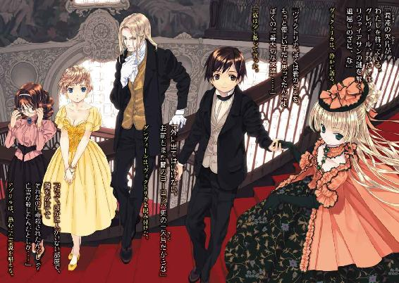

| GOSICK 04 愚者を代弁せよ | |
| 桜庭一樹 | |
| KADOKAWA / 角川書店 (2012) | |

GOSICK Ⅳ
─ゴシック・愚者を代弁せよ─
桜庭一樹

角川ビーンズ文庫
本作品の全部または一部を無断で複製、転載、配信、送信したり、ホームページ上に転載することを禁止します。また、本作品の内容を無断で改変、改ざん等を行うことも禁止します。
本作品購入時にご承諾いただいた規約により、有償・無償にかかわらず本作品を第三者に譲渡することはできません。
本作品を示すサムネイルなどのイメージ画像は、再ダウンロード時に予告なく変更される場合があります。
本作品は縦書きでレイアウトされています。
また、ご覧になるリーディングシステムにより、表示の差が認められることがあります。
目次
口絵・本文イラスト／武田日向
あたし、花園を一つぬすんじゃったのよ。それは、あたしのものじゃあないの。だれのものでもないの。だれもそれをほしがらないし、だれもかまってはやらないし、だれもそこへは入って行かない花園なの。たぶんそのなかのものはもうみんな死んでいるんでしょう──
──『秘密の花園』バーネット
龍口直太郎訳 新潮文庫
プロローグ 『黒き塔の幻想』
そこは黒と白しかない世界。
それはまるで昼と夜のような、黒と白──。
黒き塔は宵闇にたゆたうように、そこにあった。
朧月夜がほのかな青白い光で塔を照らしていた。
村外れの小高い丘──。
黒き塔はとがった屋根を夜空に突き刺していた。巨大な丸時計が塔から顔を出し、漆黒の鎌のような二本の針で時を告げていた。
何者もいない。
静かで、不吉な夜──。
やがてその闇を蹴散らすように、黒い馬車が丘を上ってきた。とつぜん夜空に雷鳴がとどろき、二頭立ての馬が驚いたように嘶いた。
馬車が停まると、中から黒衣の女が飛び出してきた。女が振り向いてなにか言おうとするのを聞こうともせず、御者は馬を操り、まるで逃げるように丘を下っていく。
女は途方に暮れたように立ち尽くしていたが、再びの雷鳴の後、夜空から矢のように冷たい雨が降り落ちてくると、あわてて走り出した。
黒き塔へ。
塔は、二つの四角い窓がまるで人間の目であるかのように、女の姿を冷たく見下ろしていた。窓の内側で白い灯りが瞬くと、それは怪物の瞬きのようだった。
女は黒き塔に吸い込まれていく......。
そして塔の内部は──まるで悪夢の製造装置。
灰色に沈む、暗い部屋。塔と同じ丸い形をしている。
頭上は吹き抜けで、遥か上は漆黒の闇に沈み、見上げると、まるで底なしの沼を覗いているよう。どちらが上でどちらが下か少しずつわからなくなる──。
闇を斬る剣のように、なにかがゆっくりと右から、左へ動いている。空気が揺れる。それは近づいてくると巨大な振り子で、また左から右へ、不吉な風を起こしながら戻っていく。
ギリギリ、ギリギリギリギリ......。
部屋の隅にある巨大な四つのぜんまいが、奇妙な低い音を立てて絡みあっている。歯車が嚙み合い、また外れ、また......。
ゆっくりと部屋に入ってきた黒衣の女が、恐ろしげに部屋を見回した。
女は──黒いベールを取ると、まだうら若き乙女だった。何色かうかがい知ることのできぬ髪と、瞳。分厚い外套を脱ぐと、真っ白なドレスを身にまとっていた。
怯えたように部屋を見回し、ぜんまいと振り子に眉をひそめた後、黒檀のテーブルをみつけて、駆け寄る。
テーブルにはさまざまな書物や実験道具が散らばっていた。乙女があわててそれらを手に取り、なにかを探し始めると同時に──、部屋の真ん中に一陣の白い煙が上がった。
乙女は気づかない。
煙はやがて人の形となり、そしてそこには......。
乙女が気配に気づきようやく振り向いたとき、そこには、不気味な仮面をまとい、ローブを羽織った怪人が立っていた。
乙女が声を上げる。そしてなにか言葉を発するように唇を動かす。
お許しください、黒き時計塔のあなたさま！
あなたさまのお力がどうしても必要なのです。
病気の父が、黄泉の国に旅立ってしまいそうで......。
あなたさま、と呼ばれた仮面の男が、一歩、近づいてきた。
乙女の細い躰が恐怖に震える。
男はゆっくりと、手袋をした片手を上げて、己の仮面をつかんだ。
そして語りだした。
乙女よ。穢れなき乙女よ。
我が呪いをとくと見るがよい。
これが不死の男の、哀れな顔である！
男の仮面がゆっくりとはがれ、その手から落ちた。暗い床にゴトリと落ちて、それを巨大な振り子の影が隠していく。
乙女の美しい顔が恐怖と驚きに歪む。
男はなおも叫ぶ。
これこそが、不老不死の、本当の姿である！
乙女は瞳を見開き、真っ白な手のひらを顔に当てて喘いでいる。それから手を喉に当て、苦しみ始める。
よろよろとよろめき、床に倒れ伏す。むきだしの白い肩が震えている。振り子の黒い影が、立ち尽くして乙女を見下ろす男の姿を暗く覆い隠している。
振り子の影が動き、男の姿は右下から左上に、ゆっくりと白い光の下に照らし出されていく。
乙女は恐怖のあまり、叫んだ。
嗚呼、なんと恐ろしい、そのお顔の秘密──！
第一章 錬金術師の回顧録
１
真っ暗な部屋の中に、背もたれ付きの椅子が規則正しくたくさん並んでいた。村人たちはそれぞれ椅子に腰掛け、固唾を呑んで、フィルムがスクリーンに映しだすモノクロームの映像をみつめていた。
いましも、黒き塔に現れた怪人が仮面を取り、その恐ろしい顔が映しだされるという瞬間......。
音楽も劇的に高鳴り......。
その、村にできたばかりの小さな映画館──長らく使われていなかった小さな劇場を村の若者が改築して、ようやくできあがった建物──には、今日もまた村人たちが続々と、怪奇映画『黒き塔の幻想』を目当てに押し寄せていた。丈夫な木綿の衣服姿の村娘に交じって、あか抜けた服装をした少女と、連れらしい東洋人の少年が座っていた。どうやら、村外れにある貴族の子弟用の学園、聖マルグリット学園の生徒たちであるらしい。
その、村人からちょっと浮いている二人組の片方──金髪のショートヘアにすらりとした手足の少女は、さっきからずっと、スクリーンに釘付けになっていた。反対に、無理やり連れてこられたと思われる連れの少年は、もうずっと一時間近く、武士の如きびしっと背筋をのばした姿勢で座席に座ったまま、きつく目を閉じて......静かに眠っていた。
スクリーンに乙女の台詞が映しだされると、村人たちは一斉にどよめいた。
『嗚呼、なんと恐ろしい、そのお顔の秘密──！』
金髪の少女──アブリル・ブラッドリーがごくんと唾を飲む。
そして......。
大きな効果音とともに、スクリーンいっぱいに、ついに怪人の顔が映しだされた。
「きゃあ！」
アブリルは大声を上げて、抱えていた茶色い箱を思わず放り投げた。食べかけのチョコチップクッキーが盛大に天井に向かってぶちまけられた。アブリルは空いた両手で、となりで爆睡中の久城一弥の首を絞めた。
「骸骨ぅぅぅ!?」
「........................うわあぁぁぁぁぁ！」
一弥は飛び上がった。後ろの席から一斉に「座れ！」「見えないってば！」「クッキーが降ってきた！」などと村人たちの声がした。一弥はあわてて頭をきっちり九十度下げて謝り、クッキーを拾い集め、また席に座った。
横目でアブリルを睨む。
アブリルは口を開けて、瞳をきらきらさせて、スクリーンをみつめていた。その無邪気で楽しそうな横顔を、一弥はしばらくじっとみつめていたが、やがてしょうがないなぁというように苦笑すると、また座り直し、静かに目を閉じた。
時は一九二四年──。
ヨーロッパの小国、ソヴュール王国。
スイスとの国境は、緑豊かな山脈と湖と、深い森。フランスとの国境は、どこまでも広がる広大な葡萄畑。イタリアとの国境は、地中海に面した美しい避暑地。謎めいた回廊のように細長い形状をしたこの小さな王国は、列強に囲まれながらも先の世界大戦を生き延び、その長い荘厳な歴史と国力、列強への発言力もあり、西欧の小さな巨人と呼ばれていた。
王国の、地中海に面したリヨン湾を豪奢な玄関とするのなら、アルプス山脈は、もっとも奥深い場所に隠された秘密の屋根裏部屋と言えた。その山脈の麓にあるこの小さな村は、ワインと果物の産地として知られる美しくのどかな土地だった。その村の外れに、ひっそりと、中世から息づく不思議な学園があった。
聖マルグリット学園──。
表向きは貴族の子弟のための教育機関として知られていたが、謎も多く、強大な力を持つ小さな不思議な王国の秘密の何割かは、この学園に隠されていると考える向きもあった。秘密主義の学園は、しかし先の大戦終結後、同盟国であった幾つかの国から、優秀な生徒を留学生として受け入れ始めた。
久城一弥は、その同盟国の一つ、とある極東の島国から、優秀な成績と品行方正さを買われてやってきた留学生だった。新しい生活に心躍らせ、その一方で生まれ育った国に家族と、ある欠落を置いたまま海を渡り、この国にやってきた......。
一弥の留学生活には、貴族の子弟たちの偏見や、学園に蔓延る謎の怪談ブーム、言葉や文化の壁と、そして......。
あまりにも奇妙な、そして見たこともないほど美しい、不思議な少女ヴィクトリカ・ド・ブロワとの出会いと、幾つかの冒険......。
さまざまなものに彩られていた。
「久城くんったら、あんなに大きな悲鳴上げて。怖がりなんだからぁ！」
映画館のスイングドアを開けながら、アブリルがやけに浮き浮きとそんなことを言い出したので、一弥は真面目に抗議した。
「君、ちがうよ。ぼくは怪人の顔がおっかない骸骨だったから悲鳴を上げたんじゃないよ」
「またまたぁ」
「ほ、ほんとだよ。その証拠にぼくはずっとずっと眠ってたんだからね」
「怖くて目をつぶってたんでしょ。アブリルちゃんにはわかってるもん。それに、眠ってたならあのタイミングで悲鳴なんて上げられないでしょ？」
「そうじゃなくて、あれは君がぼくの首をぐいぐいと......」
「久城くん」
アブリルが真面目な顔をして向き直った。
「ぐいぐいと絞めて............なに？」
「いいわけしちゃダメ」
「ええ!?」
「久城くんが怖がりで情けなくて弱虫でテストが赤点でも、わたしは久城くんを嫌わないよ？」
「............」
一弥は抗議を続けようとして、あきらめた。
（そりゃ、ちょっと情けないときは確かにあるけど、断じて怖がりじゃないし、それにテストはいつもクラスでいちばんなのに......）
アブリルのほうは、納得できずにふくれている一弥に気づく様子もない。楽しそうにスキップ混じりに、映画館を出て歩きだした。
村のいちばんの繁華街である街道には、初夏の日射しが降り注いでいた。ついさっき夏の通り雨が降って道路を濡らしていったのだが、いまはもう晴れて、店の木看板や並木道の木々が、水滴を弾いて輝いていた。街道の左右を彩る三角屋根の家々や、窓から垂れ落ちる鮮やかな緑色の蔦、そして咲き誇るゼラニウムの花などが眩しかった。
日曜日の昼下がり──。
丸二か月という長い長い夏休みをあと数日後に控えたこの週末の日は、テストもほとんどの授業も終了しているためか、ゆっくりと過ぎていくところだった。村まで遊びにきた一弥とアブリルも、今日は制服ではなく、それぞれの普段着を着てのんびりと歩いていた。
一弥は木綿のシャツに革のベストを羽織っていた。アブリルはシンプルな白モスリンのブラウスに、かわいらしい水玉模様のフレアスカート姿で、長くてのびやかな手足を振り回すようにして元気に歩いていた。
「あれ......？」
アブリルが急に思案顔になって、足を止めた。一弥もつられて立ち止まる。
「どしたの、アブリル？」
「ううん。あのね、わたし、さっきの物語をどこかで聞いたことがあるような気がするの。黒き塔に潜む仮面にローブ姿の怪人と、そこで変死する乙女......」
一弥は興味なさそうにただうなずいている。
「そりゃアブリル、君なら聞いたことあるだろ。だって君は、古今東西の怪談を読みまくってるんだからね」
「うん。そうだけど......」
アブリルはしばらく考え込んでいたが、また歩きだした。
郵便局の前で立ち止まると、
「ちょっと待ってて」
走って郵便局に入っていった。
一弥は手持ちぶさたに待っていた。
そこを、背の高い男二人組がぶらぶらと歩いてきた。一人は帽子を目深に被っていたが、燃えるような赤毛が帽子の下から覗いていた。もう一人は一弥と同じ東洋人の男で、端整な顔立ちに、妙に冷たい目つきをしていた。
村娘たちがすれ違いざまに、見覚えのない青年二人を振り返り、誰かしらと言うように顔を見合わせた。二人の男は視線に気づいて立ち止まると、娘たちに愛想良くウインクしてみせた。村娘たちは恥ずかしそうに頰を染めて、歩き去っていった。
一弥がその二人組の男を見るともなく見送っていると......。
「お待たせ！」
アブリルが郵便局から飛び出してきた。片手に受け取った郵便物を抱えている。
「通信販売で買い物したの。ソヴレムの大きなお店なら、お金を先に送ると郵便で届けてくれるのよ」
「そうなんだ。知らなかった」
一弥は感心した。
二人でまた歩きだすと、アブリルが、
「だけど、どうしても聞き覚えがある気がするの」
「聞き覚えって？......なんだ、さっきの怪談の話かぁ」
「もう、真面目に聞いてってば」
めずらしく無口になったアブリルと一緒に、学園までの村道をゆっくり歩いていく。
少しずつ家々が減って、村道の左右にはなだらかな葡萄畑が広がり始めた。夏の日射しに濡れた葡萄の蔓が眩しく輝いていた。荷馬車がゆっくりと二人を追い越していく。
学園の正門が見え始めた。複雑な唐草模様のところどころに金色の飾りを配した正門の鉄柵に辿り着いたとき、アブリルがとつぜん、
「あああ!!」
「な、なんだよ。アブリル」
「思い出した！ 久城くん、こっち！」
アブリルが一弥の手をつかんでぐいぐい引っ張った。一弥はつられて走り出した。正門を抜けて、学園の敷地に入る。
フランス式庭園を模した敷地には、いつもの週末よりも生徒たちの姿が目立った。休暇が目前に迫っているせいか、生徒たちは庭園のベンチや東屋、芝生の上などで思い思いにくつろいだり、小径をそぞろ歩きながら楽しそうな笑い声を上げていた。クリスタルの噴水がさっきの通り雨を受けて瑞々しく輝き、日射しを照り返して眩しいほどだった。
一弥はアブリルに引っ張られて庭園を走り抜けながら、
「だから、なんだよ？」
「黒き塔！ 黒き塔の怪談！ どこで聞いたか思い出した！」
アブリルが立ち止まった。その青い瞳はきらきら輝いて、じつに楽しそうだった。一弥はしばらく逡巡していたが、仕方なく聞き返すことにした。
「......聞いたって、どこで？」
「ここよ！」
アブリルはうれしそうに答えた。
「この聖マルグリット学園でよ。そうよ、あの時計塔のデザイン、どこかで見たと思ったんだわ。久城くん、見て。あれよ！」
アブリルはびしっと空を指差した。
一弥は指差されたほうを見上げた。
そこには......。
古めかしい、大きな時計塔がそびえ立っていた。
塔は暗い灰色に染まっていた。てっぺんの屋根がぎざぎざと尖り、複雑な形をしていた。巨大な丸時計と漆黒の針が遥か上で時を告げていた。
その屋根に一弥は目をこらした。あの怪奇映画に出てきた黒き塔とよく似た、尖った屋根......。それは確かに、偶然にしてはずいぶんよく似ていた。
二人は顔を見合わせた。
「......アブリル、どういうこと？ どうして映画に出てきた建物と同じものが、この学園の中にもあるんだろう？」
「さぁ......。なにかの呪いかなぁ？」
「呪い？ アブリル、君ね、なんでもそういうことに結びつけて面白がるのは、ぼくはあまり感心しな、い............ちょっと君、どこに行くんだい？」
アブリルは生真面目になにやら主張している一弥を置いて、どんどん時計塔に近づいていった。あわてて一弥が後を追うと、アブリルは、不気味な模様のように塔を取り巻く枯れたブナの枝をひょいひょいと避けて、塔の入り口らしきドアの前に立った。
一弥は足を止めた。
風が吹いて、塔の石壁をブナの枯れ枝がこする音が、暗いささやきのように辺りに広がった。腐りかけたような古い木のドアには、蜘蛛の巣が幾層も張りついている。見上げると、小さな窓が二つ、怪物の目のようにじっとこちらを見下ろしていた......。
「アブリル......？」
ドアノブを引っ張っていたアブリルが、どうやら鍵が閉まっていたらしく、がっかりしたように肩を落とした。一弥はほっとして、
「どうやら入れないみたいだね」
「うん......」
「あの、ぼく図書館に用があるから、もう行かなきゃ......」
図書館、と聞いた途端に、うなだれていたアブリルがぱっと顔を上げた。あわてて一弥の手を引っ張り、
「待って、行かないで。あの、ほら、こうすればいいし！」
「......こうって？」
「えっ、えっと......そ、そう。こうよ！」
やけくそになったアブリルが、長くてしなやかな足を振り上げた。水玉のフレアスカートが風にふわりとふくらんで、健康的なつややかな彼女の足が一瞬、宙を舞った。
──げしっ！
アブリルが蹴飛ばすと、ドアは驚いたように沈黙し、それからゆっくりと、キィィィ......と音を立てて内側に開いた。
アブリルは痛そうに顔をしかめて、なにやらうめき声を上げながら、その場でぴょんぴょんと跳ねた。それから無理やり笑顔を作って、
「久城くん、開いたよ！」
「ちがうよ、君が壊したんだ！」
「い、いいから入ろ！」
アブリルに腕を引っ張られて、一弥はいろいろと抗議しながらも、時計塔の中に一歩、入り込んでしまった。
時計塔の中は薄暗く、まるでこの世が消滅したような静寂に満ちていた。
長い廊下が続き、その後、細長い階段があった。二人が歩くたびに埃が舞い、アブリルが盛大に咳き込んだ。それから一弥の腕を摑んで、
「なんだかクラクラする。へんな感じ......」
「うん、ぼくも......」
時計塔の中を歩くうちに、一弥も頭を誰かに揺すられているようなおかしな不快感を覚え始めていた。
先に階段を上がり始めたアブリルが、蹴躓いて、「きゃあ！」と叫びながら一弥の上に落っこちてきた。二人で盛大に階段から転がり落ち、埃に咳き込みながら起きあがる。
「アブリル、もう帰ろうよ。ぼく、図書館に......」
「いや！」
「......いや？」
アブリルは振り返って、
「ええと、ほら、あの映画の......最後のシーンの部屋、それがこの塔の中にあるはずだと思うの」
一弥は思いだした。ほとんど眠っていたが、確かアブリルに首を絞められて目を開けたときのシーンだ......。巨大なぜんまいと金属の振り子がぎりぎりと音を立てる不気味な部屋。黒き塔に潜む仮面の怪人が、おかしな実験用の工房にしていた部屋だ。
「そんなの、あるわけ......」
アブリルは一弥の抗議にお構いなくずんずん進んでいった。二人とも、なぜか頭が痛くなって人差し指でこめかみを押さえている。
やがてアブリルがドアをみつけて、いやがる一弥に構わず、また足を振り上げて蹴破った。痛そうにぴょんぴょん跳ねながらも、
「......あった！」
アブリルの顔がぱっと輝く。一弥も腕を引っ張られて、その部屋を覗き込んだ。
そこには......。
あの怪奇映画『黒き塔の幻想』に登場したのと瓜二つの、灰色に沈んだ不気味な部屋が、時に忘れ去られた生き物のようにゆっくりとうごめいていた。
薄暗いだだっ広い空間。
暗い天井は遥か上まで吹き抜けで、埃っぽい空気を斬るように、巨大な時計の振り子がゆっくりと、右に......そして左に......揺れ続けている。
その向こうに四つの巨大なぜんまいがうごめいている。一つ一つが歯車をきしませ絡み合い、
ギリギリギリギリギリギリ......。
なんともいえない奇妙な低い音を響かせている。
まるで、悪夢の製造装置の内部に入り込んでしまったかのような──
息苦しさと、正体のわからない恐怖を感じさせる──
一弥は思わずぐっとこぶしを握った。それから少し落ちついて、薄暗いその部屋の中をゆっくりと見回した。
──大きな黒檀のテーブルに大小さまざまな実験道具が散らばっていた。まるでついさっきまで誰かが使っていたかのように乱雑に置かれたそれらは、すべてが埃を被り、部屋全体を包む暗い灰色に沈んでいる。
一弥は一方の壁を見上げた。その壁にはめ込まれた大きなステンドグラスだけが、この灰色に沈む工房に鮮やかな色彩を放っていた。それは花畑を描いためずらしいステンドグラスで、暗い紫色と黄色の花々が咲き乱れる中、一つだけ赤い花が咲いていた。
暗く、不吉な、巨大なぜんまいと振り子の部屋──。
一弥は息を呑んで、それらを見回した。
その部屋は確かに、ついさっき観た映画と気味が悪いほど酷似していた。怪奇映画に登場した、怪人の潜む時計塔と、学園の時計塔──。
（これって、どういうことだろう......？）
傍らを見ると、アブリルが不安そうに考え込んでいた。
「もしかしたら......」
「......ん？」
「ほら、わたしが、あの怪奇映画の物語、どこかで聞いたことがあるって言ったでしょ？ 思い出したの。この学園にまつわる怪談の一つに、すごく似てたのよ」
「どんな話？」
「あのね、まずこれは史実なんだけど、二十年か三十年くらい前、ソヴュール王国にはすごく有名な魔術師っていうか、錬金術師っていうか......とにかくすごいへんな人がいたの。仮面とローブ、それに分厚い手袋という異様な姿でね。そのへんな人は王妃にものすごく気に入られて寵愛を受けてね、そのうち国政に関わるようになったんだって」
「へぇ......」
一弥が興味を持ったようにうなずくと、アブリルはうれしそうにぱっと顔を輝かせた。
「それでね、錬金術師はこの学園の時計塔に工房を造って、そこに籠もって、恐ろしい力をふるい続けたって。次第に、誰も彼には逆らえなくなって、だけどそのぶん政敵も増えてね」
「へぇ、そんなことがあったんだ。知らなかった。じゃ、ここがその工房跡ってこと？」
「多分ね。でね、怪談はここから。あるとき彼の力を恐れた国王が、この学園に王立騎士団を派遣して、ついに彼を暗殺しようとしたの。ところが毒矢を放っても放っても、錬金術師はまったく死ななくてね。どこかにすたこら逃げちゃったの。騎士団が必死に捜したけどみつからなくて......。彼は不老不死だったのだ、だから仮面とローブ姿で老いない体を隠していたのだと噂されて......」
「へぇ......」
「そしてそれ以来、時計塔には怪人が潜んでいて、夜な夜な、徘徊を繰り、返、すぅ............きゃあああああ！」
「大きな声を出さないでよ。それより、それなら説明は簡単じゃないか」
冷静な顔でうなずいている一弥に、アブリルは不満そうに頰をふくらませた。
「どういうこと？」
「つまりさ、それがもし史実なら、さっきぼくたちが観た映画と、この時計塔が酷似していることの説明はつくだろう？」
「えー」
「つ、つくってば。つまり、この時計塔には昔、へんな人がいた。そのせいでいまでも怪人が潜んでいるという怪談が生まれた。あの映画はその怪談を知っている人によって撮られたんだ。だから建物や工房のデザインも、物語の内容もよく似てるんだよ。さ、戻ろう」
「うーん......」
アブリルは悔しそうに唇をとがらせた。
「それじゃ、つまんないよ......」
「真実とは得てしてそういうものなんじゃないかな」
「ちぇっ！ 久城くんのばーか！」
「げっ！ ど、どうしてだよ」
「......知らない！」
アブリルはふんとそっぽを向いた。
「あ、そ。まぁいいや。じゃ、ぼく、図書館に用があるから......」
ため息をつきながらも工房を出ようとしていた一弥は、背後からごそごそとへんな音がし始めたので、振り返った。
アブリルがなぜか、さきほどから小脇に抱えていた包みをここで開けているところだった。確か、郵便局で受け取った包みだ。ソヴレムのお店から通信販売で買ったという......。
「君、なにしてるの？」
「この時計塔にいる怪人のことを、聞いてみようと思って」
「聞くって、いったい誰に？」
「こ、れ、に！」
アブリルは得意満面に、包みから出てきた妙なものを差しだした。
それは四角い木の板で、表面にはアルファベットが印刷されていた。ハート形をした黒い石もセットになっていた。
一弥はしばらく悩んだ。
「......それ、いったいなんなんだい？」
「ウィジャー盤っていうの。プランシェットに使うんだよ。ね、やってみよ？」
「プランシェットって？」
「精霊とお話をするための道具なの。いい？ ここにこの石を置いて、人差し指で触るの。そして質問をすると......」
「なんだよ、それ。ね、ぼくはもう行くよ」
アブリルはあわてて一弥を引き留めた。
「待って。これって二人じゃないとできないのよ。もうちょっと待ってってば！」
「いや、でも......」
一弥は抗議しようとして、数秒なにごとか逡巡し、あきらめてアブリルのとなりに座った。言われたとおりに石の上に人差し指を置く。
アブリルはほっとしたように胸を撫で下ろすと、目を閉じて......、
「精霊さまに質問です」
「ぶっ！......いてっ！」
思わず吹き出したら、アブリルに頰をつねられた。
「精霊さま、ここにはかつて錬金術師がいましたか......？」
アブリルがそっと目を開ける。
黒い石はゆっくりと動いて、ウ、イ......肯定の言葉を指し示した。一弥が顔をしかめて、
「まったく。アブリル、君が動かしてるんだろ？」
「静かに！」
「......すみません」
アブリルはまた目を閉じた。
「精霊さま、ここにはいまもまだ、錬金術師の霊魂がいるのですか......？」
「いるわけないだろ。もう帰ろうよ。ぼくほんとに、そろそろ図書館に行かなきゃ......」
「しっ！」
「すみません......。もうっ、ぼく、なんでいつも君とかヴィクトリカとかセシル先生とか、女の人に謝ってばっかりなんだろう？ ソヴュールにきてからのここ数か月で、もう一生分謝ったよ。決めた。この後の人生でぼくはぜったいに謝らないよ。だってもう一生分謝ったんだからね......」
「静かにしてってば」
「ごめん......」
一弥はアブリルがみつめているもの──ウィジャー盤に視線を落とした。
アブリルの指がぶるぶると震えていた。驚いて顔を見ると、青ざめて額に冷汗を浮かべている。
「どしたの？」
「久城くん......。わたしじゃない。ほんとに、動、い、て......」
アブリルが震える手をゆっくりと石から離した。
石はいま、ウイ（OUI）、の〈Ｕ〉のところにあった。
一弥も戸惑いながら、指を離した。
石は誰も触っていないのにするすると動いた。そして......。
ウイの〈Ｉ〉のところで、ぴたり、と止まった。
「ウイ。肯定だわ。錬金術師の霊魂は、まだこの時計塔にいる......」
アブリルが短く悲鳴を上げた。二人とも手を離したことに気づいて、
「どうしよう！ プランシェットを途中でやめたらいけないのよ。ほら、ここに......説明書にも書いてあるの。途中でやめたら、あの世から邪悪なものがやってきてしまうの。どうしよう......！」
続けて、短く悲鳴を上げる。
誰も触っていないウィジャー盤が、するり、するり、と誰かが引きずるように床を移動して、二メートルほど動いて、ゆっくりと止まった。
二人は顔を見合わせた。
どこからかかすかな物音がした。目に見えない誰かが二人の前を横切っていったかのような、床のきしる音。そして......。
工房のドアが音もなく開いた。アブリルは悲鳴を上げて一弥にぎゅっと抱きついた。
誰かの足音が遠ざかり......。
それと同時に、近づいてくる足音もあった。密やかな、軽い足音。階段を上がり、工房の前までやってきて、そして、開け放されたドアから、一歩、入ってくる......。
アブリルが「きゃああ！」とまた悲鳴を上げた。
すると入ってきた人もまた、
「きゃっ！」
小さな悲鳴を上げ、飛び上がった。
入ってきたのは、象牙色のシンプルなワンピースを着た小柄な女性だった。肩までのふわふわブルネットに、大きな丸眼鏡。文字通り飛び上がって、あわてて眼鏡を外して、それからこわごわと、もう一度眼鏡をかけた。
垂れ目がちの大きなブラウンの瞳を見開いて、
「なんだ。久城くんとアブリルさん......」
セシル先生だった。
一弥とアブリルも、緊張の糸が解けて、ぽかんと口を開けてしばらく先生をみつめていた。セシル先生はいつになく厳めしい顔つきになって、
「二人とも、こんなところでいったいなにしてるの？ ここは生徒は立入禁止よ。誰かがドアを蹴破ったような足跡がついてたから、入ってきてみたの。さぁ、先生に正直に言いなさい。ドアを蹴破った乱暴者は、久城くん？ それともアブリルさん？」
アブリルは気まずそうにうつむき、一弥は困ったようにもじもじしている。セシル先生はおもしろくなってきて、つい、
「犯人は一か月の外出禁止ですよ」
アブリルが切なそうな表情になった。目尻に涙を浮かべる。それに気づいた一弥が、あっと思案顔になった。
「じゃ、二人とも目を閉じなさい」
二人はおとなしく目を閉じた。
「自分がやったと思う人は、手を上げなさい」
しばらく二人とも動かなかった。
やがて一弥が渋々、情けなさそうな表情で、しかし姿勢正しくびしりと挙手した。
続けてアブリルも、そっと手を......上げたのではなく、この人ですよと言うようにとなりの一弥を指差した。
セシル先生は思わず吹き出した。
「二人とも手を元の場所に戻して、目を開けなさい。あはははは！ アブリルさんは、これからはドアを足じゃなく手で開けるように気をつけてね。あと、久城くんは......」
セシル先生は二人を工房から追い立てながら、
「久城くんは、そうねぇ......」
しばらく考えていた。
「......もしかして女難の相があるのかも。先生、ちょっと心配になってきた」
セシル先生から追い立てられて時計塔から飛び出した一弥とアブリルは、外に出た途端にふうっと息をついた。
塔の中にいたときの、頭がくらくらして痛くなってくるような圧迫感は、外に一歩出ると消えていた。二人は何度も深呼吸した。
「二人とも、もう二度とここに近づいちゃだめよ。わかったわね？ 夏休みまであと三日だからといって、気を抜かずに真面目にしてなきゃだめですよ？ ここの鍵は、先生が今日中につけかえておくけど......。いいわね、ぜったいにここに近づかないで」
セシル先生が何度も繰り返した。いつになく真剣な顔つきに気づいた一弥が、
「どうしてですか？」
セシル先生は答えずに、何度も首を振った。
「とにかく、ダメなの。ダメなものはダメなのよ」
何度もただそう繰り返した。
塔の周りの空は、分厚い灰色の布を広げたように暗く曇っていた。夏の虫が庭園のところどころで鳴いていた。
そしてセシル先生が足早に去っていくと、庭園の隅、塔から少し離れた緑眩しい芝生には、一弥とアブリルだけが残された。アブリルは思案顔で、
「ねぇ、セシル先生の言い方、なんだかへんじゃなかった？ もしかしてこの時計塔にはなにかあるのかしら？ 久城くんは、どう思う......？」
そこまで話して、返事がないことに気づいた。あわててきょろきょろすると、一弥はもう後ろ姿になって、どんどん遠ざかって行くところだった。
アブリルは一弥が急いで向かっている方向に目をこらすと、ぷくっと頰をふくらませた。
「あ、逃がしちゃった！ もう......。今日こそ、図書館に行くのを邪魔しようと思ってたのに......」
ため息をついて、自分もゆっくりと歩きだす。
風が吹いた。ショートヘアのせいでむきだしになったアブリルの白いうなじに、樹木の葉からぽつんと水滴が落ちてきて、首筋へころころと転がって消えた。
「ちぇっ！」
つまらなそうにつぶやく。
「デートのつもりで誘ったのになぁ。だって、映画に誘うってそういうことでしょ？ いちばんかわいく見える服着て、お洒落して、張り切ってきたのに......あの子ったら、となりでぐぅぐぅ眠ってるんだもん！」
ふくれっ面になり、
「赤点なんて取ったことないのは、知ってるよーだ」
大きくため息をついて、肩を落とした。
空を見上げる。夏の空はどこまでも高く、澄んでいた。白い小鳥が数羽、気持ちよさそうに空をよぎっていく。噴水も、花壇の花も、なにもかもが通り雨の水滴に濡れてきらきらと輝いていた。
アブリルは小径のベンチに座ると、痛そうに何度も足をさすった。それから小声で、
「久城くんの、ばぁか！」
急にごうっと大きな風が吹いて、アブリルは短い髪を吹き上げられ、思わず目をつぶった。それからゆっくりと瞳を見開いた。
つぶらな青い瞳に、戸惑いと、怖れが浮かぶ。
アブリルはゆっくりと時計塔を振り返った。小さな四角い窓が二つ、まるで怪物の目のようにアブリルを見下ろしていた。誰かにじっと見られているような、密やかな視線の気配がした。アブリルは不安そうに眉をひそめ、もう一度じっと時計塔を見上げた。
「そういえば、さっきプランシェットを途中でやめてしまったんだったわ。確か説明書では、そんなことをしたら邪悪な霊がやってきて、戻らなくなってしまうんだったけど......」
アブリルは青い瞳を見開いて、つぶやいた。
「そんなこと、起こらないよね......？」
風が吹いた。
灰色に沈む時計塔に影が差して、その姿をいっそう暗く、黒く染め変えていった。
２
そして、その頃。
聖マルグリット大図書館──。
広々とした学園の敷地。その奥の奥に隠された高い塔は、ここ三百年余そうであったように、今日もまた静寂に包まれていた。
欧州でも指折りの知識の殿堂でありながら、秘密主義の学園ゆえにその存在を知る人は多くはない。風雨に晒され色を変えた石の塔には、よく見ると小さな革張りのドアがあるのだが、そこを開けて中に入っていくものの姿はあまりみかけることがない。
内部は、目眩がするほど高いところにある天井まですべてが吹き抜けになったホールで、壁は四方ともすべて巨大書棚となっていた。革張りの分厚い書物が何万冊も、ぐるりとこの空間を取り囲んでいる。知性と、静寂。この場所にあるのはただただそればかりだった。
天井を見上げると、細い木の階段が迷路状に入り組んで上へ上へのびている。そしてそのもっとも上にかすかに見えるのは、荘厳な宗教画が描かれた美しい天井と、そして......。
金色の細長い、なにか......。
まるで図書館に隠れ棲む不思議な生き物が、うっかりしっぽを垂らしているかのような、なにか......。
時折かすかに揺れて、下にいるものを誘うようにうごめいてはまた、止まる。
この図書館には、生徒に噂されるさまざまな寓話があった。曰く、これは十七世紀初頭に当時のソヴュール国王が建設した建物で、あの誰も上がっていけないほど入り組んだ迷路階段のいちばん上には、恐妻家であった彼が秘密の愛人と逢瀬を楽しむためにつくった小さくて豪奢なベッドルームがあるのだとか。曰く、そのいちばん上の部屋には、金色の小さな妖精が棲んでいるのだとか......。
その妖精の噂の根元になったと思われる、金色のしっぽの持ち主は、夏の休暇を前にはしゃぐ下界の様子など何処吹く風だった。眩しい夏の日射しに照りつけられることも、とつぜんの通り雨に驚くこともなく、今日もまたいつもと同じように、迷路階段を上がった先にある秘密の植物園で、厳めしい顔をして読書に励んでいた。
南国の木々が生い茂り、毒々しい赤い花が咲き誇るその植物園と、階段の踊り場の中間に、半身を投げ出すように、小さな美しい少女が転がっていた。
ヴィクトリカ・ド・ブロワ──。
ソヴュール王国で力を持つ貴族、ブロワ侯爵と、謎めいた血筋の踊り子、コルデリアとのあいだに生まれ、なぜかこの学園に幽閉されている少女だ。彼女は今日もまた、花模様を散らせたピンクのドレスに、雲の上しか歩けないような繊細なレースアップシューズ。フリルとレースに縁取られた豪奢な姿で、かなりけだるげに、パイプをくゆらしていた。
小さな顔は驚くほど整って、一見、人ではなくまるで職人が丹精込めて造った陶人形のようにも見える。小さな鼻とさくらんぼのようなつややかな唇。頰は薔薇色──。しかし、その薄いエメラルドグリーンに輝く瞳だけが、薄くけぶり、大人とも子供ともつかない、不思議に冷酷めいた、彼女独特の雰囲気を醸し出している。
鮮やかな金色の髪は足元まで届くほど長く、それが不思議な生き物のしっぽのように階段の手すりから下へこぼれ落ちて、物憂げに揺れている。
小さな手には、陶製のパイプ。時折、唇に近づけてはぷかり、ぷかり、と吸う。パイプから白く細い煙が天窓に向かってまっすぐ上っていく。
彼女の周りには分厚い書物がいくつも開かれて散らばっていた。そのどれもが、難解な学問書や魔術書、辞書などで、どれをとっても、一冊読むのにずいぶん時間がかかりそうな代物だった。しかしヴィクトリカはそれを何冊も同時に読み進めているようだった。何冊ものページをめくり、目を走らせ、まためくり続けている。
しばしその作業に没頭していたヴィクトリカは、しかし、とつぜん顔を上げるとうめいた。
「......退屈だ」
子供が駄々をこねるように、両足をばたつかせた。書物が蹴飛ばされてあちこちにすっ飛んでいった。
ヴィクトリカはパイプを、傍らにある靴の形のパイプ置きに置くと、とつぜんごろんと横になった。そして体をきゅっと縮めて小さなフリルのボールみたいになると、右に、左に、ごろんごろんと転がり始めた。そのたびに散らばった書物が遠くに飛ばされていく。
「退屈だったら、退屈だ！ どうしろと言うのだ？ 死ぬ！ 退屈が喉までせりあがってきたら息が止まって死ぬ。医学的にもあり得るのだ。あぁ......」
ヴィクトリカはフリルのボール状態でしばらく植物園の床を右に、左に、前に、後ろに転がり続けていたが、急にむくりと起きあがった。
迷路階段の手すりに小さな手をのばし、遥か下の、図書館の入り口辺りをぼんやりとみつめた。
この広大な知識の殿堂にいるのはヴィクトリカ一人で、命あるものは誰もやってくる様子がない。いつもなら、革張りのスイングドアが勢いよく開いて、「ヴィクトリカー！」と叫びながらおかしな東洋人の少年が迷路階段を駆け上がってくるはずの時間なのだが、今日は......。
「今日は、遅いな......」
ヴィクトリカは小声でつぶやいた。
それから、はぁ......とため息をつき、しばらくぶらんぶらんと手すりにぶら下がっていた。金の髪が遥か下のホールに向かって垂れ下がり、左右に揺れる。
「もう、飛び降りちゃおうかな。そしたらもちろん死ぬが、一瞬、いい感じにきわめて刺激的だ。............ぎゃあああ！」
物騒なことを口走っていたヴィクトリカは、とつぜん手すりから手を離すと、小さな両手で後頭部を押さえた。エメラルドグリーンのまるで老女のような静かな瞳に、じわじわと涙の粒が溜まった。
「い、痛い..................ぞ？」
後頭部を押さえて涙を浮かべながら、ヴィクトリカはゆっくりと振り返った。床の上に一冊の書物が落ちていた。どうやらヴィクトリカが暴れていた振動で、そこにある棚から一冊の書物が落っこちてきたらしい。
ヴィクトリカの後頭部に突き刺さって落下したその書物は、金色の表紙をした妙に派手派手しいものだった。ヴィクトリカはしばらく憎々しげに書物を睨んでいたが、やがてそろそろと動いて書物に近づいた。なぜか妙に警戒して、野生動物が罠の近くをうろつくように、小さな鼻を近づけて匂いを嗅いだり、また離れたりをしばらく繰り返す。
十分ほどして、ようやくヴィクトリカは警戒を解き、そっとその書物を手に取った。膝の上に置いて、そして、ゆっくりと書物を、開、い、た......。
──ポン！
その大きな金色の本は、開いた途端にヴィクトリカの目の前に不思議な情景を映しだした。
巨大な四つのぜんまい。
同じく巨大な振り子。
そして、ローブを身にまとい仮面をつけた大柄な男と、その傍らに倒れ伏す少年。
少年のお腹はぱっくりと裂けて、そこから金色の飛沫が飛びだし、まるで腹の肉を引き裂いて金色の花が満開に咲いたように見える。
仮面の男は心の底から笑っている。なぜだか仮面越しにそれが感じられた。
男は勝ち誇っている。
だが、長年の深い悲しみと怒りも抱えている。
男がゆっくりとこちらを振り返る。そして箱庭のようなその世界を見下ろす、フリルに包まれた巨大な少女をみつける。
男は少女──ヴィクトリカの巨大な緑の瞳を見上げ、にやり、と笑う。
そして地面を指差す。なにかを言おうとしている......。
──ヴィクトリカは我に返った。
膝の上に開いた書物をじっとみつめた。
それは大きな書物で、開くと、ぜんまいや振り子、そして仮面の男と倒れ伏す少年の絵がこちらに飛び出してくる造りになっていた。子供用の絵本によくある〝飛び出す絵本〟だ。しかしこの書物は子供だましではなく、かなり凝って造られていた。一瞬、こちらに情景ごと飛び出してきたかのように感じられたほどだ。
ヴィクトリカは、仮面の男が指差したような気がした地面......つまり書物のページを見た。そこには絵本の文字の部分のように、なにか文章が書かれていた。すべて手書きで書かれ、しかしそのフランス語は......なぜか、まるで子供が書いたかのような稚拙な文字だった。
ヴィクトリカは顔をしかめた。
「......これはいったいなんだ？」
顔を近づけ、読み進めてみる。
そこにはこう書かれていた。
〈いつの日かこの本を手に取る者へ
一八九九年 リヴァイアサン 記す〉
ヴィクトリカは顔をしかめた。
仮面の男をじっと見下ろす。
「リヴァイアサン......？ 例のおかしな錬金術師か。この学園に昔、いたという......。なんだこれは。つまりこれは、君の回顧録なのかね？」
フンと鼻を鳴らし、小さな仮面の男を睨むと、
「わたしがまんまとこの回顧録を読むと思っているのかね？ あいにくだな」
ヴィクトリカはぱたんと書物を閉じて、元の場所に戻した。
それからしばらく、パイプをくゆらしてじっとしていた。
数刻......。
「......だああああ！ やっぱり退屈だ！」
再びくるんと丸まってフリルボールになり、右に左にふかふかと転がり回ったあげく、ヴィクトリカはふくれっ面で起きあがった。
手をのばして金色の書物を摑むと、膝の上に広げる。
「仕方ない。なぜだかとても気にくわないが、読んでみるか......。これを読むか、退屈で死ぬかとなれば、どちらかといえば読むしかあるまい」
かつてこれを書いた者が聞いたら怒り出すようなことを言い放つと、その金色の書物に顔を突っ込んで、読み始めた。
「ふむ、やはり回顧録だな。こんな凝ったものを造るとは、暇なやつだ」
〈我、リヴァイアサンは錬金術師である。
神秘の力によって無から有を創り出すことに成功したのである。
いつの日かこれを手に取りし未来の汝よ、驚いているであろう？
我の力は我の命を永遠に生かし続け、秘密を暴こうとするものを罰し続けるのである。
汝、まいったかね？〉
ヴィクトリカは顔をしかめた。
「この男はどうも苦手だな。......どことなく、妙なやつだ」
ヴィクトリカはため息をつき、書物を閉じようとした。
そのときつぎの一文が目に入り、手を止めさせた。
〈未来の汝よ。
汝は男か？
女か？
大人か？
子供か？
構わぬ。
我の謎は何百年経とうと見破れまいからだ。汝、悔しいかね？〉
ヴィクトリカはきりきりと眉をひきつらせた。怒っている。金色の髪がぶわりと膨れあがり、薔薇色の頰も憤怒に赤く染まった。
「な、なにを言っているのだ。わたしに見破れないことなどない。なんなのだ、この失敬な男は！」
怒りにまかせて乱暴にページをめくる。
しかし、つぎのページは別の日付で、震える文字が乱暴に書かれていた。
〈未来の汝よ。
我は愚者なり。
そして汝、愚者の代弁者となりて、我が愚かなりし秘密を暴け！〉
「......なにを言ってるのだ、この男は？ 見破れまいと威張ったり、暴けと頼んだり。難儀な男だな」
ヴィクトリカはぱたんと書物を閉じた。
「うーん......もう、いいや」
あまりにも気まぐれな様子で、書物を床に投げ落とした。それから思い出したように、もとは帽子だったお菓子入れに手をのばした。マカロンの包み紙をはがしてうれしそうに頰張りながら、しかし少し思案顔で、なにごとか逡巡している。
もぐもぐ、もぐもぐ......。
ごくん、と食べ終わると、また手をのばして、二個目のマカロンを頰張る。
もぐもぐ、もぐもぐ......。
そうしながらも、ヴィクトリカの視線は一点に集中していた。床に投げ落とした金色の書物だ。
マカロンの包み紙が床に散らばり、天窓からの風にカサカサッ......と音を立てた。ヴィクトリカはまたくるんと丸まって左右に揺れながらなにごとか逡巡していたが、やがてため息混じりに起きあがると、
「退屈には勝てん。なにしろ最大の敵なのだからな......」
つぶやいて、金色の書物をまた手に取った。
ページをめくるたびに、きらびやかな王宮の広間、王冠を輝かせる若い王妃、厳めしい法廷に集まる人々、跪く長い金髪の若者......さまざまな情景が、ポン！ ポン！ と飛び出してきた。ヴィクトリカは次第に没頭して、手にしたパイプに口を付けるのも忘れ、ただただ書物に顔を突っ込んでいた。
しばらくすると、遥か下のホールから聞き慣れた音が響いてきた。ばたん、とドアが開き、続いて誰かが走り込んでくる足音。そしていつもの声......。
「ヴィクトリカー！」
呼ばれたヴィクトリカは、かすかにぴくりと反応した。だがそれきり返事もせずに、ひたすら読書に没頭し続けている。
ホールの遥か下に小柄な少年の姿が現れ、息せき切って迷路階段を駆け上がってくる足音が響き始めた。
ヴィクトリカは顔も上げずに、ただ一言、ぼそりとつぶやいた。
「ふむ。ようやくきたか、あのならず者め......」
パイプを口に近づけて、ぷかり、ぷかりと吸いながら、ヴィクトリカは休まずに読書を続けた。少年──久城一弥が階段を駆け上る、カッカッカッ......という規則正しい足音が静かな植物園に響き渡る。
だが、迷路階段は長い。
一弥の姿が現れるまで、まだあと数分かかる......。
「ヴィクトリカー！」
息せき切って一弥が植物園まで上がってきたのは、それから十分ほどが経ってからだった。暑さのせいもあって、はぁはぁと肩で息をしている。汗を拭き、慣れた様子でヴィクトリカのとなりに座る。そして鼻息も荒く、
「ね、君、退屈してるかい？」
聞かれたヴィクトリカは、膝に置いた書物から面倒くさそうに顔を上げた。
鮮やかな金色の髪に彩られた、小さな小さな顔。その顔に輝く、見たこともないほど不思議な輝きを湛えた緑の瞳。
一弥は知らずドキリとした。ヴィクトリカがしばらく黙っているので、固唾を呑んで返事を待っていると......。
「......そうでもない」
一弥はがくっと肩を落とした。
その様子に気づいたヴィクトリカが、物憂げにパイプをくゆらしながら、
「いったいなんだね？」
「......なんでもないよ。ちょっとばかしおもしろい話を仕入れたもんだから、君が退屈してるのなら少しは喜んでくれるかと思って、やってきたんだ」
「へぇー......」
いかにも気のない返事に、一弥は少しめげた。しかし気を取り直して、
「あ、でも一応話してみるよ。君が知ってるかどうかわからないけど、この学園にはその昔、怪しい錬金術師がいてね......」
「ふむ、奇異だな」
ヴィクトリカが不思議そうに言った。一弥が「ん？」と聞き返す。
「奇異って、なにが？」
「たったいま、その錬金術師の挑戦を受けたところなのだ」
「えぇ、挑戦!?」
一弥はきょとんとして聞き返した。
天窓から風が吹いて、植物園の花や葉をさらさらと揺らしていった。外は夏の日射しで暑かったのに、ここはまるで地上の暑さとは無縁の、心地よい涼しさを保っている。
ヴィクトリカは物憂げにパイプをくゆらし、膝の上に広げた書物を読んでいる。一弥はしばらくおとなしく待っていたが、どうやらヴィクトリカが返事をしてくれる様子がないのに気づくと、遠慮がちに、
「挑戦って、なんのことなんだい？」
ヴィクトリカは知らんぷりしていた。パイプから上る白い細い煙が、彼女が身じろぎするたびに儚げに少し揺れた。一弥が手持ちぶさたに、ヴィクトリカのマカロンを一つ手に取って口に放り込んだり、なぜか床中に散らばっている書物を拾い集めて整理したりしていると、ヴィクトリカがとつぜん言った。
「久城、君、誘われて映画に行ってきたのかね？」
「うん！......あれ、どうしてわかるんだよ？」
ヴィクトリカは興味なさそうに、
「ポケットから映画の半券が覗いている。タイトルが少し読めるが、どうも君の好みではないようだからね。おそらく、誰かに誘われて出かけたのだろうと推測したのだよ」
「ふぅん......。すごいや、当たりだよ。村に映画館ができたから行ってみたんだ。そしたらその映画が、この学園に昔いた怪しい錬金術師の話をもとにつくられたものだったんだよ」
「ふむ......」
ヴィクトリカはそれきりその話題に興味をなくして、知らんぷりして読書を続けていた。一弥はマカロンの包み紙を拾ったり、散らばる書物を一か所にまとめたりといった、いまや恒例となった整理整頓に励みながら、映画館の様子や村で見たことなどを一生懸命しゃべっていた。ヴィクトリカは聞いているのかいないのか返事もせずにパイプを吹かしていたが、しばらくするととつぜん顔を上げ、妙なことを話しかけてきた。
「君、マイセン磁器を知っているかね？」
一弥はきょとんとした。
「知ってるよ。ドイツの食器だろ？ 白くてつるつるしてて、なかなかきれいだよね。......なんだよ、急に？」
「君に錬金術の話をしようと思ったのだ」
「............その話、長い？」
「もちろんだ」
ヴィクトリカはうなずいた。
「とてつもなく長い。醒めない夢のように長い。竜の寿命のように長い。さて、聞け。こっちにこい」
一弥は困ったような顔をしたが、仕方なく、ヴィクトリカの傍らに戻ってきて、ちょこんと座った。ヴィクトリカは横顔に冷酷めいた表情を浮かべ、
「久城、君が錬金術についてどれほど知っているかは知らないが、わたしが推測したところ、おそらくほとんど無知なのだろう」
「悪かったね。あぁ、ぜんぜん知らないよ」
「説明してやろう。錬金術師とは、物質の情報を書き替えて別の物質に変化させる術を研究する人々なのだ。その技はさまざまだが、歴史的に、人々が彼らに求めた力は大きくわけると三つに集約される。〝金〟と〝不老不死〟、そして〝人造人間〟だ。それらは〝賢者の石〟と言われる特別な物質の助けを借りて造られるとされたため、力ある錬金術師は〝賢者の石〟を持っているものと考えられた。その石は一説によると柘榴の実のような濃厚な赤色をしていたとされる。......久城、眠ったら絶交だ」
「眠ってないよ！ 目をつぶっていただけだよ」
「フン」
ヴィクトリカは一弥のいいわけを鼻であしらった。
「そしてね、君、一般に錬金術とは古代から綿々と受け継がれた悪魔的な知識だと誤解されているが、その歴史は意外と浅いのだ。ものすごく浅いのだ。知っていたかね？」
「いや、ぜんぜん」
「ふむ。ここで一人の青年にご登場願おう。舞台は十七世紀初頭のドイツ。青年の名前はヨハン・Ｖ・アンドレーエ。牧師の息子で、ボンクラだ。昼間はぶらぶらし、夜は宗教関係のサークルに顔を出していた。ヨハンはそのサークルで、ある夜、クリストフと名乗る異能の青年と出会った。彼は古代ヘブライ語を含む九か国語を理解し、さまざまな余計な知識に精通する、謎めいた、無職のボンクラだった」
「余計な知識なら君だって負けてないと思うけどね。......痛い！ 蹴飛ばすなよ」
「とにかくヨハンとクリストフのボンクラ二人組が意気投合し、それが結果的に、その後の長き錬金術ブームをつくることになったのだ。彼らは二人で部屋に籠もり、それぞれの両親や兄たちに就職しろだの妻帯しろだの、のべつまくなしに説教されながら、一人の架空の人物についての壮大な想像物語を作り上げた。まぁ、ちょっとばかし妙な方法で暇を潰していたのだな......。さて、その物語の主人公は、十四世紀に生まれた悪魔的な男クリスティアン・ローゼンクロイツ。二人のボンクラは、その想像上の男にさまざまな力を与え、薔薇十字団という錬金術師集団の王であるとした。二人は薔薇十字団の謎めいたパビリオンや厳しい規約、そして彼らの歴史などを考え、それを幻想文学として一冊の書物にまとめた。『クリスティアン・ローゼンクロイツの化学の結婚』という本だ。それでは飽きたらずに、さらに『ファーマ』『コンフェッシオ』という本も書いた。要するに、そうとう暇だったのだな。しかし彼ら二人がわずか数年のあいだに書いた、たった三冊の本は、中世ヨーロッパでベストセラーとなり、後追いの書物や薔薇十字団を名乗る人々がつぎつぎに現れた。二人のボンクラ青年の想像物語はあっというまに社会によって再編集され、その後の歴史の中で次第に現実化していったのだ。おそらく、当事者の二人にも止めようのない速度で、な」
「へぇ......」
「二人の相性は抜群だったのだろうよ。異能のボンクラ、クリストフは、古代から中世までのあらゆる神秘的知識を内包した泉だった。しかし彼自身にはその膨大な知識をどうすることもできなかった。そこで活躍したのがもう一人のボンクラ、ヨハンだ。ヨハンはクリストフの膨大な知識から徹底的にブラウジングし、おもしろい部分だけを寄せ集めて編集加工を行った。この二人の才能によって薔薇十字団という魔性の錬金術師集団が〝存在した〟ことになり、さまざまな書物も出版されて、中世以降の熱狂的なブームを造ったのだ」
ヴィクトリカは膝に置いた書物を降ろして、マカロンを一つ頰張った。
「もぐもぐ......。それでだな、マイセン磁器についてだが」
「とつぜん話題が変わったけど」
「フン。変わってなどいない」
ヴィクトリカはマカロンの包み紙をぽいっと放り投げた。一弥が拾って、ポケットにしまう。
「ところで十八世紀のドイツに舞台を移すと、フリードリッヒ・ベットガーというボンクラ青年がいた」
「またボンクラ？」
「そうだ。錬金術の歴史は裏返せば〝そういうやつら〟の歴史なのだ。フリードリッヒは薬屋の見習い青年だったが、周りに自分はすごい錬金術師でもちろん賢者の石も持っていると吹聴して回っていた。するとある夜、ポーランド国王軍が押し入ってきてフリードリッヒは誘拐されてしまった。国王にはどうしてもほしいものがあったのだ」
「金？」
「いや。久城、君の生まれた国に美しい白磁の皿があるだろう。確か伊万里焼と呼ばれているものだ」
一弥はうなずいた。
「知ってるよ。やっぱり白くてつるつるしててきれいなものだよね。それがなんだい？」
「ポーランド国王は東洋から献上された白磁の皿をいたく気に入っていた。当時、伊万里焼はヨーロッパにおいて金と同じ値段で取り引きされる宝物だった。そして国王は、これとまったく同じものを錬金術によって造ることを望んだのだ。王宮の工房に幽閉されたフリードリッヒはもちろん困った。ものすごく家に帰りたかった。だが無理だった。国王は彼の噓を頭から信じ、日夜、まだかまだかとせっついた。賢者の石でさっさと造れとね。いまさら噓だなどと告白すれば間違いなく殺される。フリードリッヒは、浴びるようにヤケ酒を飲みながら十年かかって、土をこね、焼き、また酒を飲み......ついに伊万里焼によく似た、白くてつるつるして美しい磁器を作り上げた。国王は喜び、大量生産するための工場を造った。それがマイセン磁器の誕生だ」
「へぇ、そうだったんだ」
一弥は感心した。
「で、そのフリードリッヒはどうなったの？」
「深酒とストレスがたたり、ぽっくり死んでしまった。マイセン磁器博物館に、青ざめた顔で酒杯をあおる彼の肖像画が飾られている。......つまりだね、久城。わたしが言いたいのは、だ」
ヴィクトリカはなぜかむきになっているようだった。頰を真っ赤に染めていつになく熱弁を振るっている。一弥は不思議そうにその小さな顔をみつめた。
「錬金術師はやたら謎めいたことを言い周囲を煙に巻くが、その実、錬金術の歴史は詐欺的な歴史だということだよ。わたしがいま語ったものはその歴史のほんの一コマに過ぎない。噓をついて後に引けなくなった男や、暇つぶしの幻想文学のつもりで執筆した男。彼らの噓を〝信じたい〟と願う人々や歴史の波によって、数百年の時をかけ、それらは人々の共同幻想として現実化していってしまった。つまり......」
ヴィクトリカはフンと鼻を鳴らした。
「その昔、聖マルグリット学園にいたという錬金術師リヴァイアサンもまた〝そういうやつら〟の一人に過ぎない。もちろん彼は無から有など造っていない。人を騙すことに長けていただけだ。いわば彼らは永遠の悪戯っ子なのだよ。ママに怒られても登った木から降りてこない困った子供だ」
「だけどその錬金術師は、ずいぶん有名になって、最後はソヴュールの国政にも口出しをしたって聞いたけど......」
「フン。実にくだらない。もしもわたしがリヴァイアサンと同じ時を生きていれば、必ずや彼のペテンを暴き、勝負に勝ったことだろう。わたしのこの〝知恵の泉〟によって、彼の仮面の奥から、散らばる混沌の欠片を拾い集め再構成し、またたくまに息の根を止めてやったことだろう。そう、わたしは......！」
ヴィクトリカは真っ赤な顔をして、ムキになって繰り返した。
「わたしは彼の秘密を暴いて、愚者の代弁者となろう！」
そのやけに力の入った宣言に、一弥はきょとんとして、ヴィクトリカの怒りに染まる小さな顔をみつめた。
「ふぅん......？」
天窓から風が吹いて、ヴィクトリカの長い髪を揺らした。靴の形をしたパイプ置きに置かれた陶器のパイプから、細い白い煙がたゆたって天井に上っていく。
どこかで小鳥が鳴いている。
「......なんだか楽しそうだね、ヴィクトリカ」
「楽しい？ わたしが？」
「そうだよ。だって、つまりこういうことだろ？ 今日の君はめずらしく退屈してない。そのおかしな錬金術師のおかげで、さ」
「む......」
ヴィクトリカは不満そうにほっぺたをふくらませて、黙った。そんなヴィクトリカを一弥はにこにこして見守っている。
陶製のパイプから、白い細い煙は天窓に向かって上り続けていた。
またどこかで小鳥が鳴いた。
天窓からこぼれ落ちてくる眩しい日射しが、この植物園にも、外はもう夏であることを知らせていた。
３
さて、その翌朝──。
夏の長い休暇を二日後に控えた月曜日の、暑い朝──。
一弥はいつもの通り、目覚まし時計もないのに七時ぴったりにむくりと起きあがると、寝ぼけ眼のままで男子寮の部屋のベッドから出た。洗面所で顔を洗い、歯を磨き、きっちりと制服を着てネクタイも締め、前の晩に教科書やノートを入れた鞄を手に部屋を出た。
食堂に降りると、まだ寮生たちは誰もいなかった。貴族の子弟たちは朝が弱いのか、みんなぎりぎりまで眠っているのが常なのだ。一弥は赤毛の色っぽい寮母さんに挨拶をして、朝食を出してもらい、しっかりと食べた。
「そういや、久城くん」
寮母さんがくわえ煙草で紅茶のお代わりを注いでくれながら、
「昨日、村の映画館に行ったでしょ？」
「はい。あれ、寮母さんも？」
「ううん」
寮母さんは首を振った。
「あたしじゃなくて、友達がね。映画館で東洋人の男を見たって言ってたからさ。この辺りで東洋人って言ったら、久城くんぐらいでしょ？」
「そっか......。そうですよね」
「赤毛の、ちょっといい男と一緒だったって。ねぇ、どういう知り合い？ 村の女の子たちがきゃあきゃあ言って、そいつの正体を知りたがってるのよね」
「赤毛の男？」
一弥はきょとんとした。
（昨日はずっとアブリルと一緒だったんだけど......？）
しばらく考えて、寮母さんが言う〝東洋人の男〟は自分ではなく、学園への帰り道にみかけた二人組のことなのだ、と気づいた。確か、妙に鋭い目つきをした東洋人の男と、深く被った帽子から燃えるような赤毛を覗かせた男の二人組だったはずだ......。
「それ、ぼくじゃありません。ぼく、ずっとクラスメイトの子と一緒だったから」
「なんだ、そうなの。二人にウインクされてどきどきしちゃった、って聞いたから、てっきり......」
「寮母さん、そのウインクの話の時点で気づいて下さいよ！ ぼくがそんなことできるわけないじゃないですか！」
「あら、そう？ それじゃ、試しにやってみれば？」
寮母さんは一弥に向かってバチッとウインクしてみせた。一弥は知らず赤くなった。
──朝食を食べ終わり、寮を出る。一弥は姿勢を正して、校舎に向かって一直線に進んでいった。
と、いつもの小径を歩きながら、なんとなく気になって、いままでは目に留めたこともない古びた時計塔に目を走らせた。
（あれ......？）
灰色に沈む石の塔は、そこだけまだ夜にいるように、眩しい朝日を寄せつけずに暗く陰っていた。その入り口の、昨日アブリルが蹴破ったドアが、ぶらん......と壁にぶらさがるように開いていた。
（確か昨日、セシル先生が、すぐにドアを直すって言ってたんだけど......）
なんとなく責任を感じて、一弥は小径を曲がり、小走りで時計塔に近づいていった。ドアをよく見ると、昨日はなかった新しい鍵がつけられていた。しかしその鍵には、誰かが無理やりこじ開けたような傷跡がついている......？
一弥はそっと首をのばして、塔の中を覗き込んだ。
昨日とまったく同じ光景が、そこにあった。暗く埃っぽい廊下と、その奥の闇に続く階段。おそるおそる二、三歩入り、小声で「誰か、いますか......？」と問うてみたが、答える声はなかった。一弥は塔を出ようとした。
（後でセシル先生に、ドアがまた開いていたって報告しておこう......）
塔に背を向けた、そのとき......。
キィィィィィィ......。
かすかな音がした。塔の奥でドアが開いた音だ。一弥は振り返り、もう一度「誰かいるんですか？」と、今度は少し大きめの声で問うた。
返事はない。
少し迷ってから、塔に足を踏み入れた。
廊下を歩きだすと、昨日アブリルと一緒に入ったときと同じように、妙な目眩がした。空間が歪んでいるような、頭を圧迫されているような、説明しがたい息苦しさ......。一弥は階段を上がった。アブリルがつまずいたのと同じ場所で、なぜか一弥も足がもつれ、転びそうになった。戸惑いながらも階段を上がり、昨日アブリルが蹴破った二つめのドア──あの謎めいた、巨大なぜんまいと振り子が動く工房のドアをみつけた。
ドアは開いていた。
ギリギリギリギリギリ......。
ぜんまいが動く音がする。
一弥はゆっくりと進んでいった。ドアから顔を出して、工房を覗き込む。
──男が倒れていた。
思わず一弥は駆け寄って、その男を助け起こした。同じ肌の色──あの東洋人の男だった。つい昨日、村でみかけたよそ者の男の片割れだ。男は一弥に気づいてゆっくりと目を開けた。一弥と同じ漆黒の色をした切れ長の瞳が、見開かれた。
ぶるぶる震える右腕を、一弥に向かってのばす。見開かれた瞳は、白目が充血して細い毛細血管がいまにもぶちぶち切れそうに見えた。瞳孔が開き、口から低いうめき声が漏れた。
一弥は、男がのばしてきた右手の人差し指におかしな痣があることに気づいた。指先にコインほどの紫色の染みができて、充血している。男は震えながら一弥にしがみついて、耳元で一言、ささやいた。
それは地獄の底から響いてきたような、不吉なしゃがれ声だった。
「錬金術師、だ──！」
一弥は「えっ？」と聞き返した。男はもう一度、
「リヴァイア、サン、だ............」
驚くほど大きな声で叫ぶと、がくりと首を落とした。
一弥は何度か揺さぶって男を呼んだが、もう事切れたらしく反応がなかった。そこに男を置いて、あわてて飛び出す。廊下に出たとき、そこにある小窓のはめ殺しのガラスの向こうを誰かが横切ったような、黒い影が一瞬、目に飛び込んできた。
一弥はあわてて廊下を走り階段を降りようとして......。
「......えっ？」
振り返った。
ゆっくりと小窓のほうに戻る。
「人影？......でも、そんなはずない。だってここは」
一弥は戸惑ったように、いまから自分が降りようとしていた階段のほうを見た。
「だってここは二階なんだ。窓の外を誰かが通るはずはない」
びゅうっ、と外で風が吹いた。
びし、びしっ、と家鳴りがした。
一弥の耳に、ふいに昨日のアブリルの怯えた表情と震える声が蘇った。
〈プランシェットを途中でやめたらいけないのよ。
あの世から邪悪なものがやってきてしまうの......〉
ギリギリギリギリギリギリ......。
背後から、ぜんまいがきしみながら回る音が聞こえてきた。
事件の報を受けた警察がやってきたのは、三十分ほど経ってからだった。現場となった時計塔には、死体の発見者である一弥と、一弥から報告を受けたセシル先生、それから年輩の教師が何人か集まっていた。
まだ朝露に濡れる小径を、見覚えのない、とても見目のいい若い男が近づいてきた。金色のロングヘアを背中に垂らし、彫りの深い実に貴族的な美貌をしていた。緑の瞳は憂いを秘め、服装も純白のシャツブラウスに乗馬ズボンと、なかなか洒落ている。
そのハンサムな男は迷いもなく、発見者の一弥に近づいてきた。
「おはよう、久城くん」
「......おはようございま、え？ 誰ですか？」
男は気味の悪いものを見るような目つきで一弥を見た。それから長いサラサラの金髪を両手でかき集めると、前方に引っ張って大砲のように尖らせてみせ、
「わたしだよ。気づきたまえ」
「......ぎょへぇぇぇぇ！ 警部ですか！」
セシル先生までが大きく口を開けて、髪をドリルにしていないブロワ警部を呆然と見上げていた。一弥はしばらく口も利けずに警部をみつめた。
ぱっと手を離すと、金髪がサラリと背中に向かって戻っていき、苦虫を嚙みつぶしたような表情を浮かべる、しかし文句なしに美しい顔の周囲を再び金色に彩った。一弥は不思議そうに、
「髪型、変えたんですか？ すごくまともに見えます」
「変えてなどいない」
ブロワ警部はつまらなそうに言った。
「朝早かったから、セットが間に合わなかったのだ」
「ああ、セットが......」
警部は落ちつかない様子で体を右に、左に揺らし始めた。サラサラの金髪も左右に揺れた。少しいい匂いがした。一弥は気味悪そうに、
「サラサラしてる」
「ほうっておいてくれたまえ。で、現場はどこだね？」

「二階の奥のぜんまいの部屋です。......なんか花の匂いがする」
「シャンプーの匂いだ！ ここぞとばかりにからかうな。行くぞ」
勝手に一弥を助手扱いして、時計塔に入っていく。廊下を歩き、階段を上り、工房の巨大なぜんまいと振り子に一瞬、驚いた顔をしたが、すぐに死体をみつけて膝をつき、観察し始めた。
「東洋人だな。君と関係あるのか？」
「ありませんよ！ 東洋人といっても、おそらくこの人は国籍がちがいますよ。顔つきもぼくの国とは少しちがうし......」
「ふむ？」
ブロワ警部は死体をじろじろと見て、
「確か昨日、村によそ者の男二人組がきたのだったな。そのうち一人は東洋人だったとのことだ。おそらくそいつだろう」
「そんなこと、どうして知ってるんですか？」
「村人の噂ネットワークだよ、君。とくに若い娘たちの口コミは、わたしたちの貴重な情報源なのだ。君が昨日、村に出かけたことも知っているよ。初々しい学生二人組が映画館で大騒ぎしていたと聞いている」
「お、大騒ぎなんて......」
警部は顔を上げて、
「金髪のショートヘアの、なかなかきれいな女の子と一緒だったらしいが。もしかして、あの子かね？」
一弥の背後を指差した。振り向くとそこに制服姿のアブリルが、青い瞳を眠たそうにこすりながら立っていた。
「アブリル！」
「く、久城くん！ 時計塔で事件があったって聞いて、わたし......」
アブリルは一弥に駆け寄ってきた。それから、立ち上がったブロワ警部のほうを見上げた。しばらくじいっとブロワ警部を見て、それからかすかに顔をしかめた。
「......なに？」
「この人、だあれ？」
「ブロワ警部だよ。警察からきたんだ」
アブリルはじっとブロワ警部を観察し続けていたが、やがて一弥にこそっと耳打ちした。
「な、なに？」
「この人とってもハンサムだけど......なんだかへんな感じがするよ！」
「おい、聞こえてるぞ！」
ブロワ警部が不機嫌そうに言った。
時計塔を出ると、ちょうどブロワ警部の部下二人が、やはり眠そうに、しかも二人とも寝ぐせをつけたままの姿でやってきたところだった。いつものように手をつないでいる。
部下たちは一人の男を連れていた。帽子を目深に被り、燃えるような赤毛を隠している。死んだ男の連れだ。部下たちが報告した。
「村の宿屋にいたところを、みつけましたー」
「ぐぅぐぅ寝てましたー」
赤毛の男の顔は、帽子に隠されてよく見えなかった。すらりと背が高く、身のこなしは妙に敏捷だった。小石が敷きつめられた小径を歩いてくる姿も、彼だけがまるで雲の上を踊るような軽やかさで、どこか異様な存在感を放っていた。
古代の彫刻を思わせる彫りの深い美貌。猫のようなつり上がった瞳は、暗い緑色。男の薄い唇はなにかを嘲笑うように歪み、どことなく不吉な様子だった。
男はブロワ警部に村にやってきた目的を聞かれると、
「ウォン──連れのほうはなにか別の目的があったようだが、俺は知らないな」
「今朝はどこにいたのかね？」
「......ずっと宿にいた。宿の主人が証人になってくれるよ。先に言っておくが、俺がウォンを殺すのは物理的に不可能だ。宿と時計塔に同時存在していたというならともかくね」
「ふむ......？」
ブロワ警部が問うた。
「君が村にきた目的はなんだね？」
男の薄い唇が、ぐっと歪んだ。
猫のような瞳が細められる。その瞬間、男の全身からぶわっ......と目に見えないエネルギーが放出したようだった。男は低い声で、短く、
「──怪物を探しにきた」
そうつぶやくと、くっくっくっ......と笑いだした。
一弥とブロワ警部が顔を見合わせていると、つんつん、と後ろから誰かが一弥をつついた。
振り向くとアブリルが不安そうな顔をしていた。
「どしたの？」
「あのね、こんな事件が起こっちゃったでしょ？ もしかして、昨日、わたしが久城くんと一緒にやった、あれ......」
「あれって、なんだっけ？」
アブリルは青白い顔をして、
「プランシェットよ！」
「ああ、あれか......」
「あれのせいで不吉なことが起こったんだったら、どうしようって......」
「そ、そんなはずないだろ。アブリル、ああいったものは迷信だよ。気にしないで。それより、この事件にはきっと別の理由があるんだ。呪いとか邪悪なものとかじゃなくて、きっと......生きてる人間の犯人と、それから犯行方法。......あ、そうだ！」
一弥は急になにごとか思いつくと、
「ごめん、アブリル。また後でね」
急ぎ足で時計塔を離れ、どこかに歩き去っていった。
朝の日射しが庭園を照らしていた。クリスタルの噴水がきらきらと眩しく輝き、木々の葉も鮮やかな緑色に染まって揺れていた。
アブリルは噴水の前に立って、しばらくのあいだ、プランシェットのことで思い悩んでしょんぼりしていたが、やがて「あっ！」と気づいた。
それからふくれっ面になった。
「しまった！ 久城くんったら、きっとまた、図書館に行ったんだわ！」
４
──聖マルグリット大図書館。
埃と、黴と、知性の匂いだけが充満する、まるで時が止まったかのような広大な図書館塔。壁を占領する巨大書棚と、その真ん中をカクカクと迷路状に走る細い木階段。
謎めいた静寂に満ちたこの場所の最上階で、今日もまたヴィクトリカ・ド・ブロワは、大量の書物と陶製のパイプだけを友に、ぼんやりと思索に耽っていた。
あまりにも小さくて華奢なその体を覆うものは、豪奢なドレスの幾層ものレースとフリル。今日の彼女は真珠のボタンがついた、白とピンクのオーガンジーのワンピースを着て、ところどころを真珠できらきらさせたフリルの塊といった姿で......いかにも不機嫌そうにほっぺたをふくらませていた。
「うむ、気にいらんな......」
足元には、昨日読んでいた金色の書物が転がっている。
「気にいらん。この回顧録はまったくもって気にいらんぞ。まったく......！」
そうつぶやくと、ヴィクトリカは不機嫌そうな表情のままでくるんと丸まった。そして白とピンクのフリルボールになって、植物園から階段の踊り場に向けて、どこか凶暴にくるくる、くるくる暴れだした、ちょうどそのとき......。
──バタン！
遥か下のホールで、誰かが革張りのスイングドアを勢いよく開けて駆けこんできた音がした。
「ヴィクトリカー！」
いつもの友達だ。
ヴィクトリカは一瞬だけ起きあがると、階段の巻葉装飾の手すりにつかまり、起きあがった。
「ヴィクトリカ、いるかーい？」
こちらを見上げて目を細めている東洋人の少年に気づくと、さらに不機嫌そうに緑の瞳を細め、
「......久城、いますぐ上がってこい！」
「へ？ なんだい君、めずらしいね！ いつもは、ぼくがきたってこなくたって知らんぷりしてるくせに！」
一弥がちょっと弾んだ声で叫び返してきた。ヴィクトリカはますます不機嫌そうにほっぺたをふくらませると、つぶやいた。
「ごちゃごちゃ言わずに、早く上がってこい......」
そのまま顔をしかめてじっとしていたが、一弥が階段を駆け上がってくる足音が響きだすと、ヴィクトリカは落ちつかなげに吐息をついたり、体を揺らしたりし始めた。時折、手すり越しに階下を見下ろしては、まだかなー、まだかなー、と首を長くして友達の登場をじりじり待ち続ける。
カッ、カッ、カッ、カッ......。
規則正しい一弥の足音が図書館塔に響き渡る。
しかし、迷路階段は長い。一弥はまだ上がってこない。
まだ、まだ、こない......。
そして、十分後。
「ヴィクトリカー！......うわっと、君、いったいなにしてるんだい!?」
いますぐ上がってこい、と命令されたためにいつもより急いで迷路階段を駆け上がってきた一弥は、階段の踊り場に足を踏み入れた途端、白っぽいふわふわして丸いものが勢いよく転がってきたのにあわてて、迷路階段を転がり落ちそうになった。
丸まって転がっていたヴィクトリカが、不機嫌そうな顔でむくっと起きあがった。横目で一弥を睨むと、老女のようなしゃがれ声で、一言、
「......遅いぞ」
「ご、ごめん。急いだんだけど、人間だから限界があってね。できればエレベーターを使いたいんだけど......」
「フン。久城のくせにエレベーターだと？」
そのあんまりな物言いに、一弥はさすがに頭にきて、ふくれっ面になった。黙って傍らに座り、しばらく静かにしていたが、
「......くせに、ってなんだよ。ぼくに失礼じゃないか。そうだよ、ぼくは君に、他人に対する敬意というものを教えなきゃいけない。敬意ってわかるかい、ヴィクトリカ？」
「久城、君は価値観の奴隷なのだ」
「............」
元気よく説教を続けようとしていた一弥は、出鼻をくじかれて、黙った。
「......そうかな？」
「うむ、そうだ」
一弥は不満そうな顔になった。そのまま黙っていると、ヴィクトリカは顔を上げて一弥のふくれっ面を見た。不思議そうに、
「おや、なにか不満かね？」
「......もちろん、いろいろと不満だよ。君に出会ってからずっとね。ずっと、ずーっとさ」
ヴィクトリカは気にする様子もなく、知らんぷりしている。
一弥はため息をついた。
（ヴィクトリカには口ではどうしたって敵わないや。それに、頭脳でもね。しかし、男子の本懐。いつの日か必ず、ぐうの音も出ないほどへこませてやるぞ。はぁ......）
もう一度、深くため息をつく。
（ヴィクトリカの弱味がわかったらなぁ......）
ちらりと彼女を見ると、小さな両手で一生懸命、マカロンの包み紙を開けているところだった。ぱくっと食べるのだろうと思って見ていると、ヴィクトリカは取りだしたマカロンを口に入れようとせず、表にしたり裏にしたり、ちょろっとなめてみたりを繰り返していた。
（ヴィクトリカのやつ、いったいなにやってるんだ......？）
不思議そうにみつめている一弥の前で、ヴィクトリカはマカロンをいじくり回しながらなにやら思案顔を続けていた。そのうち、好物のマカロンを食べるのも忘れて、手を止めると、どこか上の空で思索し始めた。
どうやらヴィクトリカは、なにごとかに心を囚われているらしい。一弥はそっと片手をのばして、上の空で考え込むヴィクトリカの、ぷくぷくした薔薇色のほっぺたを、ちょん、とつついた。
ヴィクトリカははっと我に返った。それから、横目で一弥をじろりと睨んだ。
「勝手にわたしに触るな」
「あ、ごめん......」
「で、なんだね？」
「そうだ。事件なんだよ。下でおかしな変死事件が起こったんだ。それがどうやら、昨日君が話していた、例の錬金術師が関わっているらしき事件でね。きっと君は興味を示すだろうと思って、それで、どうせブロワ警部がくるだろうけど、先にやってきたんだ。興味あるかい？」
ヴィクトリカの肩がぴくりと震えた。
ちょろっと舐めたっきりのマカロンを放り出すと、片手をのばして、一弥のほっぺたに人差し指をぐさぐさ何度もさした。
「君、話したまえ」
「うん......」
一弥はほっぺたをぐりぐり押されながら、話しだした。
「あのね、もともとは昨日見た怪奇映画からなんだ。むぎゅ！......その映画の舞台になった時計塔とそっくりの建物が学園内にあって、そこは、例の錬金術師が工房にしていたらしいんだよ。むぎゅ！ 映画は錬金術師の噂を元にして造られたらしいんだ。昨日、映画館を出たところでよそ者の男二人をみかけてね。一人は白人、もう一人は東洋人なんだけど、そのうちの東洋人のほうが、今朝、時計塔で死体となって発見されたんだ。人差し指に妙な紫色の痣が残っていて、そして彼はなぜか──『錬金術師だ』『リヴァイアサンだ』とつぶやいて事切れたんだ！ むぎゅ！......あのね、ヴィクトリカ。ほっぺたを圧迫されながらじゃ、しゃべりにくいよ。ヴィクトリカ......？ どしたの、君？」
ヴィクトリカは厳しい顔をして、一弥のほっぺたから指を離した。なにごとか考え込んでいる。
ヴィクトリカの足元に、昨日ずいぶん熱心に読んでいたあの派手派手しい金色の書物が転がっていた。それをじっと睨みつけて、黙っている。
「そういえば......警部、遅いな」
一弥はふと気づいて、つぶやいた。
「これまでなら、事件が起こったら、まず現場でえらそうなことを言って、その後すぐにこの図書館に駆け込んできて君に頼るのに。今日はへんだね。君に会いにこようとしないなんて......。ヴィクトリカ？」
ヴィクトリカがとつぜん立ち上がった。小さな体で仁王立ちしているので、一弥はなんだかおかしくなって、
「ぷふっ！ 君、いったいどうしたんだよ？」
「......愚かな男め」
「愚かって、ブロワ警部のこと？」
ヴィクトリカは首を振った。
「ちがう」
「じゃ、ぼく？」
ヴィクトリカがまた首を振ったので、一弥は困ったように、
「あとは思い当たらないな......」
「リヴァイアサンだ」
「えっ、リヴァイアサン？」
一弥は驚いて立ち上がった。
「じゃ、君、もしかして今朝の変死事件は、あの錬金術師がやったことだとでも言うのかい？ だけど彼は二十年も前に王立騎士団によって殺されたって聞いているよ？ それとも......。ヴィクトリカ、君、どこ行くの？」
「下界だ」
ヴィクトリカはドレスの裾を揺らしながら歩きだした。エレベーターホールに向かっていくのに気づき、一弥は心底びっくりして、
「下界って、君、まさか......図書館を出るつもりかい？ 下に行ってなにかするの？」
「そうだ」
老女のようなしゃがれ声で答え、すたすたと歩いていく。一弥はあきれて口を開けていた。
「へぇ......、君が下界へ......？」
一弥はぽかんとして聞き返した。
それから、これまでヴィクトリカと交わしたたくさんのやりとりを思い出した。そしてともに体験したいくつかの冒険のことを......。
これまでに二度、一弥はヴィクトリカと一緒に学園を出て、外の世界を旅したことがあった。しかしそれ以外のとき......ヴィクトリカに出会うのはいつも決まって、この図書館塔のいちばん上にある不思議な植物園か、迷路花壇の奥の奥にある小さな特別寮のどちらかだった。
一弥は学園の、たとえば教室や、庭園の小径にいるヴィクトリカを想像してみようとした。ヴィクトリカが制服姿で授業を受けたり、食堂でみんなと一緒にお昼ご飯を食べる姿......。
それをうまく思い描くことはできなかった。一弥は下界に降りるというヴィクトリカに、戸惑いながら聞いた。
「......でも、いったいなんのために？」
ヴィクトリカが振り向いた。
薄いエメラルドグリーンの瞳に、なにか表情が浮かんでいた。一弥は息を呑んでそれをみつめた。その表情は怒りのようで、絶望のようで、しかし悦びのようで......一弥にはうかがい知れなかった。
ふいに一弥は、この不思議な、奇怪な、小さな友達のことを自分はまだなにも知らないのだという気がした。寂しさと焦りを感じた。
「ほうっておいてくれたまえ」
「......もしかして、怒ったのかい？」
ヴィクトリカは答えなかった。天窓から風が吹いて、ドレスの裾を揺らしていった。棕櫚の葉が揺れてカサカサと音を立てた。
「ヴィクトリカ......？」
「久城、わたしはやつの挑戦を受ける」
「やつって？」
「君の足元にある、その錬金術師の回顧録だ。リヴァイアサンの謎を解き、やつに殺人をやめさせる。謎はおそらく難解だ。しかしわたしには〝知恵の泉〟がある。やつが学園にばらまいた混沌の欠片たちをわたしはたちどころに拾い集め再構成し、やつの哀れな姿を白日の下に晒してやるのだ」
「事件を解決するってこと......？」
ヴィクトリカは不敵にうなずいた。
「そうだ。わたしは言った。錬金術の歴史は〝そういうやつら〟の歴史だと。謎めいたあの男の秘密を暴き、きらめくまがいものの伝説を、灰色のつまらぬ歴史の一幕に変えてやる」
一弥は足元から金色の書物を拾い上げた。なんだかよくわからないが、ともかく、この書物と、これを書いた人物がヴィクトリカを怒らせているのだということだけはわかった。
一弥はエレベーターの鉄檻にゆっくりと消えていくヴィクトリカを追った。
「ね、君、この回顧録──、ぼくも読んでいいかい？」
「かまわないよ、久城。だが......」
追いかけてきた一弥の目前で、ガチャガチャと大きな音を立てて、エレベーターの鉄柵が閉まった。ヴィクトリカはつまらなそうに、迷路階段を指差した。
「だが、久城。君は階段を降りたまえ」
「ヴィクトリカ、君ね。たまに一緒に下に降りるときぐらい、乗せてくれたっていいだろ？」
「よくない」
「な、なんでだよ！」
ヴィクトリカは一弥を見上げた。悲しそうな、憂いを帯びた緑の瞳で切々と訴えかけてくる。
「なぜならわたしは──、久城、君がわたしのためにぜぇぜぇはぁはぁと息を乱して苦しみ、腿をだるぅくしながら、えっちらおっちらと迷路階段を上り降りする姿が──大好きなのだ！」
「そ、そんなのぼくはちっとも好きじゃないよ！ ヴィクトリカの大ばか者！」
「つべこべ言わずにわたしに合わせたまえ。では、勤勉な友よ。下で会おう」
がたん、がたん──。
ヴィクトリカ一人を乗せた鉄檻が、無骨な音を立てて一弥の目前からホールへ沈んでいった。
一弥は悔しさと怒りと寂しさでカッカしながらも、急いで階段を降り始めた。
（まったく、ヴィクトリカのやつ......。どうしてあんなに意地悪なんだろう？ それになんだか子供っぽいし、きまぐれだし............）
降りながらも気になって、小脇に抱えていた金色の書物──錬金術師の回顧録を開いてみた。
──ポン！
「うわっ!?」
いきなり、巨大なぜんまいと振り子と、仮面にローブの男、そして倒れ伏す少年が飛び出してきたので、一弥は驚いて階段を転がり落ちそうになった。
飛び出す絵本だ。いや──、
「これって、飛び出す回顧録？ じつに変わってるなぁ！」
一弥は思わずつぶやいた。それからそのページをよく見た。
一瞬──
箱庭のようなその絵本の中の世界が本当に動き出したような気がした。ぜんまいがギリギリギリギリギリ......と鈍い音を立て、倒れている少年が断末魔の声を上げ、そして仮面にローブ姿の男、リヴァイアサンがげらげらと下品な笑い声を響かせて誰かを嘲笑っている......。
視線に気づいて顔を上げ、その箱庭世界を覗き込んでいる人の良さそうな東洋人少年の、巨大な漆黒の瞳をみつめて、にやり、と笑う......。
そして地面を指差して、読みたまえと命じる......。
一弥ははっと我に返り、その絵本の中の人物から指差されたように感じた地面......文字の書かれた部分に目を走らせた。
そして、そこに〈まいったかね？〉〈汝、悔しいかね？〉などとのべつまくなし挑発的な言葉が書かれているのに気づくと「あちゃー......！」と顔をしかめた。
「まずいな。こんな言い方をされて、あのヴィクトリカが許すはずないよ。そうか、ヴィクトリカのやつ、昨日はこれを読んだせいでやたら大騒ぎしてたんだな。ヴィクトリカったら、びっくりするぐらい頭がいいけど、負けず嫌いで子供みたいなところもあるからなぁ。しかし、この錬金術師も......そうだな......」
迷路階段を降りながら、ため息をつく。
「この人も、ちょっと子供っぽいところがあるんじゃないかな。だいたい、飛び出す回顧録なんて聞いたことないよ。ヴィクトリカがこの挑発に乗ったってことは、これってもう、まるで子供の喧嘩じゃないか。まったく、おかしなことになっちゃったな......」
一弥は生真面目そうな顔に少しだけ戸惑いを浮かべた。それからまたため息をつき、ページをめくった。
「うわっ！」
またなにか飛び出してきた。仕方ない、これはなんといっても飛び出す回顧録なのだ。
そのページは、舞台を王宮らしき豪華な広間に変えていた。鮮やかな青い薔薇を差しだす仮面の男と、うれしそうに胸の前で手を合わせる美しい貴婦人。貴婦人はたおやかな美しさで、その頭に王冠を輝かせていた。
どうやら当時のソヴュール王妃であるらしい。うっとりと瞳を閉じている。
一弥は文字に目を走らせた。
出だしは、こんな文章だった。
〈一八九九年、冬。科学の発展と魔術の退化に彩られた、呪われし十九世紀がまもなく終わる、世紀末の最後の一年を迎えようとするこの冬。
我、リヴァイアサンは記す──〉
リヴァイアサン─Leviathan 1─
一八九九年、冬。
科学の発展と魔術の退化に彩られた、呪われし十九世紀がまもなく終わる、世紀末の最後の一年を迎えようとするこの冬。
我、リヴァイアサンは記す──。
汝、願わくは心の鍵を解き放ち我の声に耳を傾けよ。我こそは今世紀最後にして最強の魔術師。無から有を造りし恐るべき錬金術師である。
さて、では記すとしよう......。
我、リヴァイアサンはその昔、名もなきただの旅人であった。汝には想像もつかぬほど長き倦怠の時を旅から旅へ過ごしてきた。ヨーロッパのあらゆる地を回り、それには飽きたらずインド、モロッコ、そして暗黒大陸にも足を延ばした。悠久の時は我から精神の力を奪おうとしていた。我はただ彷徨っていた。
旅のもっとも初めに我が得たものは、一つの〝石〟であった。錬金術師を名乗る老人と出会い、彼から取り上げたものだ。乙女の鮮血の如く赤いその石を、老人は〝賢者の石〟であると語っていた。我は若さの過ちからそれを手に入れることを欲し、老人を手にかけ、そしてこの、悠久の時を漂う命を手に入れてしまったのである。
さて、この回顧録はその長き時について記すものではない。したがって我は、いまから二年前──一八九七年、冬の出来事から記そうと思う。
その冬、我はふとしたきまぐれから旅人の生活を捨て、ソヴュール王国郊外に在る聖マルグリット学園を訪れた。そして学園の時計塔の番人として雇われることとなったのである。長き放浪に疲れた体を休ませるため、そして工房を持ち、手に入れた〝賢者の石〟を研究してみたいと考えたためである。
我は日夜、薄暗い塔の中で、巨大なぜんまいと振り子を磨き続けた。そして、そのぜんまいの部屋を工房とし、遥か昔、石とともにあの老人から取り上げた古文書を解読し始めた。
我が金を造る方法をみつけたのは、それからしばらくの後のことである。とある手順を踏み、まさしく誰にでも手に入る安価なとある品物を使ったところ、驚くべきことにそれはまたたくまに金となったのである。
我は驚き、それを村で売ってみることとした。
なんとその金は紛れもなく本物であり、我は大金を手にしたのであった。
我の名はたちまち村で評判となった。我もまた、生来の迂闊な性格が頭をもたげ、問われるままに己の持つ賢者の石、錬金術について村人に語った。
そう遠くないある日、ソヴレムから我に遣いの者がきた。彼らは正装してラッパを吹き、実に大仰な様子であった。そして彼らは我に、ソヴュール王妃からの手紙を読んできかせたのである。
我は驚き、かつ喜んだ。ソヴュール王妃は、国王のもとに嫁いだばかりの貴族の姫であり、その儚げな美貌は肖像画として国中に出回っていた。この時期、国中がこの王妃の噂で持ちきりだったといっても過言ではない。
王妃の手紙は驚くべき内容であった。我に──流れ者の錬金術師に、ぜひとも王宮にきてほしいと頼んでいたのである。
我は遣いの者たちに、了承する旨を伝えた。仰せの通りの時間に参上いたす、と。
遣いの者たちが馬を駆り、帰っていったのと行き違いに、今度は大仰な軍隊がやってきた。王妃の遣いはかわいらしいお小姓たちであったが、こちらは国王のための王立騎士団とやらであった。無骨な大男が何十人も列をなしているのを見た我は、命がないものと覚悟をした。
だがしかし、騎士団もまた我に用があるようであった。団を率いていたのは、いかにも貴族的な服装に身を包んだ壮年の男であった。男はマスグレーブ男爵と名乗り、ソヴュール王国の法務大臣であると語った。
王妃のつぎは法務大臣である。さらに彼は、己のことを国王の遣いと名乗った。そして彼はさきほどのお小姓たちとはちがい、ずいぶんと居丈高な態度で我を詰問し始めたのである。
「貴様は詐欺師か？」
我は落ちついて答えた。
「汝と同様に」
我の不敵な答えに、マスグレーブ男爵は上品な口髭を怒りに震わせた。男爵が腰の長剣に手をのばしなにごとか叫んだそのときのことである。
どこからか声が響いた。
それはじつに無邪気で、のびのびした笑い声であった。男爵は動きを止めた。
停まったままの大仰な箱型馬車。
笑い声はその中から響いているようであった。
と、馬車の扉が開いて、声の主が軽快な足取りで飛び出してきた。なんとそれは、まだ十三、四歳の少年であった。マスグレーブ男爵の嫡男、イアンであると自ら名乗った。彼は短い髪に、女と見間違えるほどの童顔の少年であった。そして少年は、仮面にローブ姿の怪しい男──つまり我のことであるが──を恐れる様子もなく近づいてくると、無邪気に質問責めにしてきたのである。
どうやら男爵の嫡男は錬金術に興味がおありらしい。男爵は息子を叱りつけると、ますます不機嫌そうに肩を怒らせた。
我は戸惑いを隠せなかった。王妃の使者、そして法務大臣とその息子が、こんな田舎の村までなんの用があるのか？
マスグレーブ男爵はお付きの屈強な騎士たちを連れて、我の工房──あのぜんまいの部屋に踏み込んだ。男爵の指示で、騎士たちは工房中を調べ回り、あちこちひっくり返し、荒らし回った。怒りと疑念に震える我の手を、誰かが引っ張った。振り向くとそこにはあの少年イアンが立っていた。
彼は我に耳打ちをした。
「父は、そして国王は、あなたが詐欺師ではないかと疑ってるのです。王妃さまは世間知らずだから、だまされてしまうのではないかと」
「我が、詐欺師？」
それを聞き、我は笑いが止まらなくなった。イアンは笑いだす我につられたようににこにこし始めた。
「イアンとやら、汝もそう思ってるのかね？」
問うと、イアンは無邪気な様子で首を振った。
「ううん。ぼくは、あなたが本物だといいなと思ってます」
イアンは小首をかしげて、我を見上げた。仮面に隠された顔をじっとみつめ、
「王妃さまはもう何十人もの、錬金術師や魔術師を名乗る人たちに会ってるんです。王妃さまはすがるものがほしいのだろうと、父上はぼやいています。王宮にお輿入れして、不安なのだろうと。だから大きな不思議な力がほしいのだと。そしてその人に守ってほしいのです。でもいままで、王妃さまは詐欺師にしか逢えなかった。だからこそ国王も、父上も、心配して先回りしようとしているのですよ」
「ふむ......。しかし彼らは、我の工房でなにをしているのかね？」
「あなたに錬金術をさせたいんです。その前に調べているというわけです。......お怒りですか？」
そう問われた我は、笑った。
そしてぜんまいと振り子が動く、薄暗い工房を見回した。ここにはなにもないのである。我の魔力以外にはなにも。なにを恐れることがあろう？
肖像画で拝見したことのある、ソヴュール王妃のどこか不安げな美貌が思い出された。
──そのとき我の心の奥に、これまでの長い放浪の時には感じることのなかった野望が頭をもたげた。
我は欲したのである。
これまでの時には無縁であったものたちを。
甘い美貌を。権力を。そして、財を。
工房を調べ終わった男爵は、騎士たちに命じ、この我をほんの少しの食糧とともに工房に幽閉すると宣言した。
「金ができるまで、外に出ることは許さぬ」
マスグレーブ男爵が大仰に言い放った。
「何年経とうとも、ここにいるのだ。それが民衆を謀った貴様への報いだ」
「......三日だ」
「なんだと？」
我は答えた。
「三日後にドアを開けろ。貴殿に金を差し上げる。その代わり......我が金を造りだしたら、王妃との接見を許するのだ。これは契約だ」
驚く男爵に、我は言い放った。
「金が造れなければ、そのときは遠慮なく我を縛り首にするがよい」
そして、三日後の朝。
ゆっくりとドアが開いた。
男爵の青ざめた顔と、傍らで心配そうに覗き込むイアン。そして騎士団の面々......。
我はふらつき、荒く息をし、いまにも倒れそうな動きで男爵に近づいた。そして一塊の──金塊を差しだした。
そう、手袋をはめた我の手。その上にきらきらと輝く金の塊があったのである。
男爵は息を呑み、工房中を見渡した。
「いったいどうやったのだ？ ここにはほかに出口はない。工房中を調べ、周りも囲んだのだ。この詐欺師め、いったいどうやったのだ！」
「王妃に会わせるのだ」
我は呻くと、その場に崩れ落ちた。
「我が王妃を救って差し上げる」
口の端から笑いが漏れた。
我はここまで、悠久の時を目的もなくただ彷徨ってきたのである。長い長い、悪夢のような時を。
ようやくこの時がやってきたのだ。
我は必ず地獄から這い上がる。
遥か昔、土の下から蘇ったあの地獄から......。
ソヴュール王宮は我を出迎えた。
王妃は感激のあまり倒れそうになり、我はその反応に満足した。王妃は若く、美しく、そして孤独で、魔術的な力に対してことのほか関心が高いように見受けられた。
一方ソヴュール国王は、王妃のとなりで、我に不審の目を向けていた。国王はもう若者とは言えない年齢のはずだったが、若々しく、それになかなかの美丈夫であった。その国王の目にも、不審だけでなく、かすかに期待の輝きがあることに我は気づいていた。
国王が考えていることは、手に取るようにわかった。ソヴュールはいま財政難に喘いでいる。世紀末が近づくにつれ、ヨーロッパ中に戦争の足音が遠く聞こえ始めていた。この小さな王国を生き長らえさせるために必要な財力は、とてつもなく大きく、しかもあればあるほどいい。国王は、もし我が本物なら、王妃という代償をはらってでも手に入れたいと望んでいるのである。金。金がほしいのだ。喉から手が出るほどに......。
そして王妃はおそらく、その若くかわいらしい容貌がいつの日か衰えることを恐れている。錬金術の技術の一つである不老不死を手に入れるためなら、どんな犠牲をも払うのだろう。
我はへりくだり、二人に挨拶の口上を述べた。それから滔々と、ソヴュール王国を思っていることや、国のために仕えたいことなどを述べた。
そして、王宮の豪華な飾りの中から生きた花をあふれさせた花瓶をみつけ、一輪の薔薇を手に取った。
白い薔薇を。
「国王、並びに王妃さま。我はあなたがたへの忠誠の印として、このなんの色にも染まっていない白い薔薇を、お二人を祝福する色──青い薔薇に変えてみせましょう」
「......まぁ！」
王妃が叫んだ。
青い薔薇はソヴュール王室の紋章に使われているものである。
末席にいたマスグレーブ男爵があきれたように、
「そんなことができるわけがない！ 青い薔薇はけして存在しないのだ。さまざまな色の花がこの世にあふれているが、青い薔薇だけはどうしても造れない。無理だ！」
「錬金術に不可能はありませぬ」
「馬鹿な！」
我は国王を振り返った。国王は品のいい顔をしかめ、猜疑心に囚われた瞳で我を見下ろしていた。
「それでは国王、どうかお約束を。もしも我が青い薔薇を誕生させられなかったなら、我を処刑してくださるよう。我は怖くはありませぬ。だがもし、青い薔薇が生まれたときには......」
ここで我は一つの提案をした。
ソヴュール王国も、ほかのヨーロッパの強国と同じく、今世紀になってから植民地政策に精を出していたのである。彼らの財力の何割かは、海の向こうにある未知の暗黒大陸の宝によるものだ。胡椒などの香辛料や、珈琲豆や、ダイヤモンド、そして遺跡の出土品......。南国の島々やインド、そしてアフリカ大陸の無限の富──。
その植民地政策に意見を述べる機会を、と我は所望した。国王は不思議そうに眉をひそめたが、やがてうなずいた。
「よかろう」
男爵も王妃も、固唾を呑んで事態を見守っていた。
我は白い薔薇をそっと握り、力を込めた。
ぶるぶると震え、汗を流し、そして肩を、足を激しく揺らしながら、我は奮闘した。王宮にざわめきが広がっていく。ゆっくりと目を開けると、手の中の白い薔薇は我の力によって少しずつ鮮やかな青色に変わっていくところであった。
王妃がもう一度、「まぁ！」と叫んだ。
悦びのあまり瞳を閉じて、両手を胸の前で合わせている。
それからゆっくりと玉座を降りてきて、我の前に跪いた。我はうやうやしく青い薔薇を差しだした。王妃は感極まり、薔薇を受け取ると叫んだ。
「あぁ、わたくしの錬金術師よ！」
「王妃さま、我の力はすべて、お美しいあなたのものなのです。これから先、ずっと」
仮面の下で、我は笑っていた。
我は満足していたのである。
そして、顔を上げると──
国王が我を睨みつけていた。それは暗い瞳であった。
我は村の時計塔に戻った。工房で金を造り続けた。そして王宮では王妃のご機嫌を取り、植民地政策に対して意見を述べた。王妃は我を崇め、甘え、どこに行くにもこの謎めいた仮面の男を連れて行きたがった。
我は国王に金を与え続けた。
王妃にも老いない魔法をかけて差し上げると約束した。そんな心配をしなくても王妃は十分に若く、かわいらしかったのであるが。
ある日、国王が王宮の豪奢な廊下で、我を呼び止めた。
「果たしておまえは何者だ？」
「......なんと？」
「一つの王国に国王は一人で十分だ。おまえはなにになろうとしているのだ？ 目的はなんだ？」
その言葉に、我は笑った。
この我の本当の目的が、国王なぞにわかるものか。
国王は我を恐れ、いつの頃からかリヴァイアサンと呼び始めた。聖書に出てくる、アダムとイブに禁断の林檎を与えた蛇の化身。そして世界を崩壊させる悪の力と、不死の肉体を持つ巨大な怪物リヴァイアサン──。
国王が我を見る目は冷酷だった。
「錬金術師リヴァイアサンよ。不吉な男よ。おまえはわたしの王国に富をもたらし、大切な王妃の心を奪っていった。リヴァイアサンよ、おまえは何者なのだ？ その仮面の下に隠されたものはいったいなんなのだ？」
ふいに我の心は、怖れらしき感情に襲われた。いつの日か国王は我のこの仮面を剝ぐことであろう。解かれぬ謎は人を蝕む。国王は夜毎、眠れぬ時を過ごしているにちがいない。そして我が王妃にねだられてもけして外さぬ、この仮面のことばかり思い悩んでいるにちがいないのである。
仮面を剝がれては、我の終わり──。
我の悠久の時を生きたこの長すぎる命は、そのときに燃え尽き、ずっと昔にそうなるはずだった土塊に、あっという間に戻ってしまうのだから──！
この回顧録を記しているいま。
一八九九年、冬──。
我はもはや、罪の重さに耐えきれなくなっている。あの時はただただ必死であった。ああするしかなかったのである。だがしかし、結果的に、我という人間は長い時間をかけて狂ったのだとしか言えまい。
王妃という無邪気なファム・ファタールに出会ってしまったときからであろうか。それともずっとずっと昔、あの場所で土塊となり果てるはずだった我が、蘇り再び生き始めたとき、すでに狂っていたのであろうか。
我の罪は、国王を、大臣を騙したことでもなく、
無邪気な王妃を手玉に取ったことでもなく、
ただ我の罪は──
そののち、なんの咎もないマスグレーブ男爵の息子、イアンを残虐に殺害したことにあるのである。
あの日、出会ったばかりの我に無邪気に微笑んでくれた少年、イアン。彼はそれからわずか二年後、ぜんまいの部屋で、我の足元に崩れ落ち断末魔の悲鳴を上げることとなったのである。その細い喉を流れ落ち、白くすべすべした腹を内側から破り、鮮血とちぎれた内臓とともにこぼれ出てきた、あの金色の熱い液体──。
我が造りし、最後の、金──。
イアン・ド・マスグレーブは恐ろしい死に方をした。
我が殺した。
誰も知らない。
未来の汝よ。
汝は男か？
女か？
大人か？
子供か？
構わぬ。我を救え。罪の重さに我は耐えられぬ！ この先もし我が死ぬ時がきたとすれば、我のこの魂は、イアンが金にまみれて無残に死んだ時計塔を永久に彷徨うことであろう。
我は、イアンを殺した。
そして我は、殺し続ける。この時計塔で。
我の魂は永久に、殺人者としてここを彷徨い続けるのである！
第二章 ぜんまい仕掛けの闇の歴史
１
聖マルグリット学園の広大な敷地の真ん中にそびえる校舎は、上空から見るとコの字形をした巨大な建物だった。石造りのホールと、廊下の高い天井。階段は、入学したばかりの生徒にはちょっとした迷路に思えるほど入り組んでいる。
その校舎の二階、いつもの広い教室には、すでに生徒たち──上品だが少し排他的に過ぎる貴族の子弟たちが集まり、それぞれの席に着いていた。時刻は朝八時三十分を回っていた。とっくにやってくるはずの担任教師を待ちながら、互いに顔を見合わせている。
すべての教科のテストが終了し、授業もほとんど残っていないため、生徒たちはいつになくリラックスして思い思いにお喋りしたり髪の手入れをしたりしてくつろいでいた。
そんな教室の窓際で、留学生のアブリルが一人、さっきのふくれっ面のままで窓枠に頰杖をついていた。開け放された窓から吹いてくる夏の風が、彼女の短めの金髪をサラサラと揺らしていく。
「久城くん、遅いな......。もう午前中の授業が始まっちゃうのに」
はぁ、とため息をつく。
窓の外には、夏の日射しに照らされる眩しい庭園が広がっていた。樹木の葉は生い茂り、鮮やかな緑色に輝いていた。ところどころに造られた小さな四角い東屋の屋根に、小鳥が止まってチチチ......と鳴いていた。
二階の窓から、広々とした庭園を見下ろしながら、アブリルは浮かない調子で、
「久城くん、遅刻も早退もなしの優等生のくせに、こと、図書館のことになるとこれなんだもん。まったく、図書館にいるのがどれだけかわいい女の子だっていうの？ わたしだって......わたしだって、悪くないのに......多分、まぁまぁ、うーん......どうだろう」
アブリルは飼い主に怒られてしょげた犬のように、窓枠に顎をのっけて悲しそうに目を伏せた。
チチチ......と東屋の屋根でまた小鳥が鳴いた。
「もしかして、鏡に映ってるわたしって、自分の心の目で美化した姿なのかな？ 久城くんの目には、じつは、すっごく地味な典型的なイギリス女に映ってたりして。......そんなのいや！」
一人でぶつぶつと悩んでいたアブリルは、近くにいた女生徒をつんつんつついて振り返らせた。教科書をめくっていたツインテールの女生徒が、つり目がちの瞳をひそめて、面倒くさそうに顔を上げる。
「なんですの？」
「あの、正直に言って......わたしって、どう？」
「どうって......正直に言うのは悔しいですが、このクラスでいちばん美人だと思いますわ」
「ほんと？」
女生徒は二、三度うなずくと、教科書に視線を戻した。アブリルは浮き浮きと、髪を引っ張ったり両手で整えたりし始めた。そうしながらも「久城くん、まだかな......」とつぶやきながら、また窓の外を見下ろした。
その視線の先を、なにか白っぽいものがとことこと横切った。
遠く、眩しすぎる夏の小径を、どこからか歩いてこちらにやってくる、いままで見たこともない異様なそれ。アブリルは「えっ......？」と思わず声を上げて、立ち上がった。
それは──
人形だった。
鮮やかな長い金髪を、まるでほどけたビロードのターバンのように足元まで垂らすビスクドールだ。白いフリルとピンクのレースが、歩くたびにふかふかと揺れ、真珠のボタンが朝日を眩しく照り返していた。それはちょうど窓の外──校舎の前にある小径をふかふかと横切っていくところで、遠目には顔はよく見えなかったが、小さくて、フリルがふわふわして、髪は金色で、とにかくアブリルの女の子の心をぐっとつかんで離さないような、素晴らしい人形ぶりだった。
「素敵なビスクドール！ アンティークかしら？ 今世紀に入ってからの大量生産物じゃ、ああはいかないもの。あんなにきらきら輝いてみえたり、真っ白ですべすべしてたり、それに頰は薔薇色で、まるで人間みたいに歩いたり..................あれっ？」
アブリルは腰を抜かさんばかりに驚いて、叫んだ。
「歩いてる！」
「......うるさいですわよ」
さっきの女生徒が顔を上げ、怒った。
「ご、ごめん......。でも、いまね、ビスクドールがまるで人間みたいに歩いてたの。さすが歴史のある学園はちがうわ。こんな朝から怪談そのものの出来事が起こるなんて」
「なにばかなこと言ってらっしゃるの？ イギリス女ってばかね」
「なんだとぅ！」
そのお高い貴族の少女と喧嘩になりかけたアブリルは、また「えぇっ！」と叫んで窓に向き直った。
「なんですの？」
「歩くビスクドールの持ち主がわかったの。セシル先生よ！ だって、いま......」
窓の外で、フリルとレースをふかふか揺らして移動していくビスクドールに、小径を校舎に向かって急いできたセシル先生が気づいて、駆け寄った。アブリルが見ているとも知らず、セシル先生はその歩く人形となにごとか言い合いを始めていた。先生が怒り、人形はそれを鼻であしらってどこかに歩いていこうとする。先生も負けない。なにごとかお説教していたが、やがて業を煮やすと両手を広げて人形を......。
「あっ、持ち上げた」
「そりゃ、人形ですもの」
女生徒が鼻で笑った。アブリルが見ていると、先生は人形の背後から両手を脇に差し込んで持ち上げて、そのままずるずると校舎のほうに引きずっていった。人形のほうは顔を真っ赤にして、両手両足をばたばたさせて抵抗している。ドレスの裾のレースが夢のように広がって、濃いローズピンクのペティコートがふわりと風に舞った。ほんの一瞬、まるで薔薇の花が満開になったようだった。
そこに、小径の奥から姿勢を正して、東洋人の少年──久城一弥が歩いてきた。小脇に、さっきは持っていなかった大きな金色の書物を抱えている。騒ぎに気づいて顔を上げた一弥は、人形を見てなぜか飛び上がった。セシル先生と人形に走り寄って、なにごとか言い合っている。
「久城くんまで？......なんだろ。状況がぜんっぜんわからない」
「窓をお閉めになって、予習でもなされば？」
「でも、人形が動いて......」
「アブリル・ブラッドリーさん。あなたが留学してきたここは、なんたって怪談学園なんですのよ？ 夜になれば銅像は酒盛りするし、空っぽの甲冑は駆け回るし、一度もやってこないクラスメイトは灰色狼だし。いまさら、人形が動いたぐらいでなんですの？ 席に戻ってくださいません？ さっきからすっごく邪魔！」
アブリルは肩をすくめた。そして窓の外をよく見るためによじ上っていた、その女生徒の机から、床にぴょんと飛び降りた。
そして渋々、アブリルが自分の席に戻って教科書を開いた、そのころ......。
「うるさい。セシルのばか！ わたしは時計塔に行くのだ。リヴァイアサンの謎は時計塔でのみ白日の下に晒すことができる。わたしの〝知恵の泉〟はそれを知っているのだ。邪魔するな！......教室なんて、ぜったいいやだ！」
両手両足を激しくばたつかせながら、ヴィクトリカがもごもごと叫んでいた。セシル先生はそのヴィクトリカを抱えたままで廊下をすたすたと歩いている。
「教室なんていやだ。ぜったいに入らないぞ！」
「......どうしてだい？」
そのとなりを困ったような顔で歩いていた一弥が、不思議そうにヴィクトリカに問うた。ヴィクトリカは顔を憤怒でりんごみたいに真っ赤に染めて、悔しそうに、
「子供がたくさんいるからだ！」
「......君だって子供じゃないか。それに、ぼくだって」
「量によってはいやなのだ！」
「りょ、量って......。ヴィクトリカ、君ね、ちょっと顔を出すぐらいいいじゃないか。これまでずっと図書館にいたんだから、めずらしく下界に降りてきたときぐらい、教室に顔を出したってばちは当たらないよ」
「いやだったら、いやだ！」
セシル先生は涼しげに言った。
「どうせ今日は、授業は全部、休講なのよ。学園内で事件が起こってしまったから......。だから、ちょっと顔を出すだけ」
「いやだぁ！」
ヴィクトリカは暴れた。小さな足をばたつかせるうち、セシル先生の鳩尾にヴィクトリカの踵がぼこんと当たった。セシル先生は一瞬だけ、「うっ」と低い声を上げ、それから怒ったような顔をした。そして教室の前に立つと......。
笑顔のままで、ずいぶん適当な感じでヴィクトリカを教室にポイッと放り入れた。
ざわめいていた教室が、とつぜんの闖入者にしーんと静まり返った。
教科書を開いていたアブリルは、廊下から聞こえるなにごとか言い争っているような声の後、ポイッと放り込まれたそれを見て、一人、アッと声を上げた。
「さっきのビスクドール！」
ぽかんとして見ていると、放り込まれた白いフリルとピンクのレースの人形は、しばらくじっとしていたが、やがて周囲を警戒するようにゆっくりと起きあがった。そして密やかな上目遣いで周囲を見回した。
生徒たちも固唾を呑んで、そのフリルのかたまりみたいなものをみつめていた。
やがて、続いて入ってきた少年──生徒たちが〝死神〟と呼んで恐れている東洋からの留学生、久城一弥が、人形に無造作に手をのばした。アブリルが大好きな、人の良さそうな笑顔を浮かべて人形の小さな手を握ると、起きあがらせた。
「君、自分の席を知らないだろ。こっちだよ──、ヴィクトリカ」
教室がざわめいた。
生徒たちが互いに顔を見合わせる。
（ヴィ、ヴィクトリカ！）
アブリルは息を呑んだ。
そして改めて、精巧なビスクドールと見間違えた、その小さな、美しい、この世のものとは思えない少女を凝視した。
それは──
クラスでいちばんかわいいとか、二番目にかわいいとか、そういう次元のものではなかった。肌は白磁のように白くすべすべで、頰は夢のような薔薇色。素晴らしいドレスに包まれた体はとても小さく、頭も、手も、すべてが精巧にできた神さまのための人形のようだった。ドレスの豪奢さとは裏腹に、足元に届くほど長い金色の鮮やかな髪は、編まれてもまとめられてもおらず、洗ったままのようにただ背中に垂らされていた。そこだけ奇妙な野性味が感じられ、その少女の不思議な、小さく美しく物静かなのにどこか凶暴な、独特の空気を象徴していた。
少女──学園中で、とある貴族の妾腹の娘であるとか、灰色狼の生まれ変わりであるとか、噂には事欠かないがなぜかいままで誰も見たことのなかった伝説の不登校児、ヴィクトリカ・ド・ブロワは、本人を目の前にしてさらに、この世のものではないように感じさせた。アブリルは、冒しがたい空気で周囲を圧倒する小さな美少女と、その手をごく普通に握ってなにごとか話しかけながら席に案内する久城一弥をきょろきょろと見比べ、しばらく表情をなくしていたが、やがて泣きそうな顔になって唇を震わせた。
と、視線を感じたように一弥がきょとっと振り返った。アブリルと目が合うとにこっと笑って、
「やぁ、アブリル」
「う、うん......」
「さっきはごめん。後でね」
「う、ん......」
アブリルは一弥の笑顔にちょっとだけほっとした。それから改めて、窓際の空席にちょこんと座ってうつむき、じっと靴の先をみつめている美少女──ヴィクトリカ・ド・ブロワの横顔をみつめた。
ヴィクトリカは所在なげに、不安そうに、辺りを上目遣いに見回したりまたうつむいたりを繰り返していた。さっき薔薇色だった頰は、恐怖か、怒りか、なにかの感情を映して沈んでいた。白磁の肌が透き通るようにたちまち青ざめていく。アブリルはちょっと心配になった。一弥の席を振り返ると、一弥はそれに気づく様子もなく、姿勢正しく席について、教壇に立ったセシル先生をみつめている。
「みなさん、じつは今朝、ちょっと不審な事件が起こってしまったので、今日一日、授業は休講にします。その前にテストを返しますから、名前を呼ばれた人は前に出てくださいね。その後は、みなさんは寮の部屋に戻って各自、勉強を続けてください。あと、もうすぐ夏休みだからって、さぼっちゃだめですよ......」
セシル先生は生徒の名前を一人ずつ呼んで、テストを返し始めた。
一方ヴィクトリカのほうは、いまにも気絶して椅子から転げ落ちそうな様子だった。アブリルはそれに気づいて、困ってきょろきょろした。この初対面の少女を心配する気持ちと、怒りに似た気持ち、両方が相まってアブリルはだんだん混乱してきた。
（うぅ、憎たらしい......。ちょっとだけ、ちょっとだけちょっかいかけてみよう。そしたら倒れそうになってるこの子にも活が入るかもしれないし、わたしもすっきりするかも。うん、ちょっとだけ......）
アブリルは自分の席から、そっと手をのばした。うつむいて靴の先を睨んだまま微動だにしない、真っ青な顔をしているヴィクトリカの長い金髪が床に向かって垂れ落ちている。その金色のさきっちょを一房、そうっと握りしめると、小声で、
「やーい、灰色狼。狼人間。妖怪！ 妖怪！」
そう囃し立てながら、きゅっと、痛くないようにちょっとだけ、引っ張った。
ヴィクトリカがすばやく振り返った。
笑顔だったアブリルの顔が、恐怖にひきつった。振り向いたヴィクトリカは机を抱えていた。初めて間近で見るその瞳は、子供とも大人ともつかない不思議な輝きを湛えた、そして恐ろしいほど無表情な、薄い緑色をしていた。ヴィクトリカは小さな両手で一生懸命持ち上げた机を、なんの躊躇もなく、アブリルに向かってぶん投げた。
まるで老女のようにしわがれた、聞いたこともないような暗く低い声が、遅れて、真後ろに吹っ飛ばされていくアブリルの耳に届いた......。
「無礼者！ わたしに勝手に触るな！」
「ご、ごめん......。悪気は......なく............」
小声で言い訳をしながら......
「灰色狼、おそるべ、し............」
アブリルは昏倒した。
２
保健室で目を醒ましたアブリルは、目の前に座っているあのフリルとレースの美少女と、その近づきがたいほど美しい小さな頭を、なんの躊躇もなくぐいぐいと上から押している一弥の姿に気づいて、起きあがった。
「あ、起きた」
一弥が気づくと、恐ろしい美少女の頭をさらにぐいぐい押して、
「ほら、ヴィクトリカ」
「............わたしは謝らない」
さっきと同じ、老女のようにしわがれた声がした。このまるで地の底から響くような暗く低い声が、まぎれもなくヴィクトリカ・ド・ブロワの声なのだとわかって、アブリルは改めて驚いた。
「謝らないったら、謝らない。この女はわたしのことを妖怪呼ばわりした。しかし、わたしは断じて妖怪じゃない」
「ヴィクトリカ、君ねぇ。そんなことはこの子だってわかってるよ。ただ君をからかっただけだろ？」
アブリルはあわててベッドから飛び起きた。立ち上がると、ヴィクトリカの体が驚くほど小さいことが改めて実感できた。アブリルは小さなヴィクトリカを見下ろして、おろおろと、
「あの、さっきはごめん。そんなに怒るとは思わなくて......。意地悪言って、ほんとにごめんね」
ヴィクトリカが上目遣いにこちらを見た。
怯えているような不思議な表情だった。さくらんぼみたいにつやつやした唇を、真珠色の小さな前歯で嚙みしめている。ヴィクトリカが警戒心も露わにアブリルをみつめていると、一弥が諭すように言った。
「ヴィクトリカ、わかったかい？ じゃ、改めて紹介するけど、彼女がアブリル・ブラッドリー。イギリスからの留学生だよ。それからアブリル、この子がヴィクトリカ・ド・ブロワ。ええと......ちょっと待って。ヴィクトリカ、君、いまアブリルに謝ったっけ？」
「謝るものか」
ヴィクトリカはぷいっとそっぽを向いて答えたが、一弥に「こらっ！」と怒られると、物音に驚いた仔猫のように飛び上がった。
それからいっそう不機嫌そうなしかめっ面になると、小さな顔をふるふると左右に振った。金色のベールのような、足元までこぼれ落ちる見事な金髪が、首にあわせて夢のように揺れる。
ヴィクトリカは首を振りながら言った。
「......い、や、だ！」
一弥がきょとんとして聞き返す。
「いやなの？ どうして？」
ヴィクトリカは小さな鼻をフンと鳴らした。
「なぜなら、この女は人間じゃない。屁こきいもりなのだ。わたしはいもりなんかとは話さない」
「こらっ、ヴィクトリカ！」
「ふご!?」
強情にうつむいていたヴィクトリカは、一弥に両手で顎をつかまれて、無理やり上を向かされ、
「ごふっ！ 離せ！ 久城のくせにわたしの顎をつかむな！」
と、怒り狂ってじたばた暴れ始めた。アブリルがあわてて、あいだに割って入った。
「いいから、久城くん！ この子、それ、すごくいやがってるよ！」
一弥は美少女の顎をつかんだまま、落ちついた物腰で、静かに自己主張した。
「ぼくはただ、この屁こきヴィクトリカに物の道理を教えてるんだよ。ほら、ヴィクトリカ。ちゃんと筋を通してアブリルに謝るんだ。そうしないとぼくはこの手を離さないよ。そしたら君、マカロンも食べられないし、パイプも吸えないし、ぼくが邪魔で本も読めないけど、いいのかい？」
「ごぶっ！ 離せ！ この中途半端な秀才で、凡人の、ならず者め！ ごぶぶ！」
「久城くん、やめてあげて！」
「いやいや、ぼくはやめませんよ」
三人で組んずほぐれつ争っていると、保健室のドアが開いた。
「......あら、まぁ？」
セシル先生が、瞳をまん丸にして立っていた。
顎から手を離した一弥、ふくれているヴィクトリカ、おろおろしてるアブリル、それにセシル先生の四人は、保健室を出て時計塔に向かって歩きだした。
一弥は歩きながら、アブリルにヴィクトリカのことをどう説明しようかと考えていた。この春、留学してきたばかりのアブリルと〈紫の本〉を巡る事件を解決し、アブリルを救ったのはじつは図書館塔の妖精ことヴィクトリカ・ド・ブロワの頭脳──〝知恵の泉〟だったのだが、アブリルはそのことを知らないのだった。初めから説明したほうがいいかなぁ、などと考えていると、一方アブリルのほうはべつのことで頭がいっぱいの様子で、昨日からずっと悩んでいたことを話しだした。
「あのね、昨日、わたしと久城くんが時計塔でプランシェットをしたでしょ？ あれは精霊を呼んであの世のことをいろいろ教えてもらう儀式なんだけど、ぜったいに途中でやめちゃいけないの。それなのにわたしたち、途中で手を離しちゃった......。事件が起こったのはあの後よ。時計塔に悪い霊が残ってしまったんじゃないかと思って、こわくって......」
「屁こきいもりが言い出しそうなことだ。......ふがっ？」
ヴィクトリカの悪態を、一弥が必殺の顎つかみで黙らせた。
「ごぶっ！ 離せ！ 久城のくせにおまえは最近、なんなのだ！」
「屁こきヴィクトリカに礼儀を教えようとする、品行方正な友達だよ。......いてっ！ 嚙みつくなよ！」
一弥は〝知恵の泉〟の話をすっかり忘れて、ヴィクトリカの顎をつかむことに全力投球し始めた。ばたばたと争いだした一弥たちをほうっておいて、セシル先生がアブリルに優しく言った。
「そんなのただの迷信よ、アブリルさん」
「で、でも......」
「あのね、ほんとは生徒にむやみに昔のことを話してはいけない決まりなんだけど......。なんといってもこの学園には不思議な事件が多いから......」
セシル先生が何ごとか言い始めたので、争っていた一弥たちも休戦して、耳を澄ました。
「昨日、先生が、久城くんとアブリルさんを時計塔から追いだしたのには理由があるの。あのね......あの時計塔で、今朝みたいな不審な事件が起きて人が死ぬのは、初めてじゃないのよ」
「過去にも一度あったことなんですか？」
一弥の問いに、セシル先生は首を振った。
「一度じゃないの」
「じゃ......」
「五度よ」
一弥たちは足を止めた。
顔を見合わせて、それからもう一度、セシル先生に視線を戻す。
「今世紀に入ってからのことよ。......錬金術師リヴァイアサンがいたのは一八九七年からの二年間だから、つまり、彼がいなくなってからのことね。とにかく今世紀に入ってからの約二十年間で、五人もがあのぜんまいの部屋で不審な死を遂げているの。四年に一人の確率ということね。彼らはなぜか時計塔のほかの場所ではなくて、必ずぜんまいのある工房で、しかも今朝のように、右手の人差し指に紫色の痣をつけて倒れていて、やがて死んでしまうの。検視の結果はいつも、指から回った毒による死よ。共通点はほかにもあるわ。彼らはぜったいにここの生徒じゃないの。たとえば赴任したての教師や、見学者、不法侵入した旅行者......。つまり、よそ者よ」
四人は校舎を出て、時計塔に続く小径をゆっくり歩きだした。さっきよりさらに夏の日射しが強くなり、四人をじりじりと照らしていた。花壇の花々や木々の葉も鮮やかに輝いている。
「だから検視結果を聞くまでもなくわかるの。死因はきっと指先から回った毒よ。あの人は毒殺されたのよ」
「でも、誰が......？」
アブリルがつぶやいた。セシル先生は、
「わからないわ。だけど五度の事件のうち何件かは、内側から鍵をかけた工房で死んでいたの。だから時計塔には、その昔ソヴュール王国に君臨したあの錬金術師の亡霊がいると噂されているのよ。もちろん噂だけど、大事な生徒を近づけたくないもの。それで鍵をかけていたんだけど、定期的に、誰かが好奇心でもって開けちゃうのよね。鍵をこじ開けたり、ドアを蹴飛ばしたり......」
アブリルは赤くなってうつむいた。一弥はあわてて話題を変えるように、
「だ、だけど、先生。確かその錬金術師は、時計塔で王立騎士団の急襲を受けて、毒矢を射られたけれど、すたこら逃げちゃって、死体はみつからなかったんですよね」
「そうよ。学園中を捜索されたけどどこにもいなくて、村や近隣の森まで捜されたけどみつからなくて。森のもっと奥深くで息絶えたか、それとも......」
セシル先生はくすっと笑った。
「彼は本当に不老不死で、仮面とローブを脱ぎ捨てて遠い国に逃げたのだ、とも言われているわ。伝説ね」
小径の向こうを、あの殺された東洋人の連れの男がゆっくりと通り過ぎた。ブロワ警部に疑われたものの、ずっと宿にいた、同時存在できるのならともかく自分に殺人は不可能だった、と語ったあの赤毛の男だ。男は帽子を目深に被って伏し目がちに歩いていたが、一弥たちの姿をちらりと見ると、帽子に手をのばしてさらに目深に被り直した。
その反対側から、六十がらみのずいぶん大柄な男が、がっしりした肩に大工道具を背負って歩いてきた。赤毛の男とすれ違う。
「あの大きな男の人って、誰ですか」
一弥が聞くと、セシル先生は小径の向こうを見てうなずいた。
「あぁ、大工さんよ。もう二十年近く前から学園で働いているわ。老朽化した場所の補修工事を頼んでるの」
「へぇ、ずいぶん昔からいる人なんですね......」
「花壇の世話をしてる庭師さんもそうよ。庭師さんのほうが長いかしら......。そうね、庭師さんは二十年以上前から働いてるって聞いたことがあるわ」
大工の老人が、視線を感じたようにこちらをじろりと見た。皺だらけの大きな顔に、二つの瞳が暗く輝いていた。
一弥は、消えた仮面の怪人に話題を戻した。
「でも、先生。その錬金術師が消えた、もしくは死んだのは、じつはわずか二十年ちょっと前の話ですよね。彼が毒矢によって殺されず、仮面とローブを脱ぎ捨てて姿を消しただけだとしたら......もしかしたら、錬金術師はまだ生きているのかもしれませんよね。遠い国に逃げたのではなく、学園のどこかに隠れている可能性もあるんじゃないですか。いや、隠れる必要はないんだ。だって、誰も彼の素顔を知らないんだから。......そのほうが、少なくとも亡霊説よりは現実的だと思うけど」
「......いや、ちがう」
顎をいたわるように撫でながら静かに歩いていたヴィクトリカが、とつぜん口を出した。
「リヴァイアサンはとっくに死んでいる。そのことを......自分の死をかたくなに隠しているだけだ」
「でも、それならいったい誰が、どうやって工房の密室で人を殺したんだい？ 二十年以上のあいだずっと、侵入者をみつけては殺している存在は？ それに生徒は殺さずに、あやしいよそ者だけを〝選んで〟殺してるんだ。やっぱり、生きて意志を持った人間だと思うよ」
一弥が反対のことを言うと、ヴィクトリカは黙った。ちらりとその顔を見ると、子供みたいにふくれっ面をしていた。
アブリルが一弥の意見にうなずいて、
「なるほどね。久城くん、頭いい！」
そう言うと、ヴィクトリカはますます不機嫌そうに唇をすぼめた。それから足元の小石を蹴って、吐き捨てるように言った。
「そんなことを言うなら、久城、君は勝手にぴちぴちと活きのいい錬金術師を捜したまえ。わたしはカラカラに干からびた彼の死体を捜すことにする。君なんか、知らん」
「ええー？」
一弥が不満そうにうめいたとき、一行はちょうど、目指していた時計塔の前に辿り着いた。
時計塔の周りだけは、夏の日射しも暑さも感じられず、まるで死装束のような不吉な蜘蛛の巣と、黒ずんだ骸骨のようなブナの枯れ枝に彩られていた。風が吹くと、蜘蛛の巣と枯れ枝がカサカサ......といやな音を立てて揺れる。
塔の前にいたブロワ警部が、一弥たち──それからうつむいて立っている腹違いの妹ヴィクトリカをみつけると、顔をしかめ、
「......これはこれはお珍しい」
不機嫌そうにつぶやいた。
今朝会ったときのブロワ警部は気味の悪いサラサラヘアを風に揺らしていたが、いまはもういつも通りの、金髪を前方に向かってぐりゅんと尖らせた流線形のドリル頭に戻っていた。一弥たちが近づいていくと、なぜかブロワ警部のその頭には、ぶんぶんと蜂や蠅や大きな揚羽蝶や......とにかくあらん限りの虫がたかっていた。部下二人が普段はつないでいる手をほどいて、一生懸命、両手を振り回して虫を追い払おうとしている。
アブリルが一弥をつつき、耳元でささやいた。
「ほらね！ やっぱりすごくへんな人よ！」
「......知ってるよ。いまに始まったことじゃないもの」
ブロワ警部はゆっくりとした歩みで一行に近づいてくると、両手を腰に当て、右足を前につきだしたナイスポーズで、
「いったいなにごとだね？ セシル先生に、久城くんに、その......ヴィ、ヴィクトリカ。それから、ええと君は......」
「アブリル・ブラッドリー。イギリスからの留学生です」
警部に指差されたアブリルは、まず礼儀正しく自己紹介した。それから警部のドリル頭を指差して、一言、言った。
「へんな頭」
「......わかっている！ 仕方ないだろう？ いろいろ、その、大人の事情があるのだ」
「虫がたかってるのはどうして？」
「こ、これは、その、急いでいたので砂糖水で固めたのだ。そしたら......こうなった。いまちょっと困っている」
一弥とアブリルは顔を見合わせた。
ブロワ警部は不機嫌そうに顔をしかめると、ゆっくりと一同から離れて小径を歩きだした。なぜか時計塔からどんどん遠ざかっていく。
時計塔の前に強い風が吹いて、ブナの枯れ枝を揺らしていった。寮に戻る生徒たちが小径を歩きながら、こちらをちらちらと盗み見ていた。一弥は、やけにのんびりとパイプを取りだして火をつけてみせるブロワ警部を少し不審に思った。近づいていって、問いかける。
「あの、警部」
「......なんだね？」
警部は面倒くさそうに振り向いた。
「ずいぶん、なんていうか、その、のんびりしてませんか？ ぼく、警部が事件の真相を調べるために図書館にくるものとばかり思って、しばらく待ってたんですけど、ぜんぜんくる気配がなかったし。それにいまだってのんびりパイプをくわえてるだけで、時計塔で捜査をしているようには見えません」
「うむ......。いや、さっきまでしていたんだがね」
「捜査をしていたのなら、その頭をドリルみたいにセットする時間はなかったはずです」
「う、うむ......」
警部は困ったように何度かポーズを変えたり、ドリルに手をのばしてそっと整えたりした。
それからため息混じりに、仕方なく言った。
「これが村で起こった事件なら、いくらでも捜査するがね。残念ながらここは聖マルグリット学園の敷地内だ。久城くん、わたしはだね......要するに、この学園の過去について掘り返すのがいやなのだよ」
「......どういうことですか」
警部はセシル先生やアブリルたちが聞いていないのを確認すると、小声で、
「いいかね？ 聖マルグリット学園が君のような海外からの留学生を受け入れ始めたのは、ここ数年のことだ。それまでは学園は秘密裏にされ、数百年ものあいだ、部外者を立入禁止にしてきた。なぜだかわかるかね？」
「いえ......」
「ここには闇のヨーロッパ史がいくつも眠っている。それらをけして目覚めさせてはいけない。ソヴュール王国の中枢はそう考えているのだ。中世以降の数百年間、アルプス山脈の奥深くに造られたこの聖マルグリット学園は、教育機関の隠れ蓑を着た〝王室の秘密の武器庫〟だったと言われている。あるときは革命を逃れたフランスの貴族を匿った。あるときはカトリックに迫害されたプロテスタントたちを匿った。新開発された未来の武器もここに隠された。歴史上、生きていてはいけないはずの人物も天寿を全うするまでここに棲んでいた。いいかね？ それらの歴史を白日の下に晒すことはできない。現在の国交にも影響を及ぼす。恐ろしい幾つもの秘密を、生を、死を、学園は大きな口を開けて呑み込み、沈黙してきたのだよ」
一弥は驚いて、めずらしく深刻な顔をしているブロワ警部の横顔をみつめた。
二人の姿を、焼け付くような夏の日射しが容赦なくじりじりと照らした。ブロワ警部のドリル頭がとろとろと輝いていた。......どうやら暑さのせいで、砂糖水が溶けてきてしまったようだった。次第にぐにゃぐにゃと下に垂れてくるドリルを両手で一生懸命持ち上げながら、ブロワ警部は続けた。
「もちろんそれら闇の歴史たちは、いまではもう遠い彼岸のものとなっている。あの世界大戦の後、秘密主義はなりを潜め、君のような留学生も堂々と受け入れている。だがね、君。それら遠い悪夢が時折、暗い微睡みから目覚めては今回のような悪戯を起こすのだ。それが学園に蔓延る怪談となり、現在を生きる少年少女たちを、再びの怪異へ誘う......」
「へぇ......」
「そういうわけで、わたしはあまりこの件を捜査したくないのだよ。迷宮入りのままで構わない。今日中になにかわからなければ撤収するつもりだ」
「で、でも......」
一弥は食い下がった。
二人の視線の先を、さっきの大柄な大工がまた横切った。相変わらず、重そうな大工道具を肩に下げてゆっくりと歩いていく。
一弥は熱心な様子で続けた。
「警部、時計塔のあのぜんまいの部屋で変死事件が起きたのは、今日が初めてじゃないんですよね？ もし時計塔に誰かが──たとえば死んだはずの錬金術師や、彼の意志を継ぐ者が──潜んでいて、人を殺し続けているのだとしたら、放っておいてはいけないんじゃないですか？ もしかしたらまた犠牲者が出るかもしれないし......」
「............」
警部は答えなかった。
ただ風が吹いて、ブナの枯れ枝と、溶けてきたドリル頭の先を揺らしていくばかりだった。
一弥が不満そうな顔をしながらもアブリルたちのところに戻ると、ちょうどアブリルが熱心に亡霊説を唱えているところだった。
「だって、ほかに人がいない部屋で、内側から鍵をかけてて、それなのに毒殺されたんでしょ？ そしたらやっぱり亡霊が殺したんだとしか......」
「やめてやめて。こわい話はやめて」
セシル先生は眼鏡を外して、こわいこわいと繰り返していた。アブリルは熱心に何ごとか語っていたが、一弥が戻ってくるとさらに張り切って、
「ねぇ、ねぇ。みんなで村まで行って情報収集しない？ 時計塔の噂とか、あの殺された人のこととか、いろいろ調べてみようよ」
一弥は、アブリルのやけに熱心な様子にちょっと戸惑った。しかし、こんなときのアブリルに逆らう術がないような気がしたので、仕方なくうなずいた。
「まぁ、いいけどね......」
アブリルはうれしそうにうんうんとうなずいた。
それからヴィクトリカのほうを振り返り、明るい声で言った。
「ね、ヴィクトリカさんも行こうよ」
一弥とセシル先生は思わず顔を見合わせた。
声をかけられたヴィクトリカは、小さく、かすかな声で、あっ、と叫んだ。
諸々の事情によって、ブロワ侯爵と謎の踊り子とのあいだに生を受けたヴィクトリカ・ド・ブロワは、聖マルグリット学園に幽閉されており、勝手に外に出てはいけないのだが、もちろんアブリルはそんなことは知らないのだ──。
楽しそうなアブリルの笑顔を、ヴィクトリカはしばらく見上げていた。悲しそうな、小さな姿だった。
だがその、冷酷めいてはいるが見事な美貌であるところのヴィクトリカの顔に、やがて、かすかに苛立ちのような、怒りのような感情がよぎった。
ぷい、とそっぽを向いて、ヴィクトリカが言った。
「わたしは行かない」
「そうなの？」
アブリルはがっかりしたように小声で答えた。不穏な空気を感じて、一弥は二人のあいだに割って入った。ヴィクトリカを庇おうと口を開きかけたとき、ヴィクトリカがさらにムキになったように続けた。
「久城といっしょにどこにでも行きたまえ。ふん、どうせ凡人が二人集まっても、１たす１は２にならないのだよ。せいぜい無駄にうろつきたまえ、屁こきいもり」
アブリルはその毒舌にびっくりして、ぽかんとしてその小さな少女をみつめた。ヴィクトリカを庇おうとしていた一弥はあきれたように口を閉じたが、もう一度口を開くと、
「こらっ、ヴィクトリカ！」
彼女の小さな顎をつかんで怒った。
ヴィクトリカはなぜか今回は黙ってつかまれるままになっていた。その小さな顔を覗き込むと、強情そうに唇を嚙んで一弥を睨み返していた。
一弥は降参して、顎からゆっくりと手を離した。
「ヴィクトリカ、君、今日はいったいどうしたんだよ？ アブリルは最初こそ君のことを妖怪って言ったかもしれないけど、ちゃんと謝って、それきり二度と言ってないよ。なのに君はずーっと彼女を屁こきいもり呼ばわりして......！ 君、ほんとにどうしちゃったんだい」
ヴィクトリカは一弥の剣幕に驚いて、エメラルドグリーンの瞳をいっぱいに見開いた。目尻に真珠のような涙が一粒、たまってきた。一弥はその涙には気づかずに、
「君は一度も謝ってないじゃないか。そんな道理は通らないよ。さぁ、アブリルに謝りたまえ」
「............い」
「なぁに？」
「い、や、だ！」
ヴィクトリカは叫んだ。アブリルがあわてて二人のあいだに入って、なだめた。
「あのね、久城くん。わたしそんなに怒ってないから。だからそんなに......」
「......アブリルは黙ってて。ヴィクトリカ、ぼくは君のことを、もっと優しい子だと思ってたんだよ。君はいつも意地悪だし、無愛想でとりつく島もないけど、ぼくが困ってるときには、なんだかんだ言ったって必ず助けてくれるんだもの......。だけど......今日の君はおかしいよ。君って人は、ぼくのいちばん大事な友達なのに......」
アブリルは、一弥の〝いちばん大事な友達〟という言葉にぴたっと止まった。
いつも明るくて元気なその顔が、ぱっと曇った。アブリルはふくれっ面になり、足元に転がっていたこぶし大の石を蹴っ飛ばした。それからその石を拾うと右手に、左手に持ちかえながらぶつぶつと文句を言い出した。
「いちばん大事な友達......。いちばん大事な友達......。なるほど、それってわたしじゃないんだ。なるほどね......」
それから握っていた石を頭の上に載せて、左右に揺らし始めた。ふくれっ面のままでつぶやく。
「......屁っこき一弥！」
その声に振り向いた一弥は、アブリルのふくれっ面と、いつのまにか頭の上に載せている石をきょときょとと見比べた。
（そういえばアブリルって、ときどき頭にものを載せてるなぁ......？）
アブリルはつまらなそうな顔をして、体を揺らしている。
サッ......と夏の乾いた風が吹いた。
一弥は気を取り直して、ヴィクトリカに向き直った。ヴィクトリカはというと、さっきよりさらに強情な顔をして黙り込んでいた。一弥は困り切って、小さな声になり、
「ヴィクトリカ、ぼくの言いたいこと、わかってくれたかな......？」
「............」
「ねぇ、ヴィクトリカ......。なにか言ってくれよ？ まったく......」
ヴィクトリカはますますうつむいて黙り込んでしまった。一弥は困ったように首をかしげて彼女をみつめていたが、だんだん怒りだしてきて、
「わ、わかったよ。もういいよ。ヴィクトリカのいばりんぼ！ ぼくはもう君なんて知らないからね！」
ヴィクトリカが息を呑んだ。
かすかに顔を上げる。
その瞳には絶望したような悲しい光があった。でも誰もそれに気づかなかった。一弥は生来の頑固な性格が首をもたげて、悲しそうにしているヴィクトリカに背中を向けて歩きだしてしまっていた。アブリルは、怒っている久城一弥というものを初めて見たので文字通りびっくり仰天して、あわてて頭から石を降ろしていた。セシル先生は眼鏡を外していたし......。
アブリルはびっくりしたまま、一弥と、うつむいてしまったヴィクトリカを見比べた。ずんずんと一弥が歩いていくので、石を放り出し、あわてて追いかける。
「あのさ、じゃ、競争しない？ ほら、わたしと久城くんが村に行って情報収集するの。で、ヴィクトリカさんは、ええと......そうだ、セシル先生と組んで時計塔を調べるの。お昼にこの辺りに集合して、一緒にお昼ご飯を食べながら勝負しあうの。どっちのチームが先に錬金術師の謎を解くか。ね？」
振り返った一弥が、なぜかきっぱりと言った。
「ヴィクトリカには敵わないよ」
まだヴィクトリカの美しさだけに触れて、頭脳のことを知らないアブリルは、きょとんとして小さなヴィクトリカのほうを見た。
「ええっ？ そ、そんなことないよ。勝負はまだわかんないよ。ね？ よし、じゃ、解散。お昼にまた会おうね」
アブリルが元気よく言って、歩み去る一弥を追って走り出した。正門に向かいながら、なんだか気になって振り向くと、ヴィクトリカは小径の真ん中にぽつんと立って、じっと一弥の背中をみつめていた。
さくらんぼみたいな唇が、ふるっと震えた。なにか言いかける。
「く......」
しかし、声にはならない。
その姿があまりにも小さくて、寂しそうで、アブリルはとてもそのまま走り去る気にはなれなかった。一弥のほうを振り向いたけれど、彼はどんどん歩いていってしまう。アブリルは困って、迷い......それから意を決して、とてもこわくて毒舌で、しかしとてもかわいらしいフリルとレースの美少女に向かって、走って戻ってきた。
「あ、あのね。やっぱり、わたしたちと一緒に村に行かない？」
「............」
ヴィクトリカは答えなかった。かすかに顔を上げてなにか言いたそうに唇を開いたが、結局、なにも言わずに口を閉じた。
それから悲しそうにゆっくりと首を振った。
「そう......。じゃ、後でね」
アブリルがまた走っていく。
ヴィクトリカはそれをじっと見送っていた。
一弥の背中が、続いてアブリルの背中が、正門を抜けて学園の敷地から出ていった。ヴィクトリカはいつまでもいつまでも、そこに立ち尽くしてただ見送っていた。
寂しそうな、小さな姿だった。
そして、ヴィクトリカは──
とつぜん小径の小石を蹴って、二人の後を追って走り出そうとした。フリルを揺らして、ほんの二、三歩前進したとき、誰かに首根っこをつかまれた。
まるで仔猫のように軽々と持ち上げられて、ひょい、ともとの場所に戻される。ヴィクトリカが泣きそうな顔で睨み上げると、そこには、夏の日射しで砂糖水が溶けて、ドリルがどろどろと垂れ下がったブロワ警部が立っていた。
いつになく険しい顔をして、ヴィクトリカを睨みつけている。
「おまえは、だめだ」
「......知っている」
「外に出てはいけない。おまえもまた闇のヨーロッパ史の一欠片だからな。ここから一歩も出すわけにはいかない。あの子たちのような気楽な生徒とはちがうのだ」
「そんなことはわかっている。うるさいぞ、トンガリ頭」
「......こ、これはおまえが尖らせたんだろう！」
ヴィクトリカは答えなかった。
急にくるっときびすを返して、時計塔に向かって走り出した。小径をしばらく走ったところで、ヴィクトリカの小さくて細い足はもつれて、その場にべたんと転んでしまった。
「う......」
小さな体がうつぶせに倒れた。ぱたぱた、と幾層ものフリルが舞った。
ヴィクトリカは痛みをこらえるかのようにしばらくじっとしていたが、むくっと起きあがり、顔や髪や手のひらについた土をゆっくり落とし始めた。
「............ひっく」
かすかにしゃくりあげた。
それから小声でつぶやいた。
「久城のやつめ......。怒り過ぎだ............！」
うつむいたその小さな頭から、ひっく、ひっく、と声が漏れた。
「ひどい、やつだ......！」
ひっく、ひっく、と嗚咽が漏れる。
やがてヴィクトリカはゆっくりと立ち上がった。一弥がいないので、めくれてしまったドレスの裾を自分で元に戻して、土も自分ではらった。
それから今度はゆっくりと歩きだした。
背後から追いかけてくる足音がした。大股で急いで走ってくる、力強い足音。
それはヴィクトリカの後ろで止まった。
ブロワ警部だった。深刻な顔をしている。
「そういえば、だが。おまえはいったいこの件にどう関わっているのだ」
「気になるかね？」
「......当たり前だ」
ブロワ警部は険しい顔でうなずいた。
「あの二人......いや、あのイギリス人留学生がこの事件をおもしろがっているのは、よくわかるがね。わたしが理解できないのは、おまえだ。なぜおまえがわざわざ図書館塔からこんな下界に降りてきて、うろついているのだ？ この事件の裏になにがある？ いったいなにを企んでいるんだ？」
「フン......」
ヴィクトリカは鼻を鳴らした。
「わたしは、錬金術師リヴァイアサンに挑戦されたのだよ」
ヴィクトリカは金色の書物を差しだした。ブロワ警部はその飛び出す回顧録をぱらぱらとめくっていたが、あきれたように鼻を鳴らして、
「死者の回顧録か。ふむ......。しかし、我が異母妹よ。わかっているだろうが、この男のことは闇に葬らなくてはいけない。この男がどんな力を持ち、どんな計画を持っていたとしても、それらは実現されずに消えてしまった闇の歴史だ。ソヴュール王国のためにも、国王のためにも、王妃のためにも。そしてもちろん......我々、ブロワ侯爵家のためにも、だ」
「わかっている」
ヴィクトリカが短く答えてまた歩きだそうとすると、ブロワ警部はその前に立ちはだかり、さらに言い募った。
「おい、本当にわかっているというのか？ それならこの件には......」
「グレヴィール」
ヴィクトリカは老女のようなしわがれた声でささやいた。
その瞳は、ついさっきまでの、仲良しの少年に怒られておろおろしていた小さなさびしがり屋の少女とはまったく別人のようだった。暗く、深く、数十年の時をすでに生き終えた老人のような、不思議な底なしの瞳──。
「じつはだね、グレヴィール。本当のところ、わたしはとても退屈なのだよ。わかるかね、グレヴィール？ 愚かなる我が異母兄よ。父はわたしを恐れ、ここに放り込んだ。わたしはここを出ることができない。それゆえにわたしは、この場所で死より重い退屈の深淵を漂っているのだ。......もう限界だよ、グレヴィール」
ヴィクトリカは兄に背を向けると、ふかふかとフリルを揺らして歩きだした。
「学園の外には出られまいが、この学園内で十分だ。混沌の欠片がわたしを待っている。グレヴィール、わたしはリヴァイアサンの謎を解く。退屈しのぎに、な」
「......犠牲は出すな」
「心配しなくても、なにも出ないことだろうよ。ただ──深淵にわずかな光が射すだけだ」
ヴィクトリカは遠ざかっていく。
その後ろ姿を、ブロワ警部は立ち尽くし、恐ろしい形相で睨みつけていた。
アフリカ人たちがいうには、
「歩いて──歩いて──歩け、
雌鳥が鳴くその時まで！
破れた屋根から星が降るその時まで！
リ、トゥラ、ルーラル、ルー！
夢の中でも、
歩いて──歩いて──歩け、
リ、トゥラ、ルーラル、ルー！」
アフリカ人たちは遠くから、
歩いて──歩いて──やってきた。
「歩いて──歩いて──歩け、
リ、トゥラ、ルーラル、ルー！」
アフリカ人たちは海の向こうから、
船を漕いで──漕いで──辿り着いた。
「漕いで──漕いで──漕げ、
かわいい姉妹に、父や母！
血肉は安く、パンは高いが漕ぎ続けろ！
リ、トゥラ、ルーラル、ルー！
金と黒い肌、
漕いで──漕いで──漕げ、
リ、トゥラ、ルーラル、ルー！」
アフリカ人たちは灼熱の大地を、
跳んで──叫んで──消えた。
第三章 美しき怪物
１
村の街道は人通りが多く、賑わっていた。細長いパンがにょっきり顔を出す買い物かごを揺らして通り過ぎる女性や、野菜を積んだ荷車を引いて走る若い男。ゆっくりと街道を横切っていく毛足の長い馬に引かれた荷馬車には、甘酸っぱい夏の匂いのする藁がたっぷり積まれていた。
木骨組の家々からは、絡まる蔦やゼラニウムの赤い花が垂れ落ちて、夏の日射しに眩しく輝いている。
そんな街道を一弥とアブリルは二人で、早足で歩いていた。
「まったく、久城くんったら......」
アブリルがなにごとかつぶやいたので、一弥は顔を上げた。
「なにか言った？」
「なにも。......ううん、言った。〝まったく、久城くんったら〟って言ったの。それで続きはね、〝意外と子供っぽいんだから〟って言おうとしてたの。わかった？」
「ぼくが子供っぽいって......？」
一弥は足を止めた。
アブリルのいつも元気なかわいらしい顔には、少しだけ浮かない表情が浮かんでいた。一弥はちょっと不満そうに、
「急になんだい？ それに、ぼくは断じて子供っぽくなんかないよ。そりゃあ、ちょっと頑固なところはあるかもしれないけどね。ぼくが気にしてるのは物の道理だよ。つまり......」
「あの子、泣きそうだったのに」
「つまりぼくは......えっ？ ヴィクトリカが泣きそうだった？」
「うん。顔が真っ赤になってて、小さい唇がふるふる震えてた」
「そ、そう......」
一弥はなにか主張しかけていた言葉を呑み込んで、思案顔になった。二人でまたせわしない村の街道を歩きだしながら、
「......ぼく、言い過ぎだったと思う？ いばりんぼなんて言って、ヴィクトリカをひどく傷つけたのかな」
「知らない」
アブリルはそっぽを向いた。それから小声でつぶやいた。
「久城くん、わたしが振り回したり困らせたりしても、あんなに怒ってくれないのに。いつも少し遠慮がちで、すごく優しくて。なのにヴィクトリカさんにはずいぶんはっきり物を言うんだもん。きっと、わたしとよりずっとずっと仲がいいんだなって」
ヴィクトリカのことで思い悩んでいた一弥は、きょとんとしてアブリルのふくれっ面を見た。それから戸惑ったように、
「だってそれは、アブリル、君は素直でのびのびした女の子で、意地悪したり、ぼくのことを困らせたりしないじゃないか」
「............」
アブリルはまだ不満そうだ。
ゆっくり歩くうちに、村外れの墓地に出た。
そこは少しだけ村よりも低い窪地になっていて、枯れた木々の枝が絡みあい、湿った風に煽られて時折、揺れていた。気温が少し低くて、空気も湿り、薄暗く寒々しい場所だった。
柔らかな黒い土のところどころに、細長い白い十字架が斜めに突き刺さっていた。一弥とアブリルは知らず手を取り合って、ゆっくりと、墓地の柵を越えて中に一歩踏み出した。
「ど、どれだろう......？」
「墓碑銘を見ていけばいいよ、アブリル」
「そっか、そうだね」
一弥とアブリルは村の共同墓地でよそ者の墓を探そうとしていた。ここ二十年のあいだに死んだ、村人ではない誰かの墓。それはきっと時計塔で死んだよそ者の墓で、そこからなにか事件のヒントがみつかるにちがいない、というのが一弥の考えだったのだ。
この勝負に一弥はけして乗り気ではなかったが、いざ村にやってくると生来の生真面目さでもって、合理的なはずのその提案をしたのだった。アブリルも喜んでその提案に乗ってきたのだが......。
二人は時計塔の犠牲者の墓を探して、墓地を彷徨った。やけに黒ずんだ土は柔らかく、湿っていて、二人の靴の先を暗い色に染め変えていった。やがてアブリルが古い、大きな墓の前で立ち止まって、墓碑銘を読み始めた。
「ええと......古くて読めないな。なんか名前がたくさん書いてある。いっぱい......二十人ぐらいの名前がまとめて記されてるけど、これってつまり、合同で埋葬されたってことかな」
「五百年も前にな」
一弥ではない声がしたので、アブリルは「きゃあ！」と悲鳴を上げてぴょんと飛び上がった。
振り向くと、アブリルと一弥の後ろをいつのまにか、六十がらみの半白髪の男がついてきていた。背中が曲がり、皮膚はなめし革のように黒ずんで汚れていた。手にした大きな箒を地面に刺して、それにもたれかかるようにして二人をみつめている。
「あ、あの......」
「その大きな墓は、プロテスタントたちの墓だ。五百年も前にこの村でまとめて死んでな。わしらで埋葬したってことだ。......ところであんたたち、ここでなにしてる？」
一弥とアブリルは顔を見合わせた。それから、時計塔で亡くなった人の墓を探しているのだというと、その墓守の男は乾いた笑い声を立てた。
「そんなものはないよ。確かに時計塔で何度か死者が出たはずだが、みんなよそ者だ。それぞれの故郷で埋葬されたはずだよ。ここに墓を造ってもらって埋葬されたのは、少なくともわしが知っている限りでは、村人ばかりだ」
一弥とアブリルががっかりしたように顔を見合わせると、墓守はますます高笑いして、
「おおかた、あんたがた、あの山の上にある学園の生徒たちだろう？ まったく、夏になるとあんたたちが度胸だめしだのなんだのといって墓地をうろついたり、怪談をせがんだり。毎年だぞ？ さて......あんたたちもわしに怖い話を聞かせてほしくてきたのかな？」
「いえ、ちがうんです。さ、行くよアブリル。別の場所で調べたほうがよさそうだしね」
一弥はそう言うと、墓守にていねいに礼を言って歩きだした。
柵を越えて墓地から出ようとして、アブリルがついてきていないのに気づいた。いやな予感がして振り向くと、アブリルは案の定......プロテスタントたちの墓の上に座りこんで、熱心に、墓守の老人の話を聞いていた。
風に乗って、墓守の怪談が一弥にも聞こえてきた。
「あれは五十年ほど前。わしがまだ子供だった頃のことだ。わしの父親も墓守でな。ある夜、父親の仕事を手伝って、夜遅くまでこの墓地にいたとき、わしは......」
「なに、なに？」
アブリルが身を乗り出している。一弥はため息をつき、墓地の中に取って返した。
「驚くな。〝見えない幽霊〟を見たのだ！」
「きゃあ！......えっ、見えないのを見たってどういうこと？」
「この辺りの土を見ろ。柔らかくて湿ってる。ほら、お嬢ちゃん......」
墓守が足元を指差し、アブリルがこわそうに地面をみつめてごくんと唾を呑んだとき、一弥が戻ってきた。文句を言いかけて、あまりにも真剣な表情をしているアブリルに気づいて、口を閉じた。ため息をついて、となりに腰掛ける。
「いいかね？ 子供だったわしは、確かに見たんだ。あの光景を忘れることはできない。夜、誰もいないこの墓地を、姿の見えない幽霊が駆け抜けていったのだ。あれは子供だった。わしと同じぐらいの歳の子供だ」
「どうしてわかるの？」
「足の大きさだ。誰もいないのに足跡だけが、あのずっと奥......」
墓守は墓地の奥を指差した。鬱蒼と暗い色の木々が茂り、風にゆっくりと揺れていた。
「奥から近づいてきて、わしの前をあっというまに通り過ぎていったのだ。かすかに土の匂いがした。誰もいなかった。だが、見えない子供が走りすぎていったのをわしは知っていた。子供が走り抜けた足跡だけが、ずっと、向こうまで......わぁ！」
アブリルが一弥に抱きついた。
「きゃ──!?」
「......うわぁぁぁぁ！ お、大声出すなよ。怪談より君の声のほうがこわいってば」
一弥はプロテスタントの墓から飛び降りると、アブリルをうながした。
墓守の老人が「もう一つ、とっておきの怪談があるんだがなぁ」と誘惑すると、アブリルはものすごく聞きたそうに足踏みし始めた。一弥が、
「もう、お昼になっちゃうよ。アブリル、君、最初の目的をすっかり忘れてるんじゃないのかい？ いろいろ調べて勝負するって自分で言ってたじゃないか。言っておくけど、ヴィクトリカはおそろしく頭がいいんだ。のんびりしてたら勝てないよ」
そう言うと、アブリルはしぶしぶプロテスタントの墓から飛び降りた。一弥は早足で、アブリルは後ろ髪を引かれるようにゆっくりと、墓地を出て歩きだそうとした。
墓地の土はとても柔らかくて湿っていて、二人の靴の先が黒っぽく汚れていく。それは不吉な暗い色だった。
空を切るように、真っ黒な鴉が一羽飛んできた。二人の頭上を横切ると急降下し、白い細い十字架に止まって、カァァァァァァ......とやけにもの悲しい鳴き声を上げた。
十字架が鴉の動きに合わせてゆっくり揺れた。
雲が流れて日が陰り、墓地全体がふっと薄暗くなった。
２
さて、その頃。聖マルグリット学園に残された〝囚われの姫〟は......。
学園の敷地に広がるフランス式庭園。校舎や学生寮にほど近い場所には芝生が敷かれ、小石を敷きつめた小径や鉄製のベンチ、色とりどりの花々が咲き乱れる花壇などが見栄えよく配置されている。そして校舎から離れるごとに自然の山々や野原に近いデザインに変わっていく。
ちろちろと流れる小川。湿った空気の籠もる、ちょっとした森のような一角。陽当たりのいい小高い丘の上には、いかにも居心地の良さそうな小さな東屋が用意されていた。
小川の縁にちょこんと座っているヴィクトリカ・ド・ブロワの膝の上を、小さな森から飛び出してきたらしい栗鼠が二、三匹、ちょろちょろと上っては降りるのを繰り返していた。なにやら考え事に耽って身動き一つしないヴィクトリカを、人形か、もしくは銅像かなにかと間違えているのだろうか......。ヴィクトリカの膝の上で二匹の栗鼠が立ち上がり、互いにちょっかいをかけ始めた。
それでもヴィクトリカは動かない。
豪奢なドレスの裾がまぁるく広がって、まるでフリルの傘を開いたようだ。
「うーむ......」
ヴィクトリカが呻いた。
「むむむむむ......」
栗鼠たちはくるっと振り向いてなにやら声を上げたヴィクトリカを見上げたが、またなにごともなかったようにちょろちょろと動き始めた。
ヴィクトリカは動かない......。
どれほどの時間が経ったか......。細い小径を、セシル先生がゆっくりと歩いてきた。小高い丘を上り、また降りて、小川のせせらぎに耳を澄ませながら、小さなヴィクトリカが座りこむところまでやってくる。
「ヴィクトリカ、さん......？」
「うむむ......」
「ん？」
背後からセシル先生が覗き込む。
ヴィクトリカは、小さな膝の上にあの金色の書物を開いていた。飛び出す回顧録から、仮面にローブ姿の小さな男がじっとヴィクトリカを見上げている。ヴィクトリカはその仮面の男と睨みあうように、「うむむ......」などと唸りながら首をかしげていた。
そのヴィクトリカの頭や、肩や、背中や、小さな足の上に、かなりたくさんの栗鼠がよじ上っては遊んでいた。ちょろちょろと駆け回ったり立ち止まったり。ヴィクトリカはそれに気づいているのか、いないのか。回顧録にだけ神経を集中してなにやらつぶやいている。
「フン。まったく、おかしな男だな」
「......誰が？」
背後からセシル先生が問い返した。
ヴィクトリカが面倒くさそうに振り向く。あちこちに止まっていた栗鼠が、セシル先生の姿に驚いたように飛び上がり、一斉にヴィクトリカから駆け下りると、小さな森に向かってちょろちょろと逃げていった。
「あらら、先生は栗鼠さんに嫌われちゃったわね」
「なんだ、セシルか」
セシル先生は片手に持っていたものをヴィクトリカに渡した。それはフリルがたくさんついたヴィクトリカ用の日傘だった。ヴィクトリカが興味なさそうに鼻を鳴らすばかりで受け取らないので、セシル先生はパラソルを開くと、無理やりヴィクトリカの頭の上にかざした。
それから、上からヴィクトリカを覗き込み、膝の上に載せられた金色の書物をみつけて声を上げた。
「あら、へんな本！ これ、なぁに？」
「錬金術師の回顧録だ」
「あら、まぁ」
気の抜けたような返事に、ヴィクトリカはあきれたかのごとくフンと鼻を鳴らした。
じつのところセシル先生は、この灰色狼、ヴィクトリカの世話を請け負ってからずっと、ヴィクトリカがものすごく挙動不審でも頭脳明晰すぎても、とにかく妙な出来事に「興味を持たない」「疑問を感じない」ことによって、ヴィクトリカと一緒にいる時間を無事に切り抜けているのだった。
今日もまた、ヴィクトリカの不機嫌そうな様子をまったく気にせず、セシル先生は続けた。
「それにしても、ずいぶんと謎めいた人だったのね。リヴァイアサンを巡る怪談はわたしもここの生徒だったころによく聞いたものよ。おかしな仮面とローブ、か......。いったい仮面の下にはなにが隠されていたのかしら？ それも、本人が消えてしまったいまとなっては永遠の謎ね」
「......そんなものは簡単だよ、セシル」
老女のようなしわがれ声でヴィクトリカがうそぶいた。
不敵そうな微笑を浮かべるその悪魔的な横顔を、セシル先生はびっくりしたように目をぱちくりしてみつめたが、やがてくすくす笑うと、ヴィクトリカの小さな形のいい鼻をひょいとつまんだ。
「ふがっ？ だをずだっ！」
「生意気なお嬢さん～、いばりんぼのお嬢さん～」
「へんな歌を歌うな！ それからわたしに許可なく触るな。まったく、今日はどうしてみんな、わたしに気軽に触るのだ！」
ヴィクトリカは怒りだして、すっくと立ち上がると、フリルを揺らして歩きだした。セシル先生は不思議そうに、
「誰が触ったの？......あっ、菫を踏まないで！」
ヴィクトリカはあわてて飛び上がった。それから、
「朝、久城に頰をつっつかれた。それから教室であの屁こきいもりに髪をぐいぐい引っ張られた。そしていま、セシルが鼻をつまんだのだ！」
「あら、まぁ」
「......セシルはいつもそれだ。〝あら、まぁ〟と〝ふーん〟ばかり。セシル、さては君、いつもわたしの話を聞いてないのだろう？」
すたすたと歩きだすヴィクトリカを追って、セシル先生は小走りについてきた。ヴィクトリカの背後で、どうしてばれたのかしら？ というように首をひねっている。
ヴィクトリカがそのままどこかに歩み去ろうとするので、セシル先生はあわてて背後から声をかけた。
「ねぇ、ヴィクトリカさん。で、わたしたちはどこから調べるわけ？」
「......調べる？」
ヴィクトリカが不思議そうに聞いた。
「だって、勝負するんでしょう？」
「勝負って、さっきの屁こきいもりとの約束か？ 本気でやるつもりだったのかね？」
「もちろんですよ。先生はそのつもりで......」
ヴィクトリカは気乗りしなそうに「うむ......」とうめいていたが、セシル先生は気にもせずに、張り切った様子で遠くの時計塔を指差した。
「先生、考えたんだけどね。わたしたちは学園の中にいるわけだから......」
「わたしは外に出られないからな」
「う、うん、そう......。だからね、ヴィクトリカさん。時計塔の中を徹底的に調べてみればいいんじゃないかしら？ さて、それじゃいまから、二人で......」
「時計塔を？」
ヴィクトリカは芝生を出て小径を歩きだしながら、不機嫌そうにフンと鼻を鳴らした。
小径の左右には花壇の花が咲き乱れて、眩しかった。色とりどりの花が規則正しく並んで夏の乾いた風に揺れていた。
ヴィクトリカはふわふわとドレスの裾を揺らしながら、小径を歩いていく。
「確かにわたしはリヴァイアサンの謎を解こうとしている。そしてそれはこの学園を一歩も出ずとも可能だと〝知恵の泉〟が告げている。そういうわけだから、時計塔を調べることにはもちろん異存はない。だが、しかし......」
「なぁに？」
「あの時計塔を......セシルみたいなこわがりと、一緒に調べられるものか」
「なっ、せ、先生は、ここ、こわがりじゃないですよ！」
セシル先生がとつぜん動揺し始めた。つっかえながら、ヴィクトリカに抗議を繰り返す。
「こわがりじゃ、ないってば。先生はただ、繊細で感受性が豊かで、それで......こわいことに敏感で......」
「それがこわがりの定義だよ、セシル。いまのは愚かな墓穴だ」
ヴィクトリカはつぶやくと、ドレスのポケットから陶製のパイプを取りだした。さくらんぼのようにつやつやした唇にくわえて火をつけようとしたとき、横からひょいっと、セシル先生にパイプを奪われた。
ヴィクトリカはびっくりして叫んだ。
「なにをする！」
「学園内は禁煙ですよ、ヴィクトリカさん。これは没収！」
「禁断症状が出る！」
「出ません。あなたはただ大人ぶってこれを吹かしてるだけよ。先生がこうやって、くわえて、火をつけて......吸っちゃおうか、な............げぼっ！ げほげほっ！」
「......返せ」
調子に乗ってパイプを吹かしたものの涙を流して咳き込み始めたセシル先生から、ヴィクトリカはパイプを奪い返した。ぷかり、ぷかり、と吸いながら、小径を時計塔に近づいていく。
その後ろから、セシル先生がまだ咳き込み、涙を拭きながらもついてきた。
時計塔にはもうブロワ警部の姿も、部下の刑事たちの姿もなかった。
あの大柄な大工の老人がまた、大工道具を背負ってゆっくりと小径を通り過ぎていった。
一応、時計塔のドアの前は荒縄を張られて出入り禁止になってはいたが、ヴィクトリカもセシル先生もちょっとかがんだだけで縄をくぐって中に入ることができた。
二人はゆっくりと歩を進めた。
薄暗く、空気が湿気を帯びている廊下を歩きだす。ゆっくり、ゆっくり......。
二人とも、なんだかおかしな気配を感じてかすかに緊張した。妙な目眩が二人を襲った。空間が捻れ歪んでいるような、見えない手で頭をぎゅうっと圧迫されているような、どこか不快な感覚。
階段をみつけて、上がる。ヴィクトリカが一歩、一歩慎重に上がっていく後ろで、セシル先生が早足で階段を上がろうとして......途中でコケッと転んだ。「きゃああ！」と悲鳴を上げて一度、下まで落っこちてしまった。
ヴィクトリカが気にする様子もなく上がっていくので、セシル先生はあわてて後を追った。
ぜんまいの部屋の手前に、小さなはめ殺しの窓があった。ヴィクトリカが窓の前で立ち止まっている。
セシル先生はつられて窓を見て......。
窓の外を誰かが横切ったような影に気づいて、悲鳴を上げた。
「ぎゃーっ！」
「......うるさいぞ、セシル」
「だだ、だって、ヴィクトリカさん。ここは二階よ？ どうして二階の窓の外を人が横切るの？ ものすごく背が高いの？ 三メートルぐらい？ って、そんな人、この学園にいないわよ？ てことは足が宙に浮いてるの？」
ヴィクトリカはセシル先生を放っておいて、ぜんまいの部屋のドアに手をのばした。セシル先生は震える手で、いつもかけている丸眼鏡を外しながら、
「足が宙に浮いてる人のことを、俗に、幽霊っていうんじゃないかしら？」
「ふーん」
「相手してよ！ 先生、こわいのよ！」
セシル先生は、ヴィクトリカがドアを開けてぜんまいの部屋に入っていってしまうので、廊下できょろきょろと周りを見回していたが......、
「ヴィクトリカさん、一人にしないで！」
「......こわがりの弱虫め」
「弱虫じゃありません！ 先生ですから！ 生徒よりしっかりしているのは当然のことです。そうじゃないと生徒を指導できませんから！」
セシル先生は、白とピンクのフリルのかたまりが揺れるのを目印に、ヴィクトリカの後を追いかけた。
ギリギリギリギリギリギリ......。
ぜんまいがゆっくりと動く不気味な音が、その部屋全体に低く響いていた。
少しずつ大きさのちがう、しかしどれもあまりにも巨大に感じられる丸いぜんまいが、ギザギザの歯車を互いに嚙み合わせながらゆっくりと回り続けていた。頭上は高い高い天井で、闇に黒く沈んでいた。その闇の向こうから悪夢が押し寄せるように、ゆっくりと、丸い振り子が右に、左に、風を切って揺れていた。頰に当たる冷たく不吉な風は、振り子が宙を舞う規則正しい動きから生まれるものだった。
ヴィクトリカとセシル先生は、部屋の中を見回した。
かつてソヴュール王国を一度は手中に収めた、謎めいた仮面の錬金術師の工房──。
黒檀の大テーブルにはまだ実験道具が散らばり、灰色の埃を厚く被っていた。テーブルの向こうの壁に、鮮やかなステンドグラスがはめ込まれていた。花畑を描いた珍しい絵柄で、紫色と黄色の花がたくさん咲き乱れていた。一つだけ濃い赤色をした花がぽつんと咲いていた。
セシル先生は、外した眼鏡を傍らの古い椅子の上に置いていた。辺りをきょろきょろ見回して、もっと詳しく見ようと、眼鏡に手をのばした。そのとき......。
する、するするする......。
──カチャン！
眼鏡が、誰も触れていないのに勝手に椅子から落ちて、床に転がった。
セシル先生は心臓を冷たい手で摑まれたように震え上がった。ゆっくりとしゃがんで、眼鏡を拾って、それから震える声でヴィクトリカを呼ぼうとしたとき......。
誰かが......姿の見えない誰かが横切っていったような気がした。〝見えない幽霊〟がセシル先生の眼鏡を落とし、その目前を通り過ぎて、そして......。
床のきしる音が響いた。あたかも誰かが床を踏みしめて歩いているような......。
そして、
さっき閉めたはずのドアが、音もなく開いた。
姿の見えないそれが、工房を出ていったのだ......。
「........................いーやーだ──！」
セシル先生が叫んだ。ヴィクトリカがびっくりして飛び上がった。老女のようなしわがれた声で「いったいどうしたのだね、セシル？」と聞いているのが聞こえたが、セシル先生は教師の役目もなにも忘れて、その場でじたばたと足踏みをすると、ものすごい勢いで工房を飛び出して廊下を走って階段を転がり落ちて......。
階段の途中で、誰か......帽子から赤い髪を覗かせたハンサムな男とすれちがったような気がしたが......よくわからないまま......。
息が持つ限りの悲鳴を細く長く続けながら、時計塔を飛び出して荒縄の下をくぐって、遠く、芝生の上まで駆け抜けていった......。
３
その頃、一弥とアブリルは......。
背筋をのばしてしっかりした足取りで墓地を後にする一弥の後ろを、アブリルが渋々、ゆっくりとついてきていた。アブリルは何度も「あのさ、もうちょっと......」などと提案しかけるのだが、一弥は断固とした様子で首を横に振る。
アブリルがため息混じりに、あきらめて鉄柵で囲まれた薄暗い墓地を出たとき......。
ちょうど、村の街道から若い女の人が墓地に向かって歩いてくるところだった。花束を無造作に手にしているところを見ると、お墓参りなのだろう。
その若い女の人は、ちょっと色っぽいかすれ気味の声で歌を歌っていた。
「アフリカ人たちがいうには、
『歩いて──歩いて──歩け、
雌鳥が鳴くその時まで！
破れた屋根から星が降るその時まで！
リ、トゥラ、ルーラル、ルー！
夢の中でも、
歩いて──歩いて──歩け、
リ、トゥラ、ルーラル、ルー！』......」
女の人は節を付けて、ちょっと楽しそうに「リ、トゥラ、ルーラル、ルー～」と何度かハミングを繰り返した。乗ってきたのか、軽くステップまで踏み始めた。一弥のとなりを歩いていたアブリルまで、つられたように体を左右に揺らしだした。
その女の人は──赤みがかった縮れたロングヘアに、上背のあるボリュームたっぷりの体つきをしていた。髪の色に合わせた赤いワンピースがよく似合っていた。そして、彫りの深い派手な顔立ちは......。
「あれっ？」
一弥はどこかで見覚えがある顔だという気がして、その女性をじっとみつめた。すると女性も視線を感じて、ステップしていた足を止め、
「あらっ、久城くん！ なにしてるの？」
女の人は、一弥が毎朝、寮の食堂で顔を合わせるあの赤毛の色っぽい寮母さんだった。片手に花束、もう片方の手に火のついた煙草を持っていて、その煙草をくわえながらもごもごと、
「あらら、女の子と一緒ってことは、デート？......でも、墓地で？」
「ち、ちがいます。ぼくたちは、その......時計塔の事件のことを調べていて、ここに......。寮母さんは？」
「両親のお墓があるの。とくに決めてないけど、気が向いたらくるのよ。あ、墓守さん、こんにちは。いつもありがと」
寮母さんは墓地のかなり手前のところにある新しい墓に、無造作に花束を置いた。なにごとかぶつぶつとつぶやき始めたのは、亡き両親に話しかけているのだろうか......。
一弥たちは歩きだそうとして、ふと足を止めた。
「ねぇ、アブリル。いま寮母さんが歌ってた歌って、聞いたことある？」
アブリルは首をかしげた。
「うん、一度か二度......。村に買い物にきたときに、レジのおねえさんが歌ってた。久城くんは？」
「ぼくも道を歩いてて、荷馬車の上にいる男の人が歌ってるのを聞いたよ。はやり歌かな？ でも、村以外では聞かないよね。おかしな歌だなぁ！」
「そうね......」
一弥とアブリルは顔を見合わせた。
「ねぇ、アブリル、確かこの歌の二番か三番か......どこかに一か所、〝金〟って言葉が出てこなかったっけ？」
「あれ、そうだったっけ......？」
アブリルは首をかしげた。
それから歌詞を思い出すようにゆっくりと、小声で歌ってみた。
「かわいい姉妹に、父や母！
血肉は安く、パンは高いが漕ぎ続けろ！
リ、トゥラ、ルーラル、ルー！
金と黒い肌、
漕いで──漕いで──漕げ、
リ、トゥラ、ルーラル、ルー！......」
歌い終わって顔を見合わせていると、墓の前でぶつぶつしゃべっていた寮母さんが、くわえ煙草で話しかけてきた。
「この歌なら、あたしが子供の頃からずっとあるわよ。秋になると、葡萄摘みのお手伝いしながらみんなで歌うの。あんたたち、知らない？」
「いいえ......」
「ママから聞いた話では、昔、へんなアフリカ人がいっぱいいたけど、みんな流行病かなにかで一気にぽっくり死んだんだって。それが歌になったって。ねぇ、墓守さん、知ってる？」
しゃがんで雑草を引っこ抜いていた墓守の老人が顔を上げた。「はて......？」と首をひねっていたが、やがて思い出したらしく、
「あぁ、そうだ。もうずいぶんと昔のことで忘れてたよ。確かあれは......一八七三年の暮れのことだ」
一弥が不思議そうに聞いた。
「忘れてたのに、すごく正確に思い出せるんですね......？」
「ああ、それはだな、年が明ける頃に忘れられないような大きな事件があったからだよ。それで思い出したんだ。年の初めに、老いたソヴュール国王が崩御されて、若い皇太子が跡を継いで国王になられた。国中が崩御を悲しみ、その後、新国王のための祭典に明け暮れた。なにしろ前国王の崩御がとつぜんのことだったので、大騒ぎでな。それで年を正確に覚えてたんだ。前国王が死去されたのが一八七四年の初め。そしてその前年の暮れに、七、八人のアフリカ人が急に死んで、そこに埋められたんだ」
墓守は墓地の一角を指差した。
一弥たちが目をこらしてみると、枯れ枝が絡みあう暗い日陰に、大きく盛り上がった土饅頭があった。十字架もなにもない、ただの小高い丘に見えるそれが、アフリカ人たちの墓......。
「どうして村にいたのか、どうして死んだのかもわからないがね。わしが忘れてるだけかな......。とにかく若いアフリカ人たちは残らず死んでいて、仕方ないんで、急いで穴を掘って埋めたんだ。墓なんてものは造らなかったがね」
「なるほど......」
一弥たちはうなずいた。
「そのアフリカ人を歌った歌なんだ......？ この歌は、でも、どういう意味なんでしょう」
「さてねえ。わしにはわからんよ。あんたたち、もう行くのかね？」
「あ、はい......。ありがとうございました」
一弥はていねいに頭を下げると、アブリルとともに墓地を出ようとした。そのとき背後で墓守の老人が、
「このプロテスタントたちの墓にも、有名な怪談があるんだが、まぁ、あんたたちは興味ないだろうね」
「はい。もう行か、な、きゃ......。こら、アブリル！ 戻っちゃだめだよ。ヴィクトリカとの勝負はどうするの？ もう、時間がなくなっちゃうよ！」
一弥の制止も聞かずに、アブリルは魔に魅入られたようにふらふらと、墓守のほうに戻っていってしまった......。
４
「......セ、セシル？」
一方、聖マルグリット学園の時計塔に残されたヴィクトリカは......。
とつぜんおそろしい悲鳴を上げて、階段を転がり落ちながら走り逃げていった担任教師の姿に、ぽかんとして立ち尽くしていた。
「なにごとだね、君？」
答える声はない。
ついで階段の辺りから、驚いたような男の声も聞こえてきた。「どうかしましたか......？」と、駆け抜けたセシル先生に問うた声だったが、セシル先生は悲鳴を上げながら階段を転がり落ち、そのまま悲鳴が遠のいていった。
ヴィクトリカはぜんまいの部屋に一人残されて、目をぱちくりしながら、床に落ちているセシル先生の眼鏡を拾い上げた。
「......眼鏡を忘れているようだが」
困ったようにパイプを吹かして考え込んでいると、いつのまにか開いていたドアから、遠慮がちに誰かが顔を出した。
ヴィクトリカは振り向いた。
それは──背の高い美しい男だった。帽子を目深に被って、燃えるように赤い髪を垂らしている。年齢も国籍も不詳な様子で、どこかエキゾチックで、野性的な雰囲気を醸し出していた。
その猫のようにつり上がった緑の瞳にひたと見据えられた瞬間、ヴィクトリカは背筋がぞわわっ......と浮き立ったかのように体をふるわせた。ヴィクトリカはじりじりと後ずさりながら、そのしわがれ声で聞いた。
「......君は、いったい誰だ？」
「捜し物をしている旅人だ」
男は低い声で言うと、にやっ、と笑った。薄い唇が耳元まで裂けたように感じるほど、動物的で獰猛な笑いだった。
ヴィクトリカはなおも後ずさりながら、
「捜し物？」
「この学園に」
「こんなところに失せ物などあるものか」
「ある」
男は薄く笑った。
「〝美しき怪物〟が」
その低い声はぜんまいの部屋に響き渡った。
ヴィクトリカは額に冷たい汗をかき、小さな手の指先も死人のように冷え切っていた。だがしかし表情は動かさず、ただ問い返す。
「その赤毛......。そうか、君はさっきグレヴィールとともにいた男だな」
「ああ」
男は軽くうなずいた。
「今朝、ここで死んだ東洋人は俺の連れだ。ウォン・カーイ。聞いたことがないか？」
「いや......」
男は急に、恐ろしい空気をかき消すように友好的に、ヴィクトリカに向かってなにか差しだしてきた。丸めたポスターだった。ヴィクトリカはそっと手をのばして、それを受け取り、広げてみた。
それは長い口髭にシルクハットといった洋装をした、東洋人のポスターだった。宙に浮く骸骨や自分の首を膝に置く紳士など、不気味な絵がそれを彩っていた。煽り文句が、
〈世紀のイリュージョン！〉
〈ウォン・カーイの大奇術！〉
などと躍っていた。
「ウォンは俺の友人でね。ソヴレムで売り出し中の奇術師だったんだ。最近、封切られた『黒き塔の幻想』という怪奇映画をウォンはいたく気に入ってね。奇術の舞台に使えないかっていうんで、映画の舞台だったこの学園の時計塔に忍び込んだ。そしたら......なにがあったのか、死んじまった」
男はにやにや笑いながら、
「惜しいやつを亡くしたものだ。......おっと、俺を疑ったって無駄だぜ？ 警部にも主張したがね、俺はやつが殺された時間には村の宿にいたんだ。宿の主人が証人だ。宿と時計塔に同時存在できるのならともかく......、俺には不可能な殺人ってことだ」
「ふむ......」
ヴィクトリカは答えなかった。そっとポスターを返そうとした。すると赤毛の男は首を振った。
「君にやろう」
「......君もまた奇術師なのかね」
ヴィクトリカが急に言った。男はたったいままでの余裕のある態度がとつぜん崩れ、驚いたようにヴィクトリカを見た。
「......どうしてわかる？ まさか、俺を知ってるのか？」
「いや、知らないがね」
「じゃあ、なぜ？」
ヴィクトリカはその姿には似合わない、まるで数十年の時をすでに生きた酷薄な老人のような微笑を浮かべた。そして言った。
「わたしが怪物だからさ」
「............！」
男はごくんと唾を呑んだ。
「赤毛の奇術師よ。同時存在が可能なら、君の犯行とも言えるわけだ。奇術師の出し物の一つに〝同時存在〟があるのだからね。しかしそのことにはいまは触れまい。わたしにわかるのは、君の捜し物がこのわたしだということだよ。......なにを驚いているのだね？ まさか、このわたしが気づかないとでも思っていたのかね？ ふむ、確かにわたしはこの学園に幽閉され、外に出ることはできない。だが外出などせずとも、ただここに籠もって、宙を舞う暗い混沌を捕まえては退屈しのぎに再構成してみるだけで、君が何者なのかも推測することができる」
「......まさか」
男は恐れたようにつぶやいた。ヴィクトリカは鼻で笑い、その老女のようなしわがれ声で、
「君の名も、君がここ十年をともにする謎めいた相棒の名も、そして君の目的も......」
「怪物め！」
男──赤毛の奇術師は吐き捨てるように言った。
するとヴィクトリカがゆっくりと動いた。小さな足を動かして、男に近づいていく。
まるで人形のような冷酷めいた無表情。その動きもまたカタン、カタンと小さく、どこか人ではないもののように見える。
一歩、また一歩。
ギリギリギリギリギリギリ......。
巨大なぜんまいが音を立てて、回る。
天井の遥か上を巨大な振り子がゆっくりと揺れている。風が生まれて、ヴィクトリカの足元までのびる金色の髪を吹き上げていく。ヴィクトリカは男に近づいていく。男は顔を歪め、少し後退するが、体が恐怖に麻痺したように動かない。
ドレスの裾のレースが、男の革靴のつま先に、もうすぐ、かかる......。
と、そのとき......。
工房のドアがばたんと音を立てて開いた。
ヴィクトリカも赤毛の男も、びくんとして振り向いた。
ドアの外に立っていたのは、ずいぶん大柄な老人だった。身長は二メートル近くある。顔を見ると年老いているのがわかるのだが、その体つきは若者のそれのようにがっしりとして、筋骨隆々だった。──あの大工だ。
老いた大工はびっくりしたように二人を見ていたが、
「いったい、なにしてなさる？」
「......あんたは？」
赤毛の男が聞いた。
老人は険しい顔をして、
「わしは大工だ。この学園はなにしろ、どの建物も古いからな。いつもどこかしら、年月と風雨に痛めつけられて弱っとる。だからわしは一年中、学園のどこかで修復工事を続けてるってわけだ。いまはこの時計塔を修復するか、取り壊すかを学園のお偉いさんと検討中だよ。あんたたち、勝手に入っちゃだめだぞ。ここは古いし、傷んどる。とつぜん崩れたら大事だ」
「......そうか」
赤毛の男はつぶやくと、眉をひそめた。それから大股でぜんまいの部屋を出ていった。
ヴィクトリカも出ていこうとしたが、ふと足を止めた。大柄な老人は不審そうにヴィクトリカを見たが、やがて急に、別人のようににこにこし始めた。
「ありゃ。うちの孫にそっくりだな。今年で七歳になる女の子なんだが......」
「......わたしは十四歳だ」
ヴィクトリカがムッとして言うと、老人は「へぇー、それで十四歳？ あんた、ずいぶん小さいなぁ」とずけずけ答えた。ヴィクトリカは顔を真っ赤にした。そのままフンとそっぽを向いて部屋を出ようとしたが、思い直し、老人の元にちょこちょこと戻ってきた。
「一つ、調べてほしいことがあるのだが」
「あははは、大人みたいな口きいて。ちっちゃなお嬢ちゃんが......。そ、そ、そんなに睨むな。なんだい、ことによっちゃ聞いてやるぞ」
「時計塔の測量を頼みたいのだ」
「......測量？」
大工の老人は不思議そうに聞き返した。
「このぜんまいの部屋をかい？」
「ちがう。時計塔そのものの測量だ。頼めるかね？」
「あぁ。どちらにしろ修復工事をするなら設計図があったほうが便利だからね。それは構わんが......」
「一つ、条件がある」
ヴィクトリカは低い声で言った。
「時計塔そのものはいくらでも測っていいのだが、このぜんまいの部屋のものに触ってはいけない。調べてほしいのは、この部屋の外だ」
「ほぅ。しかし、いったいどうしてだね？」
「錬金術師を怒らせるからだ」
「へぇ？ でもそんなやつ、もういないだろう？」
「確かにそうだが、しかし、ある意味では、まだいるのだ」
「へぇぇ......。ま、なんだかわかんねぇが、触らなきゃいいんだろう。わかったよ、お嬢ちゃん」
老人は、しゃがれ声で大人のように話す小さな少女を不思議そうに見下ろしながら、うなずいた。
ヴィクトリカはセシル先生が忘れていった眼鏡を片手に時計塔を出た。芝生のほうには戻らず、ぐるりと時計塔の外を一周した。
時計塔の裏、枯れたブナの枝が入り組んだ骨のように生い茂る辺りを、地面をじっと見ながら歩く。
窓の下に大きな足跡があった。普通の人間よりずっと大きな靴の跡。きっとずいぶんと大柄な......たとえばさっきの大工の老人のような男の足跡らしきもの。
ヴィクトリカはその足跡をしばらく睨みつけていた。
「うむ......なるほど」
なにごとかに気づいたように、うなずく。
それから顔を上げた。ブナの枯れ枝が幾重にも絡みあって、不吉な黒ずんだ模様を造っていた。枯れ枝の向こうに、眩しい夏の青空が輝いている。
遠く花壇の奥に、庭師の老人が立っているのが見えた。二十年以上前から働いているという、こちらも筋骨隆々とした大男だ。ヴィクトリカは庭師から目をそらした。
白い小さな鳥が一羽、ゆっくりと通り過ぎていく。
ヴィクトリカはかすかにため息をもらした。
５
一方、村外れの窪地にある村の共同墓地では、低く、暗く語り続ける老人の声が響いていた。
黒い鴉が数羽、飛びすぎていったり、土に斜めに刺された細い十字架の上に止まって不吉な鳴き声を上げたりしていた。
サッ......と日が陰って、夏とは思えないひんやりした風が通りすぎた。
「哀れ生き埋めにされたプロテスタント信者たちは、この墓地の、この、土の奥深くで一人また一人と息絶えていったのじゃ。泥にまみれた若い女の幽霊を見たという者が、その後の世紀、十六世紀には絶えなかったということじゃ......。あぁ、恐ろしい、恐ろしい」
「恐ろしい！」
アブリルが、そのプロテスタントの墓によじ上って長い両足をぶらぶら揺らしながら、叫んだ。いつのまにやら寮母さんまでがその墓に座りこんで、楽しそうに老人の怪談に耳を澄ませている。
一弥はというと、仕方なくアブリルにつきあっていたが、次第にじりじりしてきていた。
小声でぼやく。
「わかったよ。アブリル、君は要するにこわがりじゃないんだ。だから怪談が好きなんだよ。その証拠に、ぼくの知っている人の中でいちばんのこわがりのセシル先生は、こわい話が始まると眼鏡を外して、叫び声を上げながら走って逃げていくんだ。なのにアブリル、君は......」
アブリルはきょとんとして一弥をみつめている。その細い腰がのっかっているプロテスタントの四角い墓石を指差して、一弥は続けた。
「君はその墓石に堂々と座って、この話を聞いてるんだもの。......なに、きょとんとしてるんだよ？ いまこのご老人が話してくれた、生き埋めにされて死んだプロテスタント信者たちは、君のお尻の下に眠ってるんだよ？ ほら......こわくないだろ？」
アブリルは相変わらずきょとんとしている。一弥は、
「セシル先生なら失神してるよ」
そう言うと、墓守の老人に向き直った。生真面目な顔をして、居住まいを正す。
「ところで、ご老人。そのプロテスタント信者の虐殺ですが、それっていつ頃のことなんですか」
「十五世紀のことだよ。もう五百年も昔のことさ」
老人は薄く笑った。
また黒い鴉が飛びすぎていく。雲が太陽にかかって、墓地はさらに薄暗くなった。
「そのころは、キリスト教徒がカトリック系とプロテスタントに分かれて争っていたからね。こんな田舎にまで、追われて逃げてきたプロテスタントがたくさんいてね。わしらの先祖の中には匿ってやった者たちもいたようだが、とある屋敷に隠れていた一家が、追っ手にみつかってしまった。そして見せしめとしてここで生き埋めにされたんだよ。......恐ろしいことだ」
老人はもう一度「恐ろしいことだ......」とつぶやいた。それから、
「だからこの辺りのちょっと大きい屋敷には、当時に造られた隠し部屋がまだ残っているもんだよ。ときどき子供が迷い込んじまって騒ぎになる。たいがいは物置代わりに使っているようだがね。あとはまぁ、若いやつらの逢い引き用さ」
アブリルがちょっと赤くなった。寮母さんは心得ているというようにうんうんとうなずいている。
「まぁ、あのころのヨーロッパ中で起こったことだよ。ひどい出来事だが、ずいぶんと昔の話だ。あの泥だらけの若い女......プロテスタントの幽霊の目撃談も、その後の百年ぐらいは頻繁にあったらしいが、いまではもう誰も彼女を目にはしないよ」
アブリルが残念そうな顔をしたことに気づいて、老人は笑った。
「仕方ない。ずっとずっと昔の話......わしの親父の、親父の、また親父の......。気の遠くなるぐらい昔の話さ。もう五百年も経ってる。幽霊だってそんなに長くは居続けられないことだろうよ」
風が吹いた。
雲が流れて太陽が顔を出した。じめじめと湿った共同墓地の上にも、眩しい日射しがゆっくり降り落ちてくる。
老人は短く、言った。
「きっと幽霊も飽きちまうんだよ。呪い続けるなんて、無理だ」
リヴァイアサン─Leviathan 2─
あのときのことをまだ思い出すのである......。
我がまだ、ずっとずっと若かったあのときのことをである。
我は、真っ暗な場所にいた。
そこはただただ暗く、密閉されて、息苦しい場所であった。
土の中である。
同胞たちの体がモノのように乱雑に折り重ねられ、上から土を被されていた。我もその中の一人であった。息が苦しい。なにも見えぬ。我は土の奥深くで気絶からさめ、大声で神の名を呼んだ。それから咳き込み、必死の思いで同胞たちの名を一人、一人呼んだ。ほんの数人、かすかに答えるうめき声がした。
だがそれから、土をかき分けて掘り起こすのに我は長い長い時間を要した。ようやく土の中から顔を出すと、外は闇夜であった。かすかな月明かりが我の泥まみれの顔を照らしていた。
その瞬間、我は急に感じたのである。
神などおらぬ、と。
そのときまで強く信じ、崇めていた神を、我はもうこの世のどこにも感じることができなかったのだ。つまり我が蘇ったその世界は、地獄という名がぴったりであるにちがいなかった。そのときの我は、まだとてもとても若かった。神を失うには若すぎた。だが、我が土をかき分けているあいだにかすかに息のあった同胞たちも死んでいき、ただ一人蘇った我には、もうなにも信じるものはなかったのである。
我らは祈りながら埋められた。だが神が我らに救いの手を差しのべることはなかったのである。
見渡すと、そこは小さな小さな墓地であった。我らのいたあの村の墓地であった。白い細い十字架がいくつも、斜めに地面に突き刺さっていた。我らは埋葬されたのである。生きながらここに埋められたのである。......なぜなのだ？ みんな死んだ。......なぜなのだ？
一つだけ確かなのは、もしもみつかることがあればまた殺され、この墓地に逆戻りするということだけだ。
そこで我は、同胞たちの遺骸とともに神をそこに置き去りにして、走ったのである。
走り抜けたのである。
墓地を。
奇妙に体が軽かった。
我はまだ生きているのか？ もうすでに死んでいるのか？
もうなにもわからなかった。確かなものはすべてあの墓の中に置いてきてしまったのだ。我はただ胸に誓った。固く誓った。我はこの先、不死の存在となり必ず復讐する、と。この国に。我を殺したあの者たちに。神をも恐れぬ所業で復讐を成し遂げる。
そう誓った。
あぁ、あれがどんなに昔の話であることか。
あれからどれだけ長い時間が過ぎ去ったことか。
記憶もあいまいである。それほどに遥か昔のことなのだから。
あれ以来、我の魂はずっと彷徨っている。
もしこの先、我が死ぬことがあったとしても......、
魂は彷徨い続けることであろう。
──時計塔を。
永遠に。
第四章 意地悪フリルと屁こきいもり
お昼に近い時間になると、聖マルグリット学園の広大な敷地に広がるフランス式庭園には眩しい日が差して、青々とした芝生や、手入れの行き届いた花壇、白い石を敷き詰めた小径などを明るく照らし始めていた。
クリスタルの噴水から冷たい水が溢れ出て、夏の空をきらりと通り過ぎていく。
村から戻って学園の小径を歩きだした一弥とアブリルは、なんとなくその噴水の前で足を止めた。
アブリルが冷たい水に手をかざして、
「気持ちいい！」
「ほんと？ じゃあ、ぼくも......」
一弥は片手に持っていた村のパン屋さんの包み──お昼に食べるサンドイッチ入り──を噴水の縁に置いて、水に触れてみた。日射しに照りつけられた体にひんやりした水の感覚が染み込んでいく。確かに気持ちいいな、と納得したとき、となりでアブリルがいきなり、両手ですくった水を、
「久城くん！ あはははは！」
なぜかこっちにぶっかけてきた。一弥は驚いて叫び声を上げ、パンの袋をつかんで逃げる。アブリルはうれしそうに「あはははは！」と笑いながら追いかけてくる。
一足先に、夏休みの時間に片足入り込んだような、のびのびとした楽しい瞬間だった。
アブリルに追いかけられて小径を走っていた一弥は、遠く......小高い丘の中腹に広がる芝生に、白っぽいフリルのまん丸いのをみつけた。知らずにスピードが上がる。
いきなり一弥の背中が遠ざかっていくので、アブリルは戸惑って、
「あはは、は............あれ、久城くん？ どしたの？」
一弥はものすごいスピードで、白とピンクのふかふか目指して走り続けた。
小径を抜け、ベンチを避け、芝生の手前で急停車し、そのフリルのかたまりに声をかける。
「ただいま、ヴィクトリカ」
ヴィクトリカはオーガンジーのワンピースに、エナメルの靴、それにいつのまにか、かわいらしいパラソルを差していた。見事な金髪を芝生の上に垂らしている。そして薄いエメラルドグリーンの瞳は......かなり不機嫌そうに細められ、一弥から目をそらしている。
「ヴィクトリカ？」
「............」
「おーい、君」
「............」
「聞こえてるんだろ？ ほら、村のおみやげ！」
「......おみやげだと？」
ヴィクトリカが顔をくしゃっとしかめた。パラソルを乱暴にくるくる回して、不機嫌そのものの声で、
「また、面妖な帽子とか髑髏だろう？」
「失礼な。サンドイッチだよ。網焼きチキンとアスパラ、コールドハムと紫玉葱。あと、ヴィクトリカの好きな甘いのもあるよ。苔桃ジャム、木苺ジャム、あとそれから......」
と、ヴィクトリカは急にうれしそうにふりむいて、小さな手をのばしてきた。袋ごと渡すと、ポイポイとサンドイッチを取りだしては、気に入らないものを芝生の上に投げ捨てる。そのたびに一弥があわてて拾っては、袋に戻していく。
やがてヴィクトリカが、一つのサンドイッチを手に取ってくんくん匂いを嗅ぎ、それからとつぜんものすごくうれしそうな顔をした。一弥はほっとして、
「よかった。好きなのがあったんだね。どれどれ......なんだ、君、木苺のジャムが好きなんだ？ アブリルもそうらしいよ。アブリルに取られないうちにはやく口に入れちゃいなよ」
そう言われたヴィクトリカは、びっくりしたように瞳を見開いた。それからあわててサンドイッチに小さな唇をつけて、ぱくっと食べた。
もぐもぐ、もぐもぐ......。
一生懸命、咀嚼し続けている。
その姿を一弥はにこにこしながら見守っていた。
風が吹いて、ヴィクトリカのパラソルをくるくると揺らした。金色の髪がまるで生き物のようにうごめいて舞い上がり、またゆっくり元の位置に戻ってきた。
もぐもぐ、もぐもぐ......。
ヴィクトリカは木苺ジャムのサンドイッチを食べ続けている......。
「ぜぇ、はぁ、ぜぇ......久城くん、すごい体力......。もしかしてわたしの知らないうちに、毎日どこかでロードワークしてるのかしら？ たとえば坂道ダッシュとか、階段を死ぬほど駆け上るとか......ぜぇ、はぁ」
アブリルがようやく一弥に追いついて、ぜぇはぁ言いながらも芝生に入っていったとき......。
一弥はと言うと、アブリルのことをすっかり忘れて、なにやら白っぽいフリルのかたまりを覗き込み、熱心に語り続けていた。
「......誰となにを話してるんだろ？ って、あの白っぽいフリフリは......ヴィクトリカ」
アブリルはそーっと二人に近づいた。
ヴィクトリカはパラソルを片手に、ぶっきらぼうに「うむ」とか「ほぅ」とか返事をしている。なにか食べているようで、ときどき返事の声がくぐもっている。一弥はと言うと、なにやら熱心にヴィクトリカに......。
「それでね、共同墓地にはプロテスタントの墓があって、そこには〝見えない幽霊〟の怪談があるんだよ。それと村の屋敷にはプロテスタント用の隠し部屋がたくさんあるんだってさ。あ、あと、ヴィクトリカ。君、この歌知ってる？」
あろうことか、一弥は元気よく歌いだした。
「アフリカ人たちがいうには、
『歩いて──歩いて──歩け、
雌鳥が鳴くその時まで！
破れた屋根から星が降るその時まで！
リ、トゥラ、ルーラル、ルー！
夢の中でも、
歩いて──歩いて──歩け、
リ、トゥラ、ルーラル、ルー！』」
興が乗ったようで、そのまま「リ、トゥラ、ルーラル、ルー！」と何度も繰り返してはにこにこしている。えらく楽しそうだ。
アブリルはムッとした。
（久城くんったら。勝負するって言ってたのに、敵のヴィクトリカさんに、わたしたちが調べたことを全部しゃべっちゃった！ それに、歌った！ 久城くんの、えっち！）
おもしろくなさそうに唇をとがらせながら、二人のとなりにどすんと腰掛けた。一弥はこちらを振り返って、
「あ、アブリル。......どしたの、へんな顔して」
アブリルが返事をしようとしたとき、フリルのかたまりのほうがこちらをちらりと見て、老女のようにしわがれた低い声で言った。
「屁こきいもりのご帰還か」
「なっ！......あっ、わたしの木苺ジャムサンドイッチ!? な、なんでこのフリルが食べてるの！」
「このフリルじゃないよ、ヴィクトリカだよ。それからヴィクトリカ、いもりじゃなくてアブリルだよ。......なんなんだよ、君たち。さっき会ったばかりなのに喧嘩ばっかり。二人しておかしな呼び方をしあってさ。......アブリル、はい、これ」
アブリルは二番目に好きな苔桃ジャムのサンドイッチを受け取って、仕方なくそれをもそもそ食べ始めた。
それから小声で一弥に文句を言った。
「久城くんったら、勝負だったのに、どうしてしゃべっちゃうのよ？」
「えっ？ いや、でも、お互いに情報を交換したほうがうまくいくと思ってさ。まずかったかい」
「ううん、いいけど......。それにしても、さっきあんなに怒ってたのにもう忘れちゃったの？ 信じられない」
「怒ってたって、誰が？」
一弥はきょとんとして聞き返してきた。
その顔にアブリルは心の底からびっくりして、
「だってついさっき、大喧嘩してたじゃない。わたしはおろおろして、それで......あの」
助けを求めるようにヴィクトリカの顔を見ると、ヴィクトリカは目をそらしたままでかすかに小さな肩をきゅっとすくめてみせた。いつものことだよ、と言わんばかりだ。
一弥は不思議そうに、あわてたり抗議したりしているアブリルをみつめていた。それから、ヴィクトリカのかたわらに転がっている大きな丸眼鏡をみつけて、手に取った。
「ねぇ、これ、もしかしてセシル先生の眼鏡かい」
ヴィクトリカが興味なさそうに答えた。
「うむ、そうだ......。時計塔の中でとつぜん恐ろしい叫び声を上げて、なぜか眼鏡を置いて、走って逃げたのだ。それきりどこに行ったのかわからなくてね。まったく、わけのわからないやつだ」
「あぁ......」
一弥はなんとなく納得してうなずいた。一弥自身も、セシル先生と一緒に廃倉庫に入ったとき、不審な声に驚いた先生が、眼鏡を外して全速力で逃げたのを見たことがあったのだ。
「それじゃ、先生は眼鏡がなくて困ってるんじゃないかな」
「......知ったことか」
「ヴィクトリカ、君ね。まったく......。じゃ、ぼくが先生を捜してくるよ。ここで待ってて」
一弥が眼鏡を片手に立ち上がった。
それに気づいたヴィクトリカが、一瞬、戸惑ったように「あ！」と叫んだ。一弥は気づかずにそのまますたすたと芝生を後にしていく。
残されたヴィクトリカは困ったように小声で、
「ま、待て......。こら、久城。行く、な............！」
ふてくされた顔をしてサンドイッチをかじっていたアブリルが、不審そうにちらちらと様子をうかがい始めた。
ヴィクトリカは弱り切ったようにしばらく、遠ざかる一弥の背中をみつめていた。
それから、くるりとアブリルに背を向けた。パラソルで体を守るように、というかパラソルの中に潜り込むようにして、しんっ......と静かになった。まるで大きな肉食動物を前にした仔兎が、必死で気配を殺しているかのようだ。
アブリルは戸惑ってパラソルをみつめていた。
それから立ち上がり、ヴィクトリカの正面にずかずか回ってみた。
「......ひっ！」
ヴィクトリカは顔を上げてアブリルをみつけると、おかしな声を上げた。それからまたくるくるとお尻を動かして、アブリルから隠れた。アブリルがまた回る。ヴィクトリカが変な声を上げて逃げる。
くるくる、くるくる......。
しばらくそれを繰り返しているうちに、アブリルは腹が立ってきた。
「どうして避けるのよ？ 感じ悪い子ね」
「............」
「こっち見なさいよ。ほら、アブリルちゃんはここ。あんたのクラスメイトよ？」
「............」
返事はない。
アブリルはしばらくむかっ腹を立てていたが、パラソルが小刻みに震えているのに気づいて、ちょっと心配になった。
「ねぇ、どしたの？」
上から覗き込むと、ヴィクトリカの薔薇色のはずの頰は、朝、教室に入ってきたときと同じぐらい青白くなっていた。唇も震えて、薄い緑の瞳は怯えたように睫毛を揺らしている。
「あ、ごめん......。でも、なんなの？」
「あっちへ行け！ 屁こきいもり！」
「なんですって！......もう、仲良くしようとしてるのに、ひどいじゃない！ こっち見なさいよ」
「いやだ！ あっちへ行け！」
「行かないわよ。あんたがあっちに行きなさいよ！」
「むっ......！」
ヴィクトリカが折れるはずがないと思ったのだが、一瞬のためらいの後、ヴィクトリカはむくむくとした動きで立ち上がった。片手にパラソル、もう片方の手に金色の書物を持って、芝生をゆっくり歩きだす。
「逃がすもんか！」
アブリルがドレスの裾を思い切り踏んづけた。
ヴィクトリカはびたんと転んだ。
金色の書物が芝生の上にころころと転がった。ドレスの裾がめくれて、濃いローズピンクのドロワーズと、お尻の薔薇模様の刺繡がふわふわと風に揺れた。
ヴィクトリカはうつぶせに倒れたままぴくりとも動かない。小さな手から離れたパラソルが、風に乗ってふわふわと飛ばされていく。
アブリルはあわてて芝生を走り、ぴょんと高く飛んで、そのまま風に乗って上がっていきそうだったパラソルを見事にキャッチした。若い雌鹿のようなのびやかな足取りで駆け戻ってくると、転んだままの少女に、おずおずとパラソルを返そうとした。
ヴィクトリカはゆっくり起きあがって、小さな両手のひらをいっぱいに広げ、おでこを押さえていた。痛そうに「うぅ......」とうめいている。
アブリルはあわてて「見せて！」と顔を覗き込んだ。ヴィクトリカが抵抗するのでむきになって、両手をつかまえると無理やりその小さな顔からひっぺがした。
「......なんだ。怪我なんてしてないじゃない？ おおげさなんだから」
「う......」
「でも、ごめん。ねぇ......ごめんったら。はい、パラソル」
ヴィクトリカは無言でパラソルを奪い取った。アブリルはまた不機嫌になって、
「だけど、あんたの態度もあんまりじゃない？ どうしてそんなにわたしを嫌うの？ ねぇ......」
返事がないので、小さな手をつかむ。
あわてて離す。
──ヴィクトリカの小さな真っ白な手は、びっくりするぐらい冷たくなっていた。顔もどんどん青白くなる一方だし、アブリルをおどおどとみつめる緑の瞳も不安そうに揺れている。
アブリルは不思議そうに聞いた。
「あんた、もしかして、怒ってるんじゃなくて......緊張してるの？」
「............」
「わかった。そうなんでしょ？ でも、どうして？ わたしみたいな同い年の女の子に会ったこと、ないの？」
「..................い」
「えっ？ なにか言った？」
「ない！」
ヴィクトリカが叫んだ。
それから、今度は顔を真っ赤にしてアブリルを睨みつけた。
「ない？ どうして？」
「............」
「ま、いっか。あんたは灰色狼だもんね？ いろいろ事情ってやつがあるんでしょ。とにかく、あんたは朝からずっと人見知りしてるだけだったのね？ なーんだ」
アブリルはくすくす笑った。それから芝生の上に、細いけれどつやつやして健康的な、長い足を放り出すように座った。ヴィクトリカはそんなアブリルを、不思議なものを見るようにじっと観察している。
「それならちょっとずつ慣れて、仲良くなればいいよね。とにかくよろしく。わたしはアブリル・ブラッドリー。イギリスから留学してきたの。大好きなおじいちゃんが冒険家だったから、わたしも女冒険家志望なの」
「......知っている」
緊張したような小さな声がした。
「知ってるの？」
「久城がよく話してくれるのだ。品物であふれ返る村ののみの市や、静かな日曜の教会や、新しくできたばかりの小さな映画館や......外の世界のいろいろな話を。久城の話によく君の名前が出てくる。君はいつものびのびとして、行きたいところに行って楽しく過ごしているようだ」
ずいぶん寂しげに陰った声だったので、アブリルは心配になり、ヴィクトリカの小さな顔を覗き込んだ。ヴィクトリカはついっとそっぽを向いた。
ビスクドールのように見える、小さくて精巧に整った、完成された美貌。それを彩る豪奢なドレス。完璧な美少女が奏でる不思議な寂しげなしわがれ声は、恐ろしい不協和音に聞こえ、アブリルを不安にさせた。
それをかき消そうとするように、アブリルは努めて元気いっぱいに話しかけた。
「ねぇ......。錬金術師の話をしない？」
「構わないが」
ヴィクトリカは短く答えた。
「あのね、わたしの推理を聞いてくれる？ 錬金術師の亡霊はまだ時計塔を彷徨っていて、それが数々の殺人事件を起こしているの。彼は時計塔を訪れるよそ者を許さないのよ。だから......」
「君はばかだなぁ」
「な、なんだとぅ！」
ヴィクトリカはアブリルの推理を鼻でせせら笑った。かなり憎たらしい感じがした。アブリルが歯ぎしりしていると、
「さすが久城の友達だな。ばかさ加減がいい塩梅だ。君、願わくはもっとしっかりしたまえ。亡霊なんているわけないだろう。目を醒ましたまえよ」
「だって......。じゃ、亡霊が犯人じゃないの？ それだったら......もしかして、今朝、久城くんが言ってたように、錬金術師はまだ生きているの？ 死体は発見されていなくて、そのまま二十年ちょっと経ってるから......ずっと時計塔のどこかに隠れている......。わたしたちの給食を盗み食いしながら......」
「錬金術師はとっくに死んでいるよ、君」
ヴィクトリカが面倒くさそうに言った。
それきり知らんぷりして、パン屋の袋の中をかき回している。ハムのサンドイッチをみつけてかぶりつこうとするところを、アブリルに阻止された。
サンドイッチを無理やり取り上げて、立ち上がる。
ヴィクトリカはびっくりしてアブリルを見上げていたが、あわてて立ち上がって、手をのばした。でもヴィクトリカがいくら背のびして手をのばしても、二十センチ以上も背丈がちがうので、サンドイッチに手が届くはずもない。
アブリルは勝ち誇ったように、
「どういうこと？ 説明して」
「く、久城はそんなことしないぞ」
「だって久城くんは紳士だもん。でもわたしはレディじゃないんだよーだ。さぁ、言え！」
「この屁こきいもりめ......！」
「だって、聞いてよ。錬金術師リヴァイアサンは本物の魔術師よ。ぜったいそうよ。仮面とローブをつけていたのは、何百年も生き続けていることを隠すためよ。不老不死でいつまで経っても姿が変わらないなんて、おそろしいもの」
ヴィクトリカは不機嫌そうに瞳を細めた。
「......そんなわけないだろう。君はほんとにばかだなぁ」
「な、なんだとぅ！ じゃ、どうしてリヴァイアサンは仮面とローブ姿だったの？ ほかに理由があるなら言ってみなさいよ。ほら、ほら」
ちょっとずつサンドイッチが下がってくる。それを睨み上げながら、ヴィクトリカは仕方なく言った。
「自分の正体を隠すためだ、というところまでは当たっているよ、君」
「でしょ？ だから不老不死の体を......」
「そこはちがう。たとえばだね、君......君が仮面とローブをつけて手袋もはめる。すると君が君であることは確認できなくなる」
「......そりゃ、そうだけど」
アブリルはサンドイッチを下げた。ヴィクトリカはそれを奪い取ると芝生に座りこみ、ぱくっと食べた。もぐもぐ......と咀嚼し、ごくんと呑み込むと、
「いいかね、屁こきいもり？ たとえば、君は女だ。だがその事実を隠したいとする。仮面とローブがあればそれは可能だ」
「......もしかして、リヴァイアサンは女だったの？」
「うむ......。まぁ、当たらずとも遠からずだ。不老不死説よりはずっと近いと言えるだろう」
「お、女ぁ？」
アブリルは納得できないようにぶつぶつと、
「確かに、聖書に出てくる不死の怪物リヴァイアサンは雌だったような気がするけど......。でも......」
ヴィクトリカは知らんぷりして、うれしそうにサンドイッチをぱくついている。真珠のような歯でかみ切られたパンが、小さな口にどんどん吸い込まれて消えていく。
アブリルはしばらくぽかんと口を開けて考え事をしていたが、やがて我に返った。ちょっとムキになって続ける。
「だけどさ、あの話はどうなの？ 王妃の前で白い薔薇を握りしめて、青い薔薇に変えてみせたって話。たくさんの人がその場にいて彼の魔術を見ていたわ。リヴァイアサンの正体はともかく、あの話は本物よ。でしょ？」
「トリックだ」
ヴィクトリカはこともなく言った。
しばしアブリルは沈黙していた。
それからとつぜん、怒りだした。
「そんなはず、なーい！」
ヴィクトリカはその大声にびっくりして飛び上がった。瞳をぱちくりして、仁王立ちしたアブリルを見上げる。
「どうしたのだね、君？」
「そんなはずないってば！ 魔術だってば。すごいんだってば。もう、ヴィクトリカさんのフリル野郎！ もう知らない！」
「フリル野郎だと......？ なんだそれは？」
「わかんない！ とにかく悪口！ まいったか！」
ヴィクトリカは地団駄を踏んで騒いでいるアブリルを気味悪そうにみつめていたが、やがて強情そうに顔をしかめて、
「では、証明してやろう」
「......えっ、証明？」
「白い薔薇を探してきたまえ。君の目の前で同じことをやってみせよう。それから思う存分、己の浅はかさを反省し恥じ入り死にたくなりたまえ。......ほら、はやく行け！」
アブリルは悔しそうに地団駄を踏み続けていたが、やがて仕方なく、芝生を出て花壇に向かって歩きだした。
日射しはますますきつくなり、芝生の照り返しが眩しかった。
敷地の中に数ある花壇の中から、アブリルが白い薔薇をみつけて庭師さんに内緒で一輪手折り、芝生に戻ってきた。
ヴィクトリカもどこかに行っていたらしかったが、アブリルと同じ頃にとことこと戻ってきた。
ヴィクトリカは無造作に白い薔薇を受け取ると、ぎゅっと握りしめた。
「呪文とか唱えるの？」
アブリルが聞くと、ヴィクトリカはいらいらしたように、
「いもりは黙っていたまえ」
「なっ！」
ヴィクトリカは片手で無造作に薔薇を握りしめたまま、もう片方の手であろうことかサンドイッチの残りを食べ始めた。
もぐもぐ、もぐもぐ......。
ごくん。
もぐもぐ、もぐもぐ......。
ごくん。
もぐもぐ......。
アブリルだけが固唾を呑んで薔薇を見守っている。
やがて......。
白い薔薇は少しずつ青ざめていった。アブリルは短く悲鳴を上げた。花弁の根元からどんどん色が変わり、数分後には白い薔薇は鮮やかな青い薔薇に変わっていた。
アブリルは唇を両手でおおって、声のない悲鳴を上げた。
ヴィクトリカは知らんぷりしてサンドイッチを食べ続けている。
「あのさ......ヴィクトリカさん、これってどうやったの？」
顔を上げたヴィクトリカはつまらなそうに、
「灰色狼だからだ。いろんなことができるのだ」
「はぁ？」
「空を飛んだり、透明になったり、薔薇の色を白から青に変えたりできる」
「......」
「妖怪だからな」
「......ほんとのこと、教えてくれないの？」
ヴィクトリカは首をこてんとかしげて、しばらく考えていた。
それからふるふると首を振った。
「いやだ」
「なんで！」
「なんででもだ」
「い、意地悪してるんでしょう？ わたしが知りたがるのをわかってて教えてくれないなんて。だいたい、灰色狼の能力にそんなオプションがあるなんて聞いたことないもん。あれはすごく頭が良くて策士で、国を栄光にも危機にも左右するって伝承でしょ？ 灰色狼は空も飛ばないし透明にもならないし薔薇の色を変えたりもしないもん。わたし、そういうことにはすごく詳しいんだから。ねぇ......この、意地悪フリル！」
アブリルはしばらく拳を握ってぷるぷると震えていたが、やがていきなり、澄まし顔でサンドイッチを頰張るヴィクトリカに襲いかかった。ヴィクトリカは泡を食ってサンドイッチを取り落とした。
「なにをする！ 野蛮人め！」
「そうよ、わたしの先祖はバイキングよ！ おじいちゃんがそう言ってたもん！」
「痛い！ 痛いよぅ！」
きつく握っていた手のひらを、ヴィクトリカは急にパッとゆるめた。細い腕にアブリルががぶりと嚙みついたからだ。ヴィクトリカは悲しげな咆哮を上げてのたうち回り、何段もの白いフリルとピンクのレースが、ぱたぱたと風に舞った。
アブリルはお構いなしに、ヴィクトリカの手首をつかまえて、手のひらを覗き込んだ。
──青いインクを染み込ませた綿が転がり出てきた。アブリルはそれを拾ってじっとみつめていたが、降参して、
「なに、これ？」
「............」
「また嚙みつくぞぅ！」
「！」
ヴィクトリカが渋々答えた。
「......茎の斬り口からインクを吸わせるのだ。そうすれば白い薔薇はインクと同じ色に染まる。かんたんなトリックだよ、君」
「えぇっ......」
アブリルは意気消沈して、芝生の上に座りこんだ。ヴィクトリカは嚙みつかれた腕を悲しそうにさすりながら、じりじりとアブリルから遠ざかっていく。
大きくため息をついて、アブリルがつぶやいた。
「そんな簡単なことなの......？ だって、ソヴュールの歴史の一ページになっているような、壮大なシーンなのに」
ヴィクトリカは腕をさすりながら答えた。
「人は信じたいと思う噓を簡単に信じてしまうものだ。あの当時、ソヴュール国王は国力の要となる財を必要としていた。若く孤独な王妃は自分を守る特別な力を持った男を探していた。謎めいた、しかし強大な力を持つ錬金術師という噓を、信じたがった人々がいたのだ。王室が満ち足りていれば騙されることもなかった。それだけのことなのだよ、君」
風に雲が流されて、太陽が少し隠れた。日射しはゆるやかに変わり、芝生をくすんだ濃い緑色に染め変えていった。
ヴィクトリカは低いしわがれ声で続けた。
「すべてはトリックだった。青い薔薇と同じように、実験室にとつぜん現れた金にも、国王軍に追われて毒矢を射られたリヴァイアサンの姿が消えたことにも、すべてトリックがあるのだ。必ずだ。わたしはそれを探しているのだよ、君」
芝生の向こうの小径を、帽子を目深に被った赤毛の男が通り過ぎていった。どこか不吉な空気を感じて、アブリルは知らず肩を震わせた。
ヴィクトリカは、その赤毛の男からもらったポスターを取りだしてみせた。
〈ウォン・カーイの大奇術！〉
〈世紀のイリュージョン！〉
空中浮遊する美女や首なし男などの姿が躍っている。ここ数年、ソヴレムでも大人気の大がかりな奇術ショーのポスターだ。
「リヴァイアサンはおそらく、早すぎた奇術師だった。もし現代にいれば、さぞかし人気のイリュージョニストになったのではないかと思うがね。なにせ国王と王妃を騙し、国政にまで入り込んだのだ。そんな奇術師など、ほかに誰がいるかね？ そういった意味において、彼はすばらしいボンクラだ。噓で歴史を動かした。おそらく彼は......」
ヴィクトリカは奇妙な声色で、小さくつぶやいた。
「彼は、退屈だけはしない人生を送ったのだろう。なにせ〝そういうやつら〟の一人だからな。しかし、心に平安はなかっただろうがね」
また風が吹いて、雲が流れ太陽が現れた。芝生の上にもさっと眩しい日射しが戻ってきて、うなだれて座りこむアブリルの金髪のショートヘアを照らした。
アブリルはため息をついた。
それからぺたんこの革靴と白い靴下を脱いで、ゆっくり立ち上がった。裸足で芝生を歩きながら、つぶやく。
「そっかぁ......」
振り向くと、ヴィクトリカも立ち上がったところだった。アブリルはちろちろと音を立てて流れている小川に近づいて、ぽちゃん、と片足ずつ水に足を沈めてみた。
透明な、穏やかなせせらぎがアブリルの白い足を包み込んだ。砂利と、水草。小さな魚が涼しげに泳ぎすぎる。
「ヴィクトリカさんは、すごいのね......」
アブリルは水の冷たさを楽しみながらも、
「わたし......いままで考えなかったけど、もしかしてさ......その、ちょっとばかかなぁ？ どう思う？」
返事はない。
アブリルは両手で無造作に、制服のプリーツスカートを持ち上げて、小川の中をじゃぼじゃぼ歩きながら話していた。長くて健康的なアブリルの足が、夏の日射しを浴びて白く輝いていた。
「わたしって、こうじゃない？ 久城くんはもしかしたら、いつもヴィクトリカさんと話していたら、わたしのことがおばかな子に見えるんじゃないかしら？ あのね、要するになにが言いたいかって言うと......」
もぞもぞと身動きしてから、
「こんなこと言うの、かっこわるいけど、でも......」
アブリルは思い切って言った。
「えーい、言うけど、久城くんを取ら、取らないでほしいの。だからその......わぁ！ わあわぁわぁ！ いまのなし！ やめやめ、わぁわぁわぁ！ なしで、なしで。わたしなにも言ってな..................あれ、ヴィクトリカさん？」
アブリルはスカートから手を離し、あわててきょろきょろした。
いつのまにかそこにいるのはアブリル一人だった。小川から出て辺りを見回すと、ヴィクトリカの小さなふかふかした姿は......すでに逃げるように小走りで芝生を出て、小径の奥に遠ざかっていた。
「ヴィ、ヴィクトリカさん......。あー......聞いてなかった、よね？ よかった......」
アブリルはがくっとうなだれた。
濡れた両足を芝生の上に投げ出すように座ると、一人で頭を抱えて「うわー......」とうめいた。
しばらく落ち込んでいたが、やがて気を取り直したらしく、
「悩んだら、お腹すいた！」
そこに置きっぱなしにされていたパン屋の袋を手に取った。そしてチキンのサンドイッチを取り出すともりもりと食べ始めた。
そんなアブリルの様子を、小川の向こうにある小さな花壇......の花に埋もれて隠れながら、セシル先生がじっと見守っていた。
膝を抱えて座りこみ、片耳を芝生のほうに向けて、耳に手のひらを当て、明らかに盗み聞きしている人のポーズで隠れていたセシル先生は、驚愕の表情を浮かべていた。
「な、なに、いまの？ たまたまここにいて、たまたま聞いちゃった！ けど！..................えぇ～？」
リヴァイアサン─Leviathan 3─
我の、栄誉といってもよいものは、あの王宮で青い薔薇を造ってみせた夜──一八九七年から二年間だけ続くこととなった。
その二年間、王妃はどこに行くにも我を連れていきたがり、仮面の錬金術師を後ろ盾として、彼女を受け入れようとしない貴族たちを脅し続けたのであった。王妃の機嫌を取らねば恐ろしい結果になる......貴族たちは次第にそう思うようになり、王妃はまるで女帝のように社交界に君臨し始めることとなった。
一方、我は政治の世界に君臨しようとした。植民地政策の会議には必ず出席し、発言した。国王は中立の立場を取っていたようだが、多くのお偉方は我を煙たがっているようであった。
そしてある夜──
我が王妃の部屋に入ると、そこにマスグレーブ男爵がいたのであった。あの法務大臣。我を詐欺師と呼んだ男である。彼は王妃になにごとか耳打ちしており、王妃はなぜか顔色を青くし、不安そうにうつむいていた。
そのときマスグレーブ男爵は、我を王妃のもとから遠ざけるよう、耳打ちしていたのであった。これ以上のことがあればきっと国王は錬金術師とともに王妃をも遠ざけるであろう、と......。
その夜から、我は王妃のもとに呼ばれなくなったのである。理由を問うても教えられることはなかった。
そしてそれから何日後か──。
我は、とある場所に呼ばれた。
法廷だ。
それは法務大臣マスグレーブ男爵自らが起こした裁判であった。法廷には彼と、そして国王がいた。
それはまさに前代未聞の裁判であった。『錬金術は存在しうるか否か』。古今東西の資料や史実を用いて、オカルト省の学者が錬金術の存在を主張し、それを科学アカデミーの学者が「証拠がない」と斬り捨てていく。
我はあきれ、怒りに震えながら傍聴していた。
それは古来の知識と最新の科学の決闘であった。そして近代においては主流となるところの、一方的な〝オカルトの負け戦〟でもあったのである。
聞いてはいられぬ。我は黙りこみ、こぶしを震わせていた。
やがて男爵が立ち上がった。そして我をまっすぐに指差し、こう言ったのである。
「リヴァイアサンよ、貴様の負けだ」
我は鼻でせせら笑った。
「......なぜだね？」
男爵はおおげさに手を叩きながら我を見上げ、言い放った。
「だが、リヴァイアサンよ。貴様にチャンスをやろうではないか。たったいま、ここで金を造るのだ。わたしたちが見ている前でだ。秘密主義を捨てて製造過程を明らかにするのだ。これは国王からの命令であるぞ」
そう言うと男爵は振り返り、国王とそっと目配せしたのである。我にはその意味するところがよくわかった。
「なるほど......！ 我の力を恐れつつも、金は欲しているというわけかね？ 我の立場を悪化させ、追いつめ、己の手で錬金術が行えるようにしたいというわけか」
「いや、わたしは錬金術など信じていない。当たり前ではないか。そんな力は存在しないことを証明したいだけだ」
「だが、国王はどうかな？」
我がせせら笑うと、国王の顔がぐっと歪んだ。マスグレーブ男爵は抗議するように、国王に向かって両手を掲げた。
「国王、あんなものはすべてまやかしです。いまこの怪物を排除しなくては、ソヴュールは恐ろしいことになりますぞ......！」
「無駄だ、男爵。国王は金がほしいのだから」
「なっ......」
マスグレーブ男爵が我に飛びかかろうとした。我は笑いながら身をひるがえし、よけた。
そのとき国王が静かな声で言ったのである。
「リヴァイアサンよ」
我は振り向いた。
国王は、あのとき──二年前、王宮の廊下ですれ違ったときと同じ、疑いと怖れを交えた不思議な顔つきをして我をみつめていた。
「リヴァイアサンよ。その仮面とローブを取ってみたまえ」
「なっ......」
「わたしはずっと、その奥にあるおまえの素顔が知りたかったのだ。ずっと気になっていた。夜も眠れぬ。おまえは悪魔か？ それとも人間なのか？ 本当におまえは生きている人間なのか？ おまえのおかげで国家財政は安定している。だが我々は、じつのところ、恐ろしい相手と金の契約を結んでしまったのではないか？」
我は息を呑んだ。
一歩、また一歩と下がる。
国王は我から目を離さない。
「わたしは夜も眠れぬ......」
「や、やめろ！」
「わずかに微睡めば、仮面の夢を見る......」
「くるな！」
「夢の中でおまえの仮面を外すのだ。ある夜、おまえの顔は、蛆の這いずり回る腐乱した死者のものであった。またある夜、そこには輝くばかりに美しい青年の顔があった。しかしある夜には、恨みに歪む恐ろしい女の顔があった。だがしかし、リヴァイアサンよ。わたしが夢に見たどの顔も、おまえではないような気がするのだ......」
「おいっ......」
「わたしは夜も眠れぬ。仮面の者よ。謎めいた錬金術師よ......！」
我は初めて恐怖を感じた。
マスグレーブ男爵が不思議そうに、とつぜん形勢逆転した我と国王を見比べていた。国王はなおも熱心に言い募る。一歩も引かない様子で、
「リヴァイアサンよ。頼む、その仮面を......！」
「......断る！」
我は身をひるがえし、逃げた。
裁判の結果が伝えられたのは、その夜のことであった。
『錬金術は存在しない』と法廷が決めたのだ。
我は何者でもなくなった。美しく無邪気なはずの王妃に接見を求めたが、許可されることは二度となかった。
錬金術は存在しないのである。それなら我はもう錬金術師ではなく、ただの、仮面をつけた謎の男だ。
わずか一日ですべてをなくし、我は身一つで村に戻ることとなった。列車に揺られて、ごとごとと......。胸に次第に満ちてきたのは、怒りと恨みであった。
もう少しであったのに......！
まさか邪魔されるとは！
マスグレーブ男爵......。
あの男のせいなのだ。我を詐欺師呼ばわりしたあの男が、我の息の根を止めたのだ。
そういうわけで、村に着く頃、我の胸にはただ復讐心だけが燃えていたのである。
そして我が時計塔に戻り、一人で再び実験に明け暮れようとしていたその夜のことである。我を訪ねてやってきた者がいた。呼ばれて外に出ると、やけに豪華な箱型馬車が停まっていた。
「王妃......？」
我はかすかな希望を持った。あのなつかしい顔が脳裏をよぎった。
しかし、馬車から元気よく飛び降りてきたのは別の人物であった。まだ十五、六歳の少年だ。二年前、同じ場所で出会った者である。
イアン・ド・マスグレーブ──。
憎きマスグレーブ男爵の嫡男である。短かった髪はのびて、女人のようになよなよとしていた体も少し大人に近づいていた。イアンは相変わらず無邪気で楽しげな様子で、我に「どうしてましたか」と聞いた。
我は短く答えた。
「隠遁、だ」
「もったいない！ いったいどうしてそんなことになったんです？」
イアンは父親がやったことを知らないのであろうか？ それとも貴族の気楽さで、気にしていないだけなのであろうか？
「お父さまがうるさくて、ずっとここにこられなかったんです。だけど今日はなんだか忙しそうで、ぼくの監視がゆるかったので。従者を脅して、無理やりきちゃったんですよ。......迷惑じゃありませんか？」
「いや......」
なるほど、と我はうなずいた。
イアンはあの日から二年経ったいまも、相変わらず錬金術に興味津々であった。警戒心の欠片もなく、じつに無邪気に、
「ねぇ、ぼくにもぜひ錬金術を教えてください。いろいろ知りたいんですよ」
「......いいだろう」
我は従者とともに、イアンを時計塔のぜんまいの部屋に案内した。
巨大な四つのぜんまいと振り子が、その夜もまた音を立ててゆっくり動き続けていた。黒檀のテーブルには実験道具が散らばったままであった。
我は従者に命じ、工房のどこにも金がないことを念入りに確認させた。二年前のあの日、マスグレーブ男爵が自ら調べたときと同じように......。
確認が終わると、我は従者を廊下に出した。そしてイアンと二人きり、工房に籠もったのである。
なにも知らないイアンはうれしそうであった。わくわくした様子で、無邪気な声でひっきりなしに話していた......。
そして三時間ほどが経った頃。
ぜんまいの部屋から、誰もがそれまでの生涯で聞いたこともないほど恐ろしい、少年の断末魔の叫び声が響き渡った。
従者は驚き、ドアを蹴破って中に転がり込んできた。
「まさか......！」
ぜんまいの部屋では、巨大な四つのぜんまいが、
ギリギリギリギリギリギリ......
と、不気味な音を立てて回っていた。巨大な振り子がゆっくりと、高い天井のどこかを揺れていた。振り子が起こした風が我のローブをはためかせていた。
工房の真ん中に、仮面にローブ姿の錬金術師、つまり我が一人立っていた。
その足元にイアン・ド・マスグレーブが倒れていた。
かわいらしいその顔は、見る影もないほど恐怖と苦痛に歪んでいた。ぽかんと開かれた口の周りに金色の粒が幾つか固まり、きらきら輝いている。
仰向けに倒れたイアンの白い腹を食い破り──
大きな金色の花が──
咲き誇っていた。
金の飛沫が飛び、イアンの腹を内側から破って内臓や肉や皮膚と混ざり合って、大きく開けた腹の穴から、丸く、まるで花が咲いたように覗いていた。
そしてそれはまだ温かく、沸騰した血と混ざり合い、どろどろと腹に開いた穴からこぼれ落ち続けていたのである。
従者が叫び声を上げ、それから我に飛びかかってきた。
「貴様、ぼっちゃまになにをした!?」
我は落ちついて、愚鈍なほど正直に答えた。
「溶かした金を飲ませたのだ。金は喉から胃に流れ込み、その高熱によって、腹を食い破って外に出てきた。そのショックでこの少年は死んだのだ」
「き、貴様......ッ！」
従者は怒りに震え、我の仮面を指差して叫んだ。
「まさかただで済むと思っていないだろうな。これは殺人なのだ。しかも、貴様のような正体のわからない平民が、貴族のご子息を殺したのだぞ！」
「もちろんわかっているとも」
「貴様......ッ！」
「だがしかし、法廷で立証できるかね、とマスグレーブ男爵に伝えたまえ」
従者は一瞬、呆けた顔をした。
ギリギリギリギリギリギリ......。
巨大なぜんまいが音を立てて回り続ける。
我はせせら笑った。振り子がゆっくり揺れ、乾いた風をつくって我のローブをふわりとはためかせた。
「汝、我の言っている意味がわかるかね？ よいか？ マスグレーブ男爵は自らの権限で、ソヴュールの法廷において今夜、証明したばかりなのだ。『錬金術は存在しない』と。そしてついさっき、汝はこの工房のどこにも金がなかったことを確認した。しかしドアを開けるとイアンは金を飲んで死んでいた。いいかね？ この金は、錬金術によって造られたのでなければ、いったいどこから現れたのだね？」
従者がその場に膝をつき、両手で顔を覆った。
我は肩を震わせ、高笑いした。その甲高い声が高い天井まで響き渡っていく。振り子が揺れる天井。その底知れぬ闇。我の笑い声はどこまでも上がっていく。
「誰も我を裁けまい。誰も、誰もだ！」
その日から、我の時計塔は外をぐるりと王立騎士団に囲まれ、監視されるようになったのだった。我は時計塔から一歩も出られず、ただ実験を繰り返すばかりであった。
我はイアンを殺した夜以来、少年の亡霊に悩まされていた。腹に金の花が咲く少年が、あの角にも、この廊下にも、階段の上にも立って、我を追いかけ回していた。実験に明け暮れる我の傍らにはいつもイアンがいて、悲しそうに我を見上げているのである。
イアンに非はなかった。
我は、自分を慕って会いにきてくれた無邪気な少年を殺したのだ。
あの夜は怒りと屈辱のほかなにも感じられなかったが、自責の念は夜毎我を蝕んだ。
時計塔は不気味な闇に覆われ始めた。なぜか周囲のブナの木が枯れ始め、そして、まるで死装束のような暗い蜘蛛の巣が覆いだしたのである。
学園の生徒たちは、この時計塔を取り巻く不吉な空気を感じていたのだろうか？ 我にはわからぬ。ここの生徒は誰も、一言も口をきかずまるで機械仕掛けのように動くだけの奇妙な子供たちばかりであった。子供たちが何者で、ここでなにを教えられているのか、我にはわからなかったのである。
そして、ある日のことである。
我がいつものようにぜんまいの部屋にうずくまり実験に明け暮れていると、どこからか人の近づく足音が聞こえてきた。訪問者などここにはこぬ。おそらく少年の亡霊が歩き回っているのであろう。そう思いながら我は、顔を上げることもせず、黒檀の大テーブルに向かっていた。
かっ、かっ、かっ......。
ブーツの踵が立てる小気味いい音が近づいてきた。
もとは上質だがずいぶん履き古したブーツが見えた。
その亡霊は我の傍らにじっと立って、待っていた。根負けして我はゆっくりと顔を上げた。
──一人の青年が立っていた。
薄闇に沈む工房に、まるで亡霊のように立つその人物。壁掛けランタンの橙色の光が逆光となり、顔を見ることができなかった。青年が体を揺らすと、ランタンの光がずれてその顔が見えた。
「......イアン」
見慣れた亡霊に、我は疲れた顔で椅子から立ち上がった。すると相手は驚いたように一歩、下がった。それから小首をかしげて、我を不思議そうに見上げたのである。
──イアンではなかった。
我はどうかしていたのである。その青年はイアンより少し年上であった。塔に籠もり、亡霊ばかり見ていたために、我はおかしくなっていたのであろう。しかし、この青年がイアンにどこか似ていたのも確かであった。おそらく、その物腰にきわめて無造作な雰囲気と、貴族的な気品を同時に感じるからであろう。イアンも、品はいいが貴族にしては飾らない人間であったのだ。
我は改めて、その青年をよく観察した。
柔らかそうな髪は無造作に結ばれ、若馬のしっぽの如く、ほっそりした背中にこぼれ落ちていた。顔は青ざめ、瞳にはどこか悲しげな光をたたえていた。年の頃は十八、九歳であろうか。いかにも貴族的な美貌をしている割に、洗い晒しのシャツに細身のズボンというずいぶんと飾り気のない服装であった。
「よろしく」
青年は薄い唇を開くと、ゆっくりと言った。そして、
「ぼくはアルベールといいます」
と、短く名乗った。
出会った瞬間に我が感じたことは、このアルベールがどこかおかしいということであった。物静かで飾り気のない美貌の下に、不気味ななにかが潜んでいるのが、その瞳を見たときにわかったのである。なにかこの世ならざるものにとりつかれたその瞳──。
アルベールはオカルト省の役人であった。
「ぼくは、君を守るためにきたのです」
「......は？ 守るとは、なにからだね？」
「もちろん、国王から」
アルベールはひっそりと笑った。
「......国王から？」
「ええ」
彼は工房に入ってきてからずっと深刻そうな顔をしてはいたが、そのとき我はふいに、なぜか、この男はふざけているのではないか、と感じたのである。
彼にとってはすべてがお遊び、神のサイコロ遊びのようなもの──。
なぜそう思ったのかわからぬ。アルベールは悲しそうな声で、
「このままだと君は国王によって消されてしまいます。君の力を恐れているし、マスグレーブ男爵を始めとする現実派のおじさんたちは、君を亡き者にしようと必死ですから。それに我がオカルト省も、国王を敵に回してまで、我らに非協力的である君を助ける気はありません」
「あぁ......」
「だけど、ぼくは手を貸してあげてもいいと思っています。条件次第ですが」
「条件だと？......なんだ。つまり、汝も金がほしいのかね？」
アルベールはくすくす笑いした。
「いりませんよ。そんな悪趣味なもの」
物憂げに髪をかきあげて、
「ぼくはただ......。リヴァイアサン、ぼくはただ、嵐の準備がしたいだけなんです」
「嵐、だと？」
「ええ。君はもう気づいていますか、リヴァイアサン？ それとも植民地を巡る利権争いに必死で、まだ気づいていないのですか？」
「......降参だ。いったいなんのことだね？」
「かつてない嵐がやってくるのです。一度目の嵐が」
とつぜんアルベールは低い声になった。さっきまでの悲しげな笑顔はなく、その表情には恐ろしくも暗い情熱が宿っていた。瞳は見開かれ、どこか虚空を見ているようであった。まるで予言者のように、悲しげに表情を曇らせて両手を広げ、そして彼は話し出したのである。
「国王はまだ気づいていません。先が見えないお人だから」
「嵐とはなんだね？」
「世界的な大戦ですよ、リヴァイアサン」
我は笑った。
「戦争かね？ そんなものは、紀元前からこのヨーロッパ大陸ではいつでもどこかとどこかがやっているではないか？ 戦争か疫病か、そのどちらかの嵐が必ず吹き荒れているのが、歴史というものだ。......で、今度はどことどこだね？」
「どこでもない。そしてどこでもある」
アルベールの声は恐ろしかった。低く、不気味に、闇に沈む工房に響き渡ったのである。
「いいですか、リヴァイアサン。今度くる嵐はそんな局地的なものではないのです。特定の国がある領土やある恨みを巡って対立するのではない。いいですか。ここ数年のうちにくる嵐は、かつてない規模のものになるのです。ぼくにはわかってる。そのとき世界のあらゆる国が、同盟を結び合い、いがみ合って離れ、また結び......悪夢のように互いに入り交じり狂乱を繰り広げる数年間がやってきます。それが、大戦です。わかりますか？ それはソドムだ。狂った饗宴だ。誰にも止めることはできないし、後世になっても、なにが本当のきっかけでどうしてそんなことが始まったのか、誰にも解き明かすことはできないでしょう。炎と風が世界を覆い尽くすでしょう。あらゆる街が、海が、戦いの舞台となり、たくさんの兵士が血を流し、そしてある国は消滅する」
「............」
「それはいつやってくるのか、どのように破壊が始まるのか、ぼくにはわからない。そこまでは見えない。苦しいですよ、リヴァイアサン。そしてその嵐の後、なにもかもが変わり始めることでしょう。世界は新しいルール、新しい生活様式を取り入れ始め、いま世界の真ん中であるはずのこのヨーロッパは古いガラクタになる。そしていつしかここはこの世の果てになってしまうでしょう。そうなれば、ぼくたちが信じているもの、ヨーロッパが長き歴史にわたって大切にしてきた知識──オカルトもまた古の迷信として消えてしまう。世界はどこかに滑り落ちていく。ぼくたちのまだ知らないどこかに。恐ろしいことです。だからぼくたちは戦いの用意をしなくちゃいけないのです、リヴァイアサン」
アルベールは悲しげにつぶやいた。
「なんといっても、ソヴュールは小さな王国です。ぼくたちはこの国を守らなければならない。どんな手を使ってでも。......だけど国王はわかっていない。もちろん、ぼくのパパも」
我はアルベールの熱に浮かされたような声に、そのとき、知らず怯えを感じて震えたのである。
この静かな青年は狂っていると、また勘が告げた。だけど彼が語る未来観に奇妙なリアリティを覚えたのもまた事実である。あるいは狂っているからこそ不吉な未来を予期することができるのであろうか......。
我の脳裏にも、まだ起こっていないはずの、アルベールが語っただけのはずの、狂乱のソドム、かつてない大きな嵐──世界大戦の様子が浮かび上がった。血を流す兵士、見たことのない鉄の塊のような乗り物、空を行きすぎる爆撃機の立てる鈍いプロペラ音......。
アルベールはまるで予言者のように暗黒の未来を語り終えると、悲しげに瞳を伏せた。それから我の膝にほっそりした手のひらをおいて、まるで女人のような細いささやき声で、
「君の力を借りたいんだ。その代わり、全力で君の命を守る。ぼくの権力は、パパが生きているいまはまだ限られているけれど......」
「我の力を借りるだと？ くるかもしれないしこないかもしれない、未来の世界大戦のためにか？」
「ええ。絶対に必要なものがあるんです」
我はうんざりした声で聞いた。
「つまり、汝も金がほしいのだろう？」
「まさか！」
吐き捨てるような返事であった。
「そんなものはこのぼくには必要ない。ぼくが君に与えてほしいのは、そんなものじゃない！ それはもっともっと根元的な力だ！」
アルベールは狂った瞳を見開いて、我をみつめた。
「リヴァイアサン、あんたはそれを造れる唯一の人だ。おそらく嵐を迎えるソヴュールの切り札となる。その謎めいた仮面の下にあるものが、ヨーロッパ大陸を戦いから、荒廃から救うことになるでしょう。お願いです。力を貸してください」
「......我に、いったいなにを造らせようと言うのだね？」
そう問うと、アルベールはにやり、と笑った。
薄い唇がひきつれる。
「それは......」
そしてアルベールはついに、我に造ってほしいものの名を口にしたのである。
呪われたその名を。
自然の摂理にもっとも逆らう、オカルティックなその名を......。
「──戦士！」
第五章 さらば、怪物よ
１
「........................えぇ～！」
聖マルグリット学園の敷地では、青々とした芝生や華やかな花壇が、夏の日射しを浴びて眩しく輝いていた。クリスタルの噴水から涼しげにこぼれ落ちる水にも、白い小石を敷きつめた小径にも日射しが照り返している。
──その一角。小川のせせらぎも心地いい、色とりどりの花壇の真ん中で、セシル先生がぶつぶつと独り言を続けていた。
「ま、まさかそんなことになってたなんて......。久城くんを取らないでって、そんな、あらまぁ、まぁ......？ でも、ま、久城くんは素敵な男の子だものね。とってもいい子だし、優しいし、それにそこはかとなくおもしろいもの。でも、でも......。むーん......」
夏の日射しはお昼を過ぎて少しずつかたむいてきていた。小径の向こうを、どうやってだかゴールデンドリルをセットし直して尖らせたブロワ警部が、手をつないだ部下たちを連れてうろうろと通り過ぎていくところだった。ヴィクトリカの姿はもうどこかに消え、ついで、意気消沈していたアブリルもとぼとぼと校舎に向かって遠ざかろうとしていた。
セシル先生はさっき時計塔に眼鏡を忘れてきたまま、眼鏡なしで立っていた。レンズ越しではないその垂れ目がちのブラウンの瞳は、いつもより大きく、うるうると潤んでみえた。強い風が吹くと、セシル先生はおっとっと、とよろめいて花壇の中に落っこちそうになった。あやういところで踏みとどまって「ふー......」と安堵のため息を一つ。
それからポンと手を叩いた。いいことを思いついたというように顔を輝かせ、
「ちょっと、整理してみましょう」
セシル先生はきっぱりと言った。
その場にしゃがむと、小枝を一本拾って握りしめた。地面にかきかきと図を描いていく。三角形の角のところに〝Ｖ〟と〝Ｋ〟と〝Ａ〟を書くと、じつにいきいきと、
「ええと、まずアブリルさんはじつは久城くんが好き、と......。いったいいつからかしら？ 転校してきたときは、確か、死神って呼ばれてる謎の東洋人ってことで、怪談好きが高じて久城くんを追いかけ回していた気がするわ。いつのまにそれが恋心になったのかしら？ 先生、まったく気づかなかった。ええと、それはおいといて......。で、久城くんはどうなのかしら？......わかんないわ。真面目そうだけど、あ、そうだ。金髪が好きだってもらしてた気がする！ あれ、そうじゃなくて好きな色は金色です、だったかしら？ まぁ、いいわ。とにかく、ということは......いや、アブリルさんもヴィクトリカさんも金髪だったわ。だめじゃん」
セシル先生は頭をもしゃもしゃとかいた。それから適当な様子で矢印を付け足して、
「ま、いっか。久城くんはヴィクトリカさんを好きってことにしましょう。なんとなくそんな気がする。それにそのほうがおもしろいし。で、かんじんのヴィクトリカさんは......えっと............どうしよう？」
「先生、なにしてるんですか？」
背後で聞き慣れた少年の声がした。
セシル先生はものすごい叫び声を上げて、ぴゅんっと立ち上がると靴の踵で地面に描いた図式をごりごりと消した。
「あ、えっと、誰？ 久城くん？ あの、えっと......」
振り向くと、眼鏡を握りしめた一弥がきょとんとして先生をみつめていた。セシル先生は冷汗を拭いて、
「先生はなにもしてませんよ？」
「はぁ。そりゃ、眼鏡がないとなにもできないでしょう？ はい、これ」
一弥はいつもの通りの生真面目な様子で、セシル先生の眼鏡を差しだしてきた。先生はあわててそれを受け取ると、かけた。まだ冷汗をかいている。
「ただ先生は、担任としていろいろと把握しておきたいと思って、けして下世話な好奇心じゃなく、その......」
「はぁ？ あの、先生。ヴィクトリカがどこに行ったかわかります？ 先生を捜してるうちに見失っちゃったんですけど」
「ヴィクトリカさん？ さ、さぁ......」
一弥はちょっと困ったように顔をしかめた。それから「じゃあ」と歩み去ろうとするので、セシル先生はちょっと迷った後、一弥の後を追いかけた。
「久城くん！」
「......はい？」
一弥が振り向く。
「ええと、あの......宿題ちゃんとやった？......やってるわよね。久城くんだもん」
「はい、昨日のうちに終わらせました」
「そうよね。調子は？」
「ちょ、調子？ それは異状なしです。ヴィクトリカを見失ったので、いま少し動揺してるぐらいで」
「そっか......。そうだ、悩み事は？」
一弥が足を止めた。
一瞬、黙ったが、とつぜん堰を切ったように、
「悩み事は山のようにあるのに、さらに雨霰と降ってきます。なにはともあれ、まずヴィクトリカ。ヴィクトリカが退屈だの事件を起こせだの騒ぐのと、ぼくにエレベーターを使わせてくれないこと、ばかだの凡人だの中途半端な秀才だのとのべつまくなしけなしまくること」
「......ア、アブリルさんは？」
「アブリル？ 彼女はとてもいい子です。ぼくはアブリルのことでは悩んでません。それからヴィクトリカがぼくのおみやげにけちをつけること。ほっぺたをちょっとつっついただけで吠えること。あと......」
「あの、ほかには？」
「ほかに？......ああ、姉から一日おきに手紙が届いて、父と兄の悪口が書いてあります。まさに雨霰です。一方兄からは、毎日のように東洋の格闘術の本が届きます。一冊だけでよかったのに。それも雨霰です。仕方なくぼくは毎晩、勉強と整理整頓が終わった後で格闘術の勉強までしています。それに母からは最近、なぜか大量の押し花が雨霰と......」
「わかった。わかったわ、久城くん」
この人のいい東洋人少年がためているストレスに、セシル先生は目を白黒させた。
話し終わった一弥が一礼して立ち去ろうとするので、先生はあわてて、本当に聞きたかった質問をぽんと投げかけてみた。
「で、どんな女の子が好きなの？」
「............！」
一弥がゆっくり振り返った。
──顔が真っ赤っ赤だった。セシル先生はその顔にびっくりして「わぁ！」とのけぞった。一弥は女の子のように、広げた両手のひらでほっぺたを押さえて、恥ずかしそうにおろおろした後、なぜかきびすを返して全速力で......。
走って逃げてしまった。
セシル先生はずり落ちた丸眼鏡をゆっくりと直しながら、
「......へぇ？」
と、ちょっと間抜けな声を上げた。
２
「まったく、セシル先生はどうしたんだろう？ いきなりへんな質問をして......。男子たるもの、そのようなうわついた話に花を咲かせるなんてもってのほかだよ......」
一弥はずいぶんと動揺し、ぶつぶつとなにやら言いながら急ぎ足で逃げていた。途中でつんのめり、転びそうになる。
「それに、ぼ、ぼくがど、どんな女の子を好きでも、その............」
一弥が歩いているのは、コの字形をした大きな校舎に通じる道幅の広い小径だった。夏の日射しを校舎が遮断して、小径に影が差していた。そこを急ぎ足で通り過ぎていく。
校舎は静まり返っていた。外の小径から見える廊下にも、教室にも、生徒や教師の姿は見えない。まるですでに夏の長期休暇が始まっているような錯覚を起こす光景だった。
休暇が始まれば、学園はこんなふうに人気がなくなり、まるで廃墟のように静まり返るのだ。夏休みになにも予定がない一弥は、船旅で帰国するには短すぎ、のんびりと休むだけには長すぎる二か月という時間のことを思って、少し寂しい気持ちになった。
「はぁ............あれ？」
校舎の裏口。花壇に面した三段ほどの階段に、さっきからずっと捜していた小さな友達──ヴィクトリカ・ド・ブロワがちょこんと座っていた。相変わらず膝に金色の書物を載せてなにやら考え込んでいる。なぜか、色とりどりの小さな蝶がヴィクトリカの周りをふわふわと飛び交っていた。
一弥はヴィクトリカの名前を呼びながら、小走りに階段に近づいていった。あまりにも蝶がたくさんたかっているので、ちょっとあきれて、
「ヴィクトリカ、君、もしかして髪の毛かドレスに、植物園で散らかしていたお菓子がくっついてるんじゃないのかい？」
「......む？」
ヴィクトリカが顔を上げた。
生真面目な様子で自分の長い髪や幾重ものフリルを点検している一弥に気づくと、面倒くさそうに、
「君はいろいろと細かい男だなぁ！」
「ヴィクトリカ、やっぱり、お尻にマカロンの粉がくっついてるよ。でも大丈夫、いまはらってあげるから」
「うるさいぞ。あっちに行きたまえ。思索の邪魔だ」
ヴィクトリカにほっぺたをばちんと叩かれて、一弥はびっくりしたように瞬きした。それから、マカロンの粉をはらおうと振り上げていた手を渋々下ろした。
知らんぷりして考え事を続けるヴィクトリカの傍らに、ちょこんと座る。ヴィクトリカはかすかに眉をひそめたが、なにも言わなかった。
「......ねぇ、いったいどういうことだと思う？」
返事はなかった。
風が吹いた。
「............なにがだね？」
「いや、この不気味な事件だよ。ぼくには正直、さっぱりわからないよ。君は、錬金術師はもういないって言う。だけどそれなら、あの時計塔で繰り返し起こる殺人事件は、いったい誰のしわざなんだろう？ それに、塔に籠もるいやな気配......あの不吉ななにかはいったいなんなんだろう？」
「さてね」
「錬金術師は死んだんじゃない。消えたんだ。でも、彼はいったいどこに行ったんだい？ もし死んだのなら、死体はどこにあるんだい？ そしてもし生きているのなら、どこにいるんだろうか......。もしかすると、彼はごく近くに潜んでいるんじゃないのかな。たとえばこの学園内のどこかに。だって、そうじゃなくちゃ、連続して起こる殺人事件の説明がつかないもの」
「............」
「そう、誰も錬金術師の仮面の奥を知らないんだ。それなら、彼がひそかに学園に戻ってきたとしても、誰も気づかない。......そうだろ、ヴィクトリカ？」
「ふむ......」
ヴィクトリカは気のない返事をするばかりだった。
また風が吹いた。花壇の花々が心許なく揺れている。
「......錬金術師の居場所なら、わたしには最初からわかっているよ、君」
ヴィクトリカがふいにつぶやいた。
その言葉に一弥は飛び上がった。びっくりして、問う。
「ど、どういうこと？ どうしてわかったの？ どこ？」
「......まだ再構成が終わっていないのだ、君。最後の一欠片がまだわたしの元に落ちてこないものでね。だが、おそらく、もうすぐだ......」
ヴィクトリカはそうつぶやくと、それきり黙ってしまった。膝の上に載せた金色の書物をただみつめている。
一弥はその横顔をじっとみつめた。
陶器のようにきめ細かな、白い肌。思わず人形と見間違えるほどの、小さくて整った顔。冷酷めいた緑の瞳。
風が吹いた。
一弥は邪魔しないようにそっと立ち上がると、花壇を離れた。
ヴィクトリカはなにも言わずただそこに座り続けている。
歩きだした一弥は、大柄な老人とすれ違った。二十年も前から働いているという大工の老人だ。彼は一弥と行き違いに、花壇のほう──ヴィクトリカがいるところに向かっていく。
一弥はなにか気になって振り返ろうとしたが、そのとき、視界の隅を横切った赤い髪に気づいて、あわててそちらに視線を戻した。
校舎前の花壇からは遠く......時計塔の前の小径を、人目を避けるように早足で歩いていく背の高い男の姿が見えた。
びゅっ......と強い風が吹いて、男が目深に被った帽子が飛ばされた。男は風に巻き上げられていく帽子をしばらく見上げていたが、飛ばされていく方向に追おうとはせず、それきり帽子のことは忘れたように、髪をなびかせてまた歩きだした。
奇妙なほどの執着のなさだった。風に飛ばされた帽子を拾おうとさえしない。
強い風がまた吹いて、男の赤い髪を燃え広がらせた。
それは──まさに炎の如く赤い、そして激しさを秘めた髪だった。ちろちろと揺れる暗い炎。風に煽られるたび勢いを増すようにさらに燃え広がる。
一弥の視線を感じたように男が髪を揺らして振り向いた。遠くからでも、猫のようなつり上がった緑色の瞳がギラリと輝くのが見えた。
遠目にも鮮やかな、彫りの深い美貌。古代の彫刻を思わせる鮮やかな美。
「あの男には、見覚えがある──！」
一弥はつぶやいた。
今朝、時計塔の前で警部の部下二人に連れられてきたときには気づかなかった。だがいま、帽子の下の赤い髪と緑の瞳を目にした瞬間、一弥ははっきりと思いだした。
「ぼくは、ソヴレムであいつを見た──！ そうだ、ソヴレムにあった、まるでピラミッドみたいな異国風の劇場だ。その前であいつが馬車から飛び降りるところを見たんだ。あいつは......」
男もまた、じっと一弥をみつめている。二人の緑と漆黒の瞳がひたと睨みあった。
「ブライアン・ロスコーだ──！ チェスドールを持って劇場に入っていった、赤い髪の奇術師！」
数週間前、一弥は買い物をするために一人でソヴュールの首都ソヴレムを訪れた。そのときにとある劇場の前で、この男、ブライアン・ロスコーを見たのだった。劇場に掲げられた彼の出し物は〈ファンタスマゴリア〉と銘打たれていて、〈人体切断〉に〈チェスドール〉、そして〈瞬間移動〉などの芸が宣伝されていた。そして華やかなポスターには、
〈今世紀最大の魔術師 ブライアン・ロスコー〉
そう書かれていたはずだ......。
しかしその名に、一弥は聞き覚えがあった。ヴィクトリカの母、コルデリア・ギャロが生まれ育った、山奥の灰色狼たちの村。そこにやってきた狼の子孫、村に近代的な設備を施した謎の青年の名もまた、ブライアン・ロスコーと言った。彼は村にコルデリアが残していった〝なにか〟を床下から持ち去り、代わりに一枚の写真を残していった。大人になったコルデリアと、小さな娘ヴィクトリカの写真を。
（あのとき......ソヴレムで彼を見たときは、きっと同姓同名の人物だろうと思ったんだ。ヴィクトリカや彼女のおかあさんには関係ないだろうって......。だけど、こんな偶然があるわけない。たまたま同姓同名の人物が、たまたまヴィクトリカが幽閉された聖マルグリット学園にやってくるなんて。あるわけない......！）
一弥はごくっと唾を呑んだ。赤毛の男は一弥から目をそらすと、ゆっくりと時計塔の中に消えていく。
一弥はこぶしを握りしめた。
（やっぱり彼はあのブライアンなんだ。だけど、なぜここに現れたんだ......？）
時計塔は静まり返っていた。
男──ブライアン・ロスコーは緑の瞳を光らせ、ゆっくりと階段を上がっていた。
ギリギリギリギリギリギリ......。
ぜんまいが絡み合い、きしむ音が遠く聞こえてくる。それに耳を澄ませながらまた一歩、階段を上がろうとしたとき、ブライアンの耳にかすかな、別の物音が届いた。
足を止め、ゆっくり振り返る。
それは軽い足音だった。若さと線の細さを感じさせる、小さな足音。だがその主はブライアンの様子をひっそりうかがうように、息をひそめ、足音を立てぬようにこっそりと時計塔に入ってこようとしていた。
（何者だ......？）
ブライアンは、コキンッと音を立てるほど大きく、首を横にかしげた。燃え立つ赤い髪が、怒りと疑念にぶわっと広がった。
（この俺をどうする気だ？ ふむ......おもしろい。なぶってやろう）
ブライアンはゆっくり、階段を上がった。暗い廊下を歩き、ぜんまいの部屋に入る。
ギリギリギリギリギリギリ......。
音が響く。
錬金術師の工房は、灰色に沈んでいた。遥か上の天井まで高く吹き抜け、埃っぽい乾いた空気に満ちていた。その空気を斬る巨大な刃物のように、振り子が右に、左に......ゆっくり揺れていた。
巨大な四つのぜんまいが、きしみ、怪物の悲鳴のような鈍い音を上げている。一つ一つがほかのぜんまいと絡み合い、歯車をきしませながら、のたうつように動き続けている。
まるで悪夢の製造装置の中にいるような、非現実感──。
ブライアンは眉をひそめ、工房を見渡した。
それから、また耳を澄ました。
......かすかな足音は、ブライアンの気配を探しながらゆっくり近づいてきていた。階段を上り、廊下を歩き、そして工房の前で逡巡している。
（怯えているのか......？ 震えているのか......？ ふむ、おもしろい。そのまま逃げ帰るなら、逃がしてやるが。しかし、何者だ？）
ブライアンは、待った。
しかし足音の主は、逃げなかった。そっとドアを開けて工房に一歩、入ってきた。
ブライアンはドアの陰から飛びだし、足音の主にがっしりした腕を伸ばした。意外に細い、相手の首を背後から乱暴につかみ、振り返らせる。
「............ん？」
相手はあっと叫んで振り返り、ブライアンの顔を睨みあげた。しかしブライアンのほうも驚いて、足音の主──線の細い、小柄な、そしてどうやら東洋人らしき漆黒の髪をした少年を見下ろした。
少年の、髪と同じ漆黒の瞳は、ブライアンを恐れるように、しかし意志の強さもうかがわせる強い視線で睨みかえしている。
ブライアンは不思議そうに首をかしげた。少年──久城一弥の姿を頭のてっぺんからつま先までじろじろと見ると、
「なんだ、子供か。しかも東洋人の」
手を離そうとした。
しかしその前に、一弥が体をくるりとひねってブライアンの大きな手から逃れた。その動きにブライアンははっと息を呑み、それから、なにか考え込むように眉をひそめて一弥を観察し始めた。
一弥は黒い瞳を細め、じっとブライアンをみつめている。
「......思い出したぞ。ソヴレムだ。劇場の前だ......。俺たちはそこで出会ったことがあるな？ そう、俺がチェスドールを運び込んだときのことだ」
一弥が口を開いた。低い、警戒心の強い声で、
「ブライアン・ロスコー。あなたはなにをしにこの学園までやってきたんだ？ 目的はヴィクトリカだろう？ 彼女をどうするつもりなんだ？」
その言い方がまるで大人の男のようだったので、ブライアンはおもしろくなり、にやっと笑った。それから不審なものを見るように一弥をじろじろとみつめた。
「ふむ......？ おまえはヴィクトリカのなんなんだ？」
「ぼくは久城。ヴィクトリカの、と......友達だ！」
一弥が内心の怖れを隠すように胸を張って言うと、ブライアンは一瞬、呆けたような表情を浮かべた。それから腹を抱えて笑いだした。
「な、なにがおかしい？」
「これが笑わずにいられるか！ いいか、少年。よく聞け。灰色狼に友達なんてできない。あの〈名もなき村〉ならいざ知らず、都市に暮らす灰色狼が人に慣れることはない。人もまた灰色狼を恐れるばかり。近づいてくるのは、その力を利用しようとする者どもばかりだ」
ブライアンの声が、少しずつ悲しげなトーンに変わっていった。
脳裏にさまざまな情景が浮かんでは消えていた。都市に生きる灰色狼......。その歴史のさまざまな苦悩の欠片が、ブライアンの脳裏を横切っていく......。
それから一瞬、都市でついに出会った、同じ血を持つ、あの女性の小さな姿も......。
ブライアンは緑の瞳を猫のように細めると、かすかに吐息をついた。
一弥が警戒しながら、震える声で言った。
「そんなことはない。ぼくとヴィクトリカは友達だ。確かに最初は取っつきにくかったし、いまでもまったくもってわけがわからないけど、それでも、ぼくたちは確かに友達なんだ」
「灰色狼のか？ ははははは！」
ブライアンがヒステリックに笑いだす。
「......おかしいか？ ぼくはぜんぜんおかしくないぞ」
一弥の真剣な顔に、ブライアンは笑うのをやめた。それからひたと睨みつけた。
ギリギリギリギリギリ......。
巨大な四つのぜんまいが互いに絡みあい、回り続ける鈍い音が部屋の中に満ちていた。かすかな風が吹いて、ブライアンの赤毛と、一弥の漆黒の髪を揺らしていく。巨大な振り子がゆっくり、ゆっくりと上空を横切っていく。
壁にはめ込まれたステンドグラスの花畑は、色とりどりの花を暗く咲かせていた。たくさんの黄色の花、紫の花、一つだけの赤い花......。
大きな黒檀のテーブルには、埃を被った実験道具が散らばっていた。時の止まった不気味な工房......。
ブライアンは急にずるりと舌なめずりした。赤い舌は人間のものより少し長くも見えた。唇の端から犬歯が少し覗く。
生臭いような不気味な臭いが、とつぜん工房に充満した。ブライアンには、一弥がいまにも逃げ出すかに思えたが、意外なことに、少年は背中を見せて走ったりはしなかった。
（おもしろい......！）
ブライアンが跳んだ。
一弥が真横に跳びすさる。たったいままで一弥がいた場所に、ブライアンが着地する。そしてぐるんと首を真横に動かして一弥を見た。まるで動物が獲物をみつけたような舌なめずりをすると、つぶやく。
「ふむ。俺は様子を見にきただけだ。友人がこの学園に別の用があったので、一緒にな」
「......様子？ ヴィクトリカのか？」
「あぁ。例の灰色狼が近いうちにどこかに移送される、そういう噂を聞いてね。見ておくならいまのうちだと思ったのだが、しかしあれは......予想より早く成長していた」
「成長って、ヴィクトリカが？」
「体ではない......」
ブライアンはつぶやいた。そして暗い声で、
「頭脳だ──！」
数刻前、ほんの一瞬の出会いでブライアンは悟っていた。
彼が都市でようやく出会った、同じ血が流れる同胞、コルデリア・ギャロ。彼女は小さく、美しく、だがどこか様子がおかしかった。生まれた村を追いだされ恐怖に震えて山を降りたとき、彼女のなにかが変わってしまったのだろう。踊り子として働く小さな美しい同胞を、ブライアンは大事に見守ってきた。
だが、ある夜──。
華やかな音楽とダンス、嬌声に揺れる客席に、不吉な客がやってきた。客はコルデリアをみつけ、そして彼女は姿を消した。数年後、再会したコルデリアは、とある貴族──あの夜の客だ──の城で娘を産み落とした後、娘を取り上げられたのだと語った。
ブライアンはなにより、産み落とされたその娘を恐れた。灰色狼と人間とのあいだに生まれた娘。塔に幽閉されていた小さな娘は聖マルグリット学園に移送された。そして一部の噂では、学園から再びどこかに姿を消すかもしれぬという......。ブライアンは学園に出向き、様子を見ることにした。娘の成長をこの手で見届けなければ、と。
そして今日、ブライアンはみつけた。小さな娘。おそるべき奇怪な、膨大な、そう、まるで古代から現在までのあらゆる知識やインチキや美しいもの、醜いもの、すべてを納めて混乱させたかのような、巨大な迷路の如き頭脳。
選ばれた灰色狼。素晴らしいその力。
だがしかし、その存在は、国家によって囚われの身となっていたのだった。
哀れな小さな娘。
初めからあの貴族の目的はこれだったのだ。そうわかったとき、ブライアンは怒りと恥辱に震えた。
「予想より早く、成長......？ だけど、ヴィクトリカはなにも悪いことをしていないぞ。どうしてそんなことを言うんだ？」
気づくと、東洋人の少年は怒りで肩を震わせて問いかけてきていた。ブライアンはその顔に、思わず笑いだした。
やっぱり、人間の子供はなにもわかっていない、と独りごちる。笑うあまり口角から泡を吹きだし、いまにも転げ回りそうなほど笑い続けていたが、やがてようやく落ちつくと、
「悪いことはしていない？ そんなことは知っている。問題は、あの生き物は囚われの身だということだよ」
低い声でそうつぶやいた。
「俺たち──〈古き者たち〉の力を利用するもの達は、敵だ。俺たちは平和と、変化しない歴史を望む。変わらぬ明日のような日々を。永遠の中世を。それは現代においては叶わぬ願いかもしれないが、俺たちは最後まで抵抗し、戦うだろう。この旧大陸には俺たちのような灰色狼以外にも、さまざまな〈古き者たち〉が潜んでいる。彼らは息を殺して、敵陣に囚われた仔狼のことを考えているのだよ。変化は俺たちから古の自由を奪う。あの子供はなるほど、コルデリアの娘で、我らの同胞の血が流れている。だが残りの半分の血は、ちがう。この国の中枢を担う貴族の血だ。そのことを忘れるわけにはいかない」
「............！」
「今日、俺は確認した。あれは〝美しき怪物〟だ。あの小さな頭......あれこそが......」
声は不吉に震えた。
「あれが〈古き者たち〉の大陸、ヨーロッパの最後にして最大の力だ」
ブライアンは一歩、一歩、一弥に迫ってきた。
ギリギリギリギリギリ......。
ぜんまいが音を立てて回る。
一弥が工房の中を見渡している。
ブライアンは逃がすものかと舌なめずりした。そして猫が鼠で遊ぶように、一弥に飛びかかり、危ういところで取り逃がしてはまた追いつめることを繰り返した。しかし、腕を取って押さえつけようとすると、少年にするりと逃げられる。飛びかかった場所にはもういない。少し焦りながら目で追うと、一弥は床を蹴って逃げた。テーブルの上に飛んでなにかをつかむと、つぎに巨大なぜんまいに向かって飛ぶ。ブライアンはそのすばやい動きに驚き、眉をきゅっと細めた。
一弥はぜんまいの上に着地すると、動き続けるそれの上を走り、つぎのぜんまいに飛び移った。
ブライアンも床を蹴って飛び、ぜんまいの上に飛び乗って一弥を追う。
一弥が二つめのぜんまいの上を走る。
三つめに飛び移る。
そして四つめのぜんまいの上に着地した。もう、つぎはない。ブライアンは今度こそこのちょろちょろとうるさい鼠を追いつめたと確信した。にやにや笑いながら自分も四つめのぜんまいに向かって飛ぼうとしたとき、少年がなぜか足を止め、くるりとこちらに振り返った。
ブライアンは目を見開いた。
ぜんまいの動きによって、一弥の体が勢いを増してブライアンのほうに押し戻されてくる。少年はその手にいつのまにか、黒檀のテーブルに置かれていた鉄の器具を握りしめていた。ぜんまいのスピードに乗って飛びかかってきた少年に、顔面を思い切り鉄の器具で殴られたブライアンは、たまらず足を止めて、両手で顔を覆った。
二つのぜんまいのあいだに吸い込まれる寸前のところで体を捻り、獣のように咆哮しながら、遥か下の床に転がり落ちていく。
やっとのことで片目を開けると、あの小柄な東洋人の少年がすばやく飛び降りてくるところだった。その漆黒の瞳は澄んでいて、目前の自分を倒すことしか考えていないようだった。邪気のない、揺るがない黒い瞳。ブライアンは咆哮し、とっさに体を右に倒して避けた。一弥の体が、たったいままでブライアンの倒れていた床に着地する。彼が握りしめる鉄の器具が、ガチンと鈍い音を立てて、ブライアンの頭があった辺りの床にめりこんだ。
一弥が振り向いた。
その瞳の、あまりにも静かな、しかし譲らない決意を秘めた輝きに、ブライアンは怖れを感じた。それを打ち消すように叫び声を上げて、片目を押さえたまま一弥に飛びかかる。ぱっと跳びすさって避けた少年を追い、腕を蹴り上げた。細い腕を折らんばかりの衝撃を与えた手応えがあった。少年は小さく声を上げたが、握った鉄の器具を離さない。ブライアンは二度、三度と蹴り続けた。ついに少年の手から鉄の器具が落ちた。ブライアンがそれを拾おうとすると、一弥の足が伸びて鉄の器具を遠くに蹴り飛ばした。
そして床を蹴って飛び上がり、ブライアンの上に馬乗りになってきた。少年が拳を振り上げてブライアンの顔面を殴る。だが、素手の力は自分のほうが数倍勝っていることに、そのパンチでブライアンは気づいた。下から思い切り少年を殴り返す。左目の上を殴られた一弥は、どうやら気が遠くなったようで、ふわりと体重が軽くなる。
ブライアンは起きあがり、一弥の上にのしかかった。拳を振り上げて殴打しようとしたとき、少年がなにか叫んだのが聞こえた。
耳を澄ます。
一弥がもう一度、叫んだ。
「──ヴィクトリカを危険な目にあわせるな！」
そう言っているようだった。
ブライアンはなんだか急におかしくなり、笑いだした。少年のあまりの一生懸命さが滑稽にも思え、しかし奇妙に胸を打つものにも思えた。
少年はまだなにか叫んでいる。
「そりゃ、ぼくには詳しい事情はわからない。ヴィクトリカの出生についても、なぜここに幽閉されているのかも。なにも知らない。だけど一つだけ言えるのは、ヴィクトリカはすごく頭がいいし、だけどへんだし、よくわからないけど......彼女は人間の、女の子だ。小さな小さな女の子なんだ。怪物呼ばわりされたり、兵器だと言われたり、抹殺されそうになるなんて、ぼくには納得できることじゃない」
ブライアンはしばらく考えていたが、やがてため息をつくと、一弥の上から降りた。そしてコキッ、コキッと首を鳴らすとあきれたような声で、
「......とんだ騎士がいたものだな」
「ぼくはヴィクトリカを守りたいんだ。あの子の周りではあまりにもいろんなことが起こるから、だから、ぼくは......」
「なるほど。しかし......」
ブライアンは笑った。
少年の顔は興奮と怒りで真っ赤になっていた。笑っているブライアンをきっと睨んでいる。
「その程度の力で、守れるかな？」
「......どういうことだ？」
ブライアンは目を閉じた。
そして、世界があまりに大きすぎ、少年一人の力があまりにささやかすぎることを思った。
ゆっくりと緑の瞳を開けると、一弥がこちらを睨みつけていた。揺るぎないその眼差しは、ブライアンに、らしくもない感傷を覚えさせた。
「つまり、この先、あの仔狼の行く手に待つものは、大きな大きな嵐だということさ」
ブライアンはつぶやいた。
「一度目の嵐のとき、あれが生まれた。二度目の嵐の切り札とするために、計画的に産み落とされた。それはたった一人の、優しい少年によって守り通せるような嵐ではない。君はきっと泣く。己の無力さに絶望し打ちひしがれ、悲しみが君を変えることだろう。そのとき君は果たしてどうなることだろうな？ それでも優しい男でいられるかな？ それとも、君もまた小さな怪物になってしまうのだろうかね......？」
「なんのことだ？」
「いまはまだわからなくていい。もうしばらく静観したくなってきたよ。仔狼と少年の優しい日々をね」
かすかに吐息をつく。
「おそらくそれは、本当にささやかな、短い日々となるだろう......！」
ブライアンはそれだけ言うと、きびすを返した。
早足で出ていこうとするブライアンを、一弥があわてて止めた。
「ま、待てよ！」
ブライアンは振り向いた。そして懐からなにかを取りだして一弥に渡すと、にやりとした。それは彼の公演用のポスターだったが、少年はそれに見向きもせずにブライアンを睨みつけていた。
「移送に気をつけろ。ブロワ侯爵はきまぐれなお方だ」
「なっ......？」
ブライアンは笑うと、工房のドアを開けた。右手を顔の前に持ってきて、
──パチン！
指を鳴らした。
そして、言った。
「さて、消えるぞ」
一弥は工房の真ん中に立って、ブライアンの背中をみつめていた。
あちこちが痛くて、息もまだ乱れていて、心には興奮と怒りと疑念が渦巻いていた。
ブライアン・ロスコーはなにかつぶやくと、指を鳴らした。そして、すっ......と姿がかき消えた。
それはまるで、あの怪奇映画『黒き塔の幻想』そのままの光景だった。一陣の煙が見えたような気がしたが定かではなく、かすかに甘い、妙な匂いがした。そして一瞬の目眩に似た感覚の後、目をこらすとそこにはもう──誰もいなかった。
一弥はあわてて、ブライアン・ロスコーがたったいままで立っていた場所に走り寄った。
誰もいない。
工房を見回し、それからドアを開けて廊下に出た。
右に、左に、見回す。
廊下には誰もいない。
あわてて走り、階段を見下ろす。誰かが通ればきしみ、揺れるはずの階段も完全に無人だった。一弥は時計塔の中を走り回り、それから外に出て辺りを見回した。
ブライアン・ロスコーは消えていた。
（どういうことだ......？）
一弥は立ち尽くした。
ぎらぎらした夏の日射しが、一弥に照りつけていた。灰色に沈む時計塔の中とは別世界のように、外は暑く、日射しも強く、まさに夏の一日といった様相だった。
一弥はふと気づいて、ついさっき、ブライアン・ロスコーに手渡されたポスターを開いてみた。
それには......、
〈世紀の魔術師 ブライアン・ロスコーと謎めいたチェスドール、登場！〉
彼の出し物〈ファンタスマゴリア〉の宣伝文句が書かれていた。〈瞬間移動〉〈人体切断〉〈踊る骸骨〉などと銘打たれていて、場所と時間は......。
海の向こうのイギリスの、とある町にある劇場だった。時間は午後一時からと、四時からと、七時からの三回公演。日付は昨日から明日にかけての三日間だ。
「これって......おかしいな。つまり彼は、いまイギリスにいるはずじゃないか。だけどさっきまで確かにここにいたし、昨日だって村にいた。それに......」
一弥は急にとあることを思いだし、あっと叫んだ。
しばらく前に、ソヴレムの劇場前で初めてブライアン・ロスコーを見たときに、一緒にいた浮浪児の少年が語った言葉を。
〈あいつ、おかしいんだ。トリックじゃなくて、本当にあっちとこっちに同時存在してるとしか思えないときが何回かあったんだ──〉
〈道路のあっちとこっちにほぼ同時に姿を現したり──〉
〈オレ、あいつは普通の奇術師のふりをしてるけど、本当は、本物の魔術師だと思う──〉
〈チェスドールは気になるけど、あいつのことは気味が悪いよ──〉
一弥は目を見開いて、呆然とポスターをみつめていた。
「......同時存在？」
頭を抱えて、悩み始める。
「そんなこと信じられないけど......。だけど、確かについさっき、ブライアン・ロスコーはとつぜん姿を消したし......。でも、もしそれが彼に可能なら、時計塔で起こった殺人事件だって彼に不可能とは言えなくなってしまうよ。宿と時計塔に同時存在できたのなら......」
そこまで考えると、しかし一弥は、まさか、とつぶやきながら首を振った。
そして、大きく吐息をついた。
強い不安と、ヴィクトリカに対する心配と......それからこれまで幾度も感じた、焦りに似た感情を覚えた。
大事な友達、ヴィクトリカ・ド・ブロワはいったい何者なのだろうか？
彼女はどうなってしまうのだろうか？ これから彼女の身になにか起きるというのだろうか？
自分には力が足りなくて、ヴィクトリカをちゃんと守れないのかもしれない......。しかしそんなことはとても許容できない。いったいどうしたらいいのか......？
怒りを感じて、一弥は立ち尽くしていた。
強い風が吹いて、一弥の漆黒の髪を揺らしていく。
ブナの枯れ枝が風に煽られて、不吉な暗い音を立てた。
一弥が呆然とその場に立ち尽くしていると、背後からたたたっ......と走ってくる軽い足音がした。
「久城くーん！」
アブリルの声だ。
相変わらず元気いっぱいの様子で、
「先生に聞いたんだけど、ヴィクトリカさんを捜してるんだって？ ついさっき、校舎の裏辺りででっかい大工さんとお話ししてるとこ、見たよ？ あれ、久城くん？」
立ち尽くしていた一弥は、アブリルの明るい声に現実に引き戻されるように、我に返った。
「あ、ごめん......。聞いてるよ。なんだっけ？」
「だから、ヴィクトリカさんなら向こう、で............にぎゃー！」
振り返った一弥の顔を見て、アブリルが叫び声を上げた。一弥もその声にびっくりして「わぁ！」と飛び上がった。
「な、なんだよ？ 急に大声出して」
「その顔、どしたの！」
「えっ......？」
アブリルがこわごわと自分の顔を指差しているので、一弥はなんだろうと思い、近くの噴水に走っていって水面に自分の姿を映してみた。
「......わっ？」
左眼の上が見事に腫れ上がっていた。さっきぜんまいから飛び降りた後、ブライアンのパンチをくらった場所だ。おろおろしていたアブリルが、
「ひ、ひ、冷やさなきゃ！」
「そうだね。冷たいタオルで押さえておけば、ぎゃあ！」
──ばしゃん！
つぎの瞬間、アブリルが一弥の後頭部を両手で摑んで、無理やり、噴水の中に頭をつっこませた。一弥はあわてて両手をばしゃばしゃさせているが、アブリルは大あわてで、
「冷やさなきゃ！ 水で冷やさなきゃ！ 久城くんを冷やさなきゃ！」
「ぼこぼこ......っ！ ア、アブリ......ぼこっ！」
一弥は噴水のひんやりした水の中で、じたばたと暴れながらも、ついさっきブライアンから聞いた〝美しき怪物〟のことで思い悩んでいた......。
３
空中から見るとコの字形をした聖マルグリット学園の校舎裏、普段はよく一弥とアブリルが座っておしゃべりしている、校舎と中庭をつなぐ小さなドアの外にある、三段だけの石階段──。
そこに、豪奢なドレスの裾をふんわりふくらませて、小さな少女が座りこんでいた。錬金術師の会心の回顧録である金色の書物をなんと無造作にお尻の下に敷いて、小さなこぶしを握り、「うむ......」「そうか」などとつぶやいている。
相変わらず色とりどりの蝶が飛び交い、さらにあの小さな森からやってきたのか、栗鼠も数匹、ちょろちょろとヴィクトリカの小さな肩や頭によじ上っていた。一粒の木の実を巡って、頭の上で二匹の小さな栗鼠が相撲を取り始めた。ヴィクトリカはそれを気にする様子もなく、思索に耽り続けている。
そこに、花壇のあいだの小径を抜けて、大男がぬっと姿を現した。ヴィクトリカがたった一人でいるのをみつけると、大股で近づいてくる。
「おぅ、ここにいたかい。お嬢ちゃん」
大工は無造作にやってきて、となりにどすんと腰掛けた。石でできた階段が大きく揺れ、ヴィクトリカはびっくりしたように緑の瞳を見開いて、となりを見た。大工は気にせず、ヴィクトリカに笑いかけている。
二人が並ぶとびっくりするぐらいからだの大きさがちがい、まるで巨人と妖精のようだった。大工はポケットからくしゃくしゃに丸めた紙を出して、手のひらにぺっぺっと唾をはくと、それで紙をまっすぐにのばした。
細かな図面が描かれていた。
時計塔の測量結果だ。
「......ふむ、ごくろう」
ヴィクトリカが小さな女王であるかのように大仰にうなずき、図面を受け取る。すると大工は一瞬びっくりしたような顔でヴィクトリカを見下ろしたが、腹を抱えて大爆笑し始めた。
「あははは、こりゃ傑作だ。うむ、ごくろう、だって。おもしろいおチビさんだな。えぇ？」
さっき唾をつけてのばしていた大きな手のひらで、ヴィクトリカの頭を摑まえてぐりぐりとかわいがる。ヴィクトリカは初めて人間に触られたのら猫のようにふぎゃっと飛び上がると、石段のいちばん上まで転がり逃げた。
「さ、ささ、触るな！」
「おいおい、降りてこないと説明できないぞ、お嬢ちゃん」
「............！」
ヴィクトリカは仕方なく、おそるおそる石階段を降りてきた。
「......ぜんまいの部屋のものには触らなかったのだね？」
不機嫌そうな低い声で、だが少しだけ心配しているような調子で聞く。大工は「あぁ」とうなずいた。
「だけど、どうしてそんなことを気にするんだね」
「あの工房には、いまも怪物が隠れているからだ」
「ふーん......？」
大工は首をかしげたが、まぁいいかというようにうなずいた。それから、辺りに響き渡る大声で時計塔の説明を始めた。
その声が聞こえたのか、花壇のだいぶ向こうからセシル先生が顔を出して、ヴィクトリカをみつけてこちらに近づいてきた。
「......いいかね、お嬢ちゃん。測量してみた結果はごらんの通りだ。こうあるべきだってわしが思うラインは、青で描いておいた。黒で描いてあるのが、実際の時計塔だ。前からなんだかおかしい気はしていたが、それにしたって驚いたよ。うむ......」
二人のもとにやってきたセシル先生が、図面を覗き込んで、
「あら、それって時計塔？ ん......？ この真ん中の小さな四角い箱、なぁに？」
「プロテスタント用の隠し部屋だ。おそらくな」
ヴィクトリカが低い声で答えた。
首をかしげた先生がなおも質問しようとしたとき、花壇のあいだを抜けて一弥とアブリルも近づいてきた。セシル先生は二人に気づいて声をかけようとして......。
一弥の異様な様子に気づいて、絶句した。
──なぜか一弥は頭からずぶぬれになっていて、しかも左眼が誰かに殴られたように黒く腫れていた。ヴィクトリカはちらりとその様子を見て「ぷ！」と吹き出した。先生が驚きつつも心配そうに、
「どうしたの、それ？」
と聞くと、一弥は迷うようにヴィクトリカの小さな姿を見て、なにか言おうとして、やめた。それからアブリルを指差しておもしろくなさそうに、
「アブリルにやられました」
セシル先生が瞳をまん丸にして二人を見比べた。
「......へぇ？」
「く、久城くん、その言い方じゃ、まるでわたしに悪気があったみたいでしょ？ そうじゃなくて、わたしは冷やそうとして......」
「でも、ぼくはおぼれ死ぬかと思ったんだよ！」
なにやら言い争いをしていた一弥とアブリル、そしてセシル先生は、ヴィクトリカが立ち上がってフリルをふかふか揺らしながらどこかに歩きだしたので、あわてて、そろって後を追った。
「どこ行くのさ、君？」
ヴィクトリカはきょとんとして振り返った。
「どこって、時計塔だ」
「なにしに？」
「謎を解きにだ」
一弥は飛び上がった。アブリルとセシル先生は、なにごとだろうと顔を見合わせている。
「じゃ、君......」
水滴をぽたぽた落としながら問いかける一弥を、ヴィクトリカはじろりと一瞥した。
一弥はその顔に、いつだって彼女を覆い尽くしている長い倦怠と退屈と絶望から一瞬だけ解き放たれた、気持ちのいい自由な魂を見たように思った。ヴィクトリカの顔にそれを見たことが、過去にも何度かあった。それはいつも......。
混沌の欠片を拾い集め玩び、再構成し終わったとき、彼女の顔に現れるなにかだった。ヴィクトリカはいま退屈していない。謎を玩んで、そして、解いたのだ......。一弥はそのことに気づき、ごくっと唾を呑んだ。
「君、わかったんだね？ 二十年以上も前、時計塔に錬金術の工房を造って金を製造して、国王と王妃に取り入ったリヴァイアサンの謎と、王立騎士団に毒矢を射られて姿を消した彼の行方。そして、その頃から工房で起こり始めた、謎の殺人事件。内側から鍵のかかった工房で殺された人々と、彼らが学園の生徒や職員ではなく、なぜか旅行者や不法侵入者ばかりだったこと。そして......」
アブリルがうなずいて、続けた。
「時計塔にリヴァイアサンの亡霊がいるんじゃないかってこと、でしょ。誰もいないのに勝手にドアが開いたり、物が動いたりするし、あと、二階の窓の外を人影が横切ったんでしょ？」
「アブリル、それはね......」
二人がなにか言い合い始めるのを、セシル先生が止めた。
「まぁまぁ、二人とも。......あとは、あれね。リヴァイアサンの仮面の謎とか......。でも、ともかくは殺人事件よね......」
三人は口をつぐむと、顔を見合わせた。
それからヴィクトリカのほうを振り向いた。ヴィクトリカは退屈そうに、さくらんぼのような唇を開いてふわわ......とあくびをした。それから、老女のようなしわがれ声で、一同に告げた。
「では、久城といもりはわたしについてこい。それからセシルは、トンガリ頭の間抜けな刑事を捜してきたまえ。行くぞ」
「行くって、時計塔に？」
「そうだ。あることを確認するために。......久城」
「なに？」
「君、言語化してほしいかね？」
「うん」
「わかったよ。では、してやろう。ついてきたまえ」
ヴィクトリカはちょこちょこと、時計塔に向かって歩きだした。
「時計塔に関する不気味な怪談が多いのには、二つの理由がある、とわたしは考えている。一つは、実際に怪しげな錬金術師がある時期、この建物に存在していたせいだ。そしてもう一つは......」
時計塔のドアを開け、一同──ヴィクトリカと一弥、アブリル、セシル先生と、捜して連れてこられたブロワ警部と部下たちの、合わせて七人──はゆっくりと暗い廊下を進んでいた。互いの姿もぼんやりとしか見えず、床を舞う埃が目に沁みる。
ヴィクトリカのしわがれ声だけが近く、遠く、不思議な響き方をしている。
「もう一つは、いま君たちが感じているこの〝ある感覚〟のせいと推測される」
「ある感覚？」
一弥が聞き返した。
「君たち、頭がくらくらして、押さえつけられるような不快感を覚えないかね？」
言われた一同は、顔を見合わせた。
確かに、最初にこの時計塔に入ったときから、廊下を歩きだしてまもなく、目眩を感じたり体の平衡感覚があやしくなったりした......。
「わたしは時計塔の正確な測量を頼んだ。結果がこの図面だ。わたしの推測は当たっていたよ。見たまえ」
立ち止まったヴィクトリカが、窓からのかすかな光を頼りに図面を広げてみせた。一同はそれを覗き込んだ。
そこには奇妙な建物の図形が描かれていた。真ん中にぜんまいの部屋を置いた細長い円筒形の塔。青いラインで描かれているのはごく普通の塔だった。しかし黒いラインで描かれているのは......。
まるで悪夢のように歪んだ、奇怪な時計塔だった。
巨大な手が握りしめて押しつぶしたように捻れ、いまにも崩れ落ちそうに歪み、傾いている。
「こ、これはいったい、どういうこと......？」
一弥がつぶやいた。
「青いラインが、本来あるべき姿。そして黒いラインは実際の時計塔だ。わかるかね、君たち？ おかしな気分の原因はこれなのだよ。すなわち時計塔は歪んで造られている。廊下を歩き始めた途端にくらくらするのも、図面を見れば謎が解ける。見たまえ、この廊下は、床が地面に平行ではなく、少し傾いている。前にかけても傾き、右から左にかけても同様だ。そしてまっすぐにのびると見せかけて、少しずつ蛇行している。先に行くに従って廊下の幅も狭くなっているから、実際以上に長く見える仕組みになっている。つまり、視界によって認識したものと、体が感じる感覚とがバラバラなのだ。これでは気分が悪くなるのも当然ではないかね？」
一弥たちは顔を見合わせた。
ヴィクトリカは図面を握りしめ、そのまますたすたと歩きだした。角を曲がり、階段を上り始める。
「そして、この階段だ。わたしとセシルがここにきたとき、この辺りでセシルがとつぜん転んだ」
セシル先生が恥ずかしそうに頭をかいている。
一弥は、アブリルもまた、同じところで転んで悲鳴を上げながら転がり落ちたことを思い出した。
「いいかね、階段もまた作為的に歪められているのだ。常識で考えれば階段の一段ずつの高さは一定のはずだ。だがここは、段によって高さが微妙に変えられている。そのせいで上がるときに足が引っかかり、思わぬところで転んでしまうのだ。そして二階の窓の外を人影がよぎったこともまた、歪みによって説明できる。いいかね？ わたしたちの感覚よりも、この二階は低いのだ。階段を上がったつもりでも、その前に通った廊下がゆるやかに下っているため、ここは本来の二階よりも低い位置にある。窓の外を横切ったのはあの大柄な大工だ。幽霊でもなければ、巨人でもない」
ヴィクトリカは階段を上がり、そしてぜんまいの部屋の前で止まった。
いつのまにかドアが開いている。
ヴィクトリカは部屋に入りながら、
「誰もいないのにドアが開くのも、同じ理由だ。わかるかね？ 人がやってきて一階の廊下を歩きだすと、このドアが開くのだ。おそらく歪みによってきしむのが原因だろう。そして、床や椅子の上に置いたものが独りでに動いたり落ちたりするのも、床が斜めにかしいでいるからだとすれば簡単だ」
ヴィクトリカはセシル先生に眼鏡を外させると、椅子の上に置かせた。
全員が注目する中、眼鏡はゆっくり、するすると動いて、椅子の上から床に落ちた。
ぜんまいの部屋には不気味な沈黙が落ちた。部屋の中は相変わらず薄暗く、ただ巨大なぜんまいが回る音だけが響いている。
ギリギリギリギリギリギリ......。
上空をゆっくり横切る巨大な振り子が、気味の悪い風を生む。
やがてアブリルが不思議そうにつぶやいた。
「でも、どうして......？ どうしてそんな作り方をしたの？」
「簡単だよ。もう一度、図面を見たまえ」
ヴィクトリカが図面を広げた。ある一か所を指差す。
小さな四角い箱があった。
青いラインにはない部屋。歪んだ黒い時計塔のほうには、このぜんまいの部屋のとなりに小さな四角いスペースがあった。
「塔を歪んで建設した理由は、ここに隠し部屋を作るためだったと推測されるよ。少しずつ高さを、角度をごまかして、本来はないはずのスペースを確保したのだ」
「なんのために？」
「おそらく、プロテスタント信者たちを匿うためだ」
ヴィクトリカは言った。
それからゆっくりと振り向き、そのないはずの部屋が図面にはっきり描かれている場所をひたと見据えた。
それは──、
大きな黒檀のテーブルの向こう、色彩のない灰色に沈むこの工房で一つだけ色鮮やかな、ステンドグラスのある場所だった。鮮やかな花々が咲き乱れるその模様。たくさんの黄色い花、紫の花があふれ返り、一輪だけ赤い花が咲いている。
「もともと、中世に建設された寺院や家屋には、隠し部屋や、はめ殺しの窓に見せかけた秘密通路など、さまざまな仕掛けがあることが多いのだ。この学園は中世からずっと、ソヴュール王室の〝秘密の武器庫〟と呼ばれ、さまざまなものを隠し、保管し、開発してきたと言われている。未来の武器や、生きていてはいけない人物、そして秘密の資産......。学園にはここだけでなく、まだ幾つか秘密の部屋が残されているのではないかとわたしは疑っているがね」
ヴィクトリカの言葉に、さっきからずっと黙って、気配を殺すかのように息までひそめていたグレヴィール・ド・ブロワ警部がかすかに舌打ちをした。額に冷たい汗を浮かべ、小さな妹を憎々しげに睨みつけている。
ヴィクトリカはそんなブロワ警部と一瞬、ひたと睨みあった。警部が先に目をそらした。ヴィクトリカは続けた。
「おそらく、この時計塔も中世においてはそのように秘密裏に利用されてきたのだろう。しかし近代になってからは、一部の人間を除いては、そのことを忘れ去っていたのではないのかね？ さてここで、我々は〝金〟のことを考えねばならない。時は約五十年を遡り、一八七三年の暮れだ。その年に死んだアフリカ人たちと、彼らの歌。そして歌に出てくる〝金〟のことをね」
ヴィクトリカはそう言うと、とつぜんとなりにいた一弥の臑を蹴っ飛ばした。一弥が飛び上がった。
「痛い！」
「久城、君、歌いたまえ」
「やだよ。......えっ、なにを？」
ヴィクトリカはじれったそうに肩を揺らして、
「決まっているだろう。あのアフリカの歌だ」
「やだよ。どうしていつもぼくなんだよ。痛い！ わかったよ......」
一弥は渋々、恥ずかしいけれど我慢して、まずきちっと姿勢を正した。胸を張って、両手を腰に当てて、それから小さな声で歌いだした。
「アフリカ人たちがいうには、
『歩いて──歩いて──歩け、
雌鳥が鳴くその時まで！
破れた屋根から星が降るその時まで！
リ、トゥラ、ルーラル、ルー！
夢の中でも、
歩いて──歩いて──歩け、
リ、トゥラ、ルーラル、ルー！』
アフリカ人たちは遠くから、
歩いて──歩いて──やってきた。
『歩いて──歩いて──歩け、
リ、トゥラ、ルーラル、ルー！』
アフリカ人たちは海の向こうから、
船を漕いで──漕いで──辿り着いた。
『漕いで──漕いで──漕げ、
かわいい姉妹に、父や母！
血肉は安く、パンは高いが漕ぎ続けろ！
リ、トゥラ、ルーラル、ルー！
金と黒い肌、
漕いで──漕いで──漕げ、
リ、トゥラ、ルーラル、ルー！』
アフリカ人たちは灼熱の大地を、
跳んで──叫んで──消えた」
歌い終わると一弥は恥ずかしそうに口を閉じた。みんなびっくりしたように黙って一弥を見ていたが、ヴィクトリカが代表して、
「久城、前から思っていたが......君、妙に歌がうまいなぁ」
「どうしてそれが妙なんだよ？ とにかく、こんなことはこれっきりだよ！ 男子たるもの、人前で歌ったり踊ったりすることはだね......」
「黙れ。もういい。口を閉じて、なにか言いたげな悲しい顔でもしていたまえ」
一弥は口を閉じ、言われたとおりの表情になった。ヴィクトリカは構わず、
「ここに幾つかの混沌の欠片が浮遊していた。約五十年前から村で歌われていたアフリカ人の歌と、歌詞に出てくる〝金〟だ。彼らはいったいどこから、なんのために〝歩いて〟〝漕いで〟この村にきたのかね？ 〝金と黒い肌〟とはなんだ？ そして彼らは最終的に〝叫んで〟そして〝消えた〟のだ。......しかしこれはいったいなんのことかね？」
一弥たちは顔を見合わせた。
「さぁ......」
「そしてある年の暮れに、彼らは死んで村の共同墓地に埋められたことがわかっている。ここで一つの歴史的事実を思い出す必要がある。一八七三年がなんの年か」
ヴィクトリカはにやりと笑った。
「その年にこそリヴァイアサンの恐るべき陰謀の謎が隠されている。彼がけして錬金術で金を造りだしていたのではないということが。君たち、歴史を繙いてみたまえ。一八七三年は──」
ヴィクトリカは一度言葉を切った。冷酷めいた緑の瞳をきらめかせ、どこか虚空をみつめるようにして、つぎの言葉を発する。
「新大陸に続いて、アフリカ大陸でゴールドラッシュが始まった年だ」
一同は息を呑み、顔を見合わせた。
ぜんまいの部屋には重苦しい沈黙が立ちこめた。ヴィクトリカのしわがれ声が止むと誰も話し出す者はおらず、ただ、巨大な四つのぜんまいだけが相変わらず、
ギリギリギリギリギリギリ......。
鈍い音を立てて回るばかりだった。
すぅっ......と目に見えないなにかが自分の前を横切った気がして、アブリルは知らず総毛立った。目の前の床がゆっくりと歪んで、かすかにきしみ、なにものかが笑いながら通り過ぎる。いま、自分の目前から過ぎ去り、一弥の前を横切っていった。そして一同の前に立つ小さなフリルとレースの少女ヴィクトリカの前に辿り着くと、そのなにものかはヴィクトリカをみつめ、感心したように目を細め、それからゆっくりと手をのばしてその薔薇色の頰に、触れ、る......。
そこまで想像して、アブリルははっと我に返った。ぜんまいの部屋には彼らのほか誰もいない。ヴィクトリカと、一弥、そしてアブリル、セシル先生、ブロワ警部と部下たちの、八人......。
ちがう、七人だ。
アブリルはいま、見回した視界にいた人間の数が一人多かった気がして、ごくんと唾を呑んだ。
不気味な空気が部屋を取り巻いている。それに取り込まれてしまいそうだ......。いや、もう取り込まれているのかもしれない......。
再びヴィクトリカが話しだしたので、アブリルはそちらに集中した。
ギリギリギリギリギリギリ......。
ぜんまいが鳴り続ける。
「ここでわたしは一つの仮説を主張しようと思うのだ。君たち、よく聞きたまえ。一八七三年にどこからか〝歩いて〟〝漕いで〟やってきたアフリカ人たちは、暗黒大陸アフリカから金を運んできたのだ、と。もちろんゴールドラッシュによって掘り出されたものをだ。アフリカ大陸で当時みつかった金やダイヤモンド鉱山はすべて、ヨーロッパ諸国の所有となり、アフリカ人たちの懐はちっとも豊かにならなかった。それどころか馬車馬のように働かされて彼らはつぎつぎに倒れていったのだ。金はソヴュール王国の〝秘密の武器庫〟であり〝金庫〟であるここ、聖マルグリット学園に運ばれた。そして隠し場所の一つである時計塔に持ち込まれ、隠し部屋に隠された。そしてアフリカ人たちはおそらく口封じのために殺されたのだ。それがその年の暮れのことだ。それから約二十年のあいだ、金はここで誰にも知られず眠り続けてきた。そしてある年、一八九七年にある者がやってきた。仮面にローブの男リヴァイアサンだ。わかるかね？」
ヴィクトリカは一同を見渡した。
「彼はなぜか時計塔の秘密を知っていた。おそらくただ一人、彼だけが、とある理由でね。そして彼は隠し部屋のあるこのぜんまいの部屋を工房として、錬金術師を名乗ったのだ。この工房に籠もった彼はつぎつぎに、なにもなかったはずの場所から魔法のように金を造りだしてみせ、またたくまに時代の寵児となった。......魔法ではない、金はたくさんあったのだ。無尽蔵の金が、この部屋に。彼はそれを取りだして溶かし、形を変えて提出しただけだ」
「でも、どうして彼以外はみんな知らなかったのかい？」
一弥が聞いた。
「簡単なことだ。国王は秘密裏にそれを行った。誰にも知られず資産を運び込み、入念な口封じも行った。だがしかし......一八七三年の暮れに金が運び込まれたものの、年明けに国王は急死したのではなかったかね？ 国を挙げての盛大な葬儀と、若い新国王の誕生。おそらく資産の秘密はそのどさくさに消えてしまったのだろう。だからこそ、新国王を襲った嵐──世界大戦のときにもこの資産は使われなかったのだ。誰も知らなかったのだからな。ただ一人、リヴァイアサンを除いては。......アブリル・ブラッドリー、それに触るな！」
ヴィクトリカがとつぜんアブリルの名前を、ちゃんと呼んだ。一同が振り向くと、アブリルはふらふらとステンドグラスの花畑に近づいて、きれい......と感心するように見上げていた。びっくりしたようにヴィクトリカのほうを振り返って、
「ど、どうして？」
「いまからそれについての言語化をしよう」
ヴィクトリカはしわがれ声で言うと、パイプをくわえて火をつけた。セシル先生があわてて取り上げようとするが、ヴィクトリカは一弥の周りをくるくる回って、煙に巻く。セシル先生はあきらめて、大きくため息をついた。
「久城、君、覚えているかね？ わたしが錬金術について語ったことを」
「ええと、やけにたくさん語っていたけど、一応覚えてるつもりだよ」
「では、言ってみたまえ。錬金術に求められるものとはなんだね？」
一弥は真剣な顔で、
「無から有を創り出すこと。とくに〝金〟〝不老不死〟、そして〝人造人間〟を」
「なにを使ってだね？」
「ええと、〝賢者の石〟と呼ばれるものだろ？ 力の秘密の詰まった石」
「そうだ。そしてそれは何色をしているのだったかね？」
「柘榴のような濃い赤色だよ」
「うむ」
ヴィクトリカは満足そうにうなずいた。
それから一同を見渡し、
「この工房に入っていちばんに目に付くものは、もちろんあの巨大なぜんまいと、振り子だ。それに目を奪われる。だがしかし、ある種の者だけは、ちがう」
一弥が聞き返す。
「ある種の者？」
「そうだ。そこでセシル、君に確認しよう。過去二十数年のあいだにこの工房で、手の人差し指を変色させて倒れて死んだ者たちは、すべてよそ者だったのだね？ 赴任したての教師や旅行者などだったね？」
セシル先生がうなずいた。
「そうよ。学園の生徒はときどき入り込んで悪戯するけど、みんななぜか無事だったわ」
「それは理に適った結果なのだ、セシル。......さて君たち、この工房を見たまえ。巨大なぜんまいに振り子、謎めいた実験道具の散らばる大テーブル。それらに目を奪われるのは目的なく悪戯に入り込んだものだけだ。だがしかし、もし君たちが錬金術の秘密を知るためという明確な目的を持って侵入したとすれば、まずなにに注目するかね？ この灰色に沈んだ工房の中、一見、錬金術には関係なさそうだが、このステンドグラスの花畑は......」
ヴィクトリカはステンドグラスの前にちょこちょこと歩いた。
黄色い花と紫の花が無数に咲き誇る花畑。
その中に、ただ一つ──
一つだけ、なぜか、赤い──
燃えるような、
まるで柘榴のような赤い色の花が──。
ヴィクトリカはそれを指差すと、言った。
「工房の中でこれだけが赤い。灰色に沈む暗い部屋の中、小さな赤い石が燃えている。君たちが錬金術を探して侵入したのなら、なにはともあれ、これに手をのばすのではないかね？」
ブロワ警部が、あっと叫んだ。
部下二人がステンドグラスに走り寄る。背のびをして手をのばすのをヴィクトリカが止めた。
「触るな」
「......どうしてだ？」
「毒だ。おそらく侵入者たちはそれに人差し指で触れて、死んだのだ。二十数年前からずっと、そこには毒が塗り込められている。リヴァイアサンが死ぬ前に仕掛けたのだ」
部下たちが怯えたように後ずさった。ヴィクトリカは小さな体でその前に立ちふさがると、大テーブルの上に置かれた実験道具をいじりだした。細長い棒をみつけるとぐっと握りしめる。
「もちろんリヴァイアサンは不老不死などではない。侵入してきた王立騎士団によって毒矢を射られたあの夜、彼の命はこの工房の中で絶えたのだ。だが彼はとある理由から、死体をみつけられるわけにはいかなかった。死後の世界にまで持って行かねばならぬ秘密をその仮面の下に隠していたのだ。彼はおそらく時計塔の中を逃げ回り、工房から隠し部屋に入ったのだろう。そしてその中でひっそりと息絶えた。彼の死体をみつけるということは、つまり、金をみつけ、錬金術の秘密を暴くということなのだ。では行くぞ、リヴァイアサンよ」
ヴィクトリカはつま先立ちして、細い棒でぐいっとステンドグラスの赤い石を押した。石は最初は抵抗するかのようにぎしぎしと揺れるだけだったが、とつぜん大きな音を立てて、前に向かって──。
血のように赤い、無数の針が飛び出してきた。まさに柘榴の花のような姿だった。針の先から赤紫色をした液体がしみだしている。一同が見ている前で、無数の針はゆっくりと元に戻っていった。
ヴィクトリカがもう一度、棒の先で強く押した。
すると今度は、ステンドグラスがきしんだ。
きしっ、
きしきしっ、
ぎいぃぃぃぃぃぃぃっ──
不気味な音を立ててゆっくりと、跳ね橋のように上に上がっていく。
その向こうから射す眩しい金色の光が、暗い工房を次第に鮮やかに染め変えていった。一同は目を覆ってその光から守ろうとした。やがて一人、また一人とうめき声を上げ、目の前にあるものを、信じられないというように立ちすくみ、みつめた。
そこには......
無尽蔵に積まれた金の塊が、床から遥か上の天井にかけてみっしりと積まれていた。すさまじいばかりの金色だった。
そしてその手前に......
まるで地獄の入り口に立つ巨大な番人のように、不吉な姿をさらして......
大きな人間が、立っていた。
仮面にローブをつけたずいぶんと大柄な男だった。両足を踏ん張って立ち、両腕は上に向かって広げている。その躰にはおびただしい数の矢が突き刺さり、年月を経ていまにも崩れそうに乾いていた。
誰もなにも言わなかった。ただヴィクトリカだけがうれしそうに弾んだ声で、
「みつけたぞ。リヴァイアサン。どうだ、わたしの勝ちだな」
そう言うと、なんだか楽しそうに、胸にずっと用意していたらしきあの台詞を口にした。
「──汝、悔しいかね？」
死体は答えなかった。
ただ少しだけ、揺れた。
乾いた音がした。
ヴィクトリカは自分より遥かに大きなその男の足元まで行くと、じっと見上げた。仮面の奥の、ぽっかり空いた眼窩とみつめあい、密かに笑う。
「リヴァイアサンよ、おそるべき魔術師よ。君の仮面の下の素顔を、わたしは知っているぞ。ははは、驚いているであろう？ リヴァイアサンよ、それさえ白日の下に晒しすべてを暴いてやるぞ。......さて、君たち」
ヴィクトリカはくるりと振り返った。
その姿はまるで、背後に巨大な仮面の男を従えているようにも見えた。
「約五十年前、一八七三年の暮れ。ある夜のことだ。一つの奇術が行われた。奇術師たちのあいだでは〈ブラックアート〉と呼ばれるものだ。黒い背景に黒いものを重ね、ライトを当てると人間の目には見えなくなる。それを利用して骸骨を踊らせたり、生首を浮遊させたりする出し物のことをこう呼ぶのだよ。仕掛けは簡単、骸骨の模様を描いた黒い服を着た男を踊らせたり、黒い服を着て首だけを晒した女を歩かせるだけだ。さて、久城。君たちは村の共同墓地でとある怪談を仕入れてきたのだったね？ 月明かりの夜、誰もいない墓地を駆け抜けていった〝見えない幽霊〟の怪談だ。足跡は墓地の奥──アフリカ人たちを埋めた土饅頭の辺りから始まり、墓地を駆け抜けてどこかへ消えた......」
ヴィクトリカは冷酷めいた緑の瞳を見開き、続けた。
「その夜、闇の奥から黒い肌をした少年が一人、駆け抜けていったのだ。アフリカ人たちは殺されたが、少年が一人、息を吹き返して墓から蘇ったのだよ。これが〝見えない幽霊〟のトリック、〈ブラックアート〉だ。もともとこの奇術の始まりは、とある奇術師がたまたま黒人の助手を使っていたところ、彼の姿が黒い背景に溶けこんで見えなくなってしまったことなのだよ。そしてその夜、それと同じことが共同墓地で起こったのだ......」
ヴィクトリカは続ける。
「その夜、墓から蘇りどこへともなく消えた少年は、約二十年後のある日、フラリと村に帰ってきた。ただ一人の生き残りは、この工房に隠された金の秘密を知る唯一の者でもあった」
ヴィクトリカの低い声に、仮面の男の死体がまるで怯えたように揺らいだ。ヴィクトリカは振り向くと、死体にそっと手をのばした。
「愚者よ。おまえの仮面の下の皮膚を、わたしは知っているぞ。愚者よ、愚者よ。どうだ。汝、まいったかね？」
つま先立ちになろうとして、届かないので顔を真っ赤にしてぴょんぴょんと跳ねる。一弥があわてて駆け寄ると、ヴィクトリカの小さな体を後ろから抱えて、よいしょと持ち上げた。子供のように持ち上げられたヴィクトリカはさらに顔を赤くして抵抗するように両足をばったばった振り回して暴れたが、一弥が下ろしてくれそうにないので仕方なく、そのまま、ちょうど顔の前にあるリヴァイアサンの死体の仮面に触れた。
「わたしは、知っている」
そうつぶやくと、サッと仮面を外した。
一同は思わず、あっ......と叫んで後ずさった。
死体の顔は半ば死蠟化していた。眼窩はぽっかりと穴が開き、そこからはなんの表情も読みとることはできなかった。唇は叫んだまま絶命したかのように大きく開かれて歯茎がむきだしになっていた。絶望したかのようなそのポーズと、恐ろしい表情。まるで悪夢のような死体。そして蠟化して残された皮膚は......。
なめし革のようにつややかな、漆黒色の肌だった。
ブロワ警部が大きく息を吸い込んだ。
「まさか......リヴァイアサンはアフリカ人だったのか！」
「そうだとも、グレヴィール」
ヴィクトリカがつぶやいた。
二つの大きな穴──眼窩を睨みつけて、不敵に、
「ようやく逢えたな、リヴァイアサンよ。君はずっとここにいたのだね？ 己の代弁者たる、あの回顧録をみつけた者がやってくるのを待っていたのだね？ わたしにはわかっていたよ、君。命を懸けてソヴュール王国の国政に入り込み、植民地政策に関わろうとした男は、アフリカ人だった。そのことを隠し続けてきた。おかしな錬金術師のふりをして。なんという男だ。......リヴァイアサンよ、いや、いまとなっては異国のものなる君の本当の名を知る術はないが、だが一つだけわかることがある。君はけして暴君になろうとしていたのではない。ただ君はそうやって、祖国を救おうとしたのだ。命懸けで敵陣に入り込み、ヨーロッパの白人どもが我が物としていく灼熱の愛しい祖国の地に、再びの自由を取りもどさんとしていたのだな。......志半ばにしてこのような最期を遂げたことを残念に思うよ。遥か昔の話だがね。いまやすべては夢幻だ。ふむ......」
ヴィクトリカはくすくすと笑った。一弥は抱えていた彼女の小さな体をそっと床に戻した。
「おまえはなかなかおもしろい男だった。......死んでいるがな」
死体の口元がかすかに動いたように思った。別れを告げるかのように、リヴァイアサンの乾いた死体がうごめいた。ヴィクトリカは瞳を見開いてそれを見上げていた。そして、
「さて、これにてわたしは......ブロワ侯爵家の不肖の子、ヴィクトリカ・ド・ブロワは愚者の代弁者の役割を終える。お別れだ、リヴァイアサン」
とつぜん強い風が吹いた。振り子が大きく揺れて、びゅんっと、一同の耳元で大きな音がするほどの風を送りだした。死体が揺れた。それから巨木が倒れるように仰向けに......積み上げられた金に叩きつけられるように、倒れた。
大きな音、そして粉塵になって舞い上がる死体......。一弥はあわててヴィクトリカを庇って抱え込み、その場にしゃがんだ。それからきっと振り向くと、死体は粉々になって崩れ落ち、たったいままでそびえていた漆黒の肌をしたあの体は、幻のように消え失せていた。
「夢幻だ」
ヴィクトリカがつぶやいた。
金塊の上に、ふわり、ふわりと、ローブだけがゆっくり落下してきた。
カラ、ン──
仮面が、ヴィクトリカの小さな手から、音を立てて、落ちる。
錬金術師は消えた。
一弥の腕の中で、ヴィクトリカが低い声で叫んだ。
「さらば、黒き怪物よ──！」
リヴァイアサン─Leviathan 4─
さて、諸君──
そしてここからは、回顧録に書かれることのなかった我の終わり、すなわち肉体の死である。
我は全身から血を流し、歩いている。
王立騎士団が時計塔に攻め込み、毒矢を射り、追ってきているのである。
学園の生徒たちには箝口令が敷かれ、彼らは寮のそれぞれの部屋でなにごとも起こっていないかのように勉学に励んでいるらしい。これまでもずっとこの学園はそうだったのだ。秘密裏になにかが行われるとき、あの不気味な生徒たちはきまって沈黙するのである。我の叫び声、王立騎士団の足音と怒声が響き渡る中、学園はそれを、立ちこめる霧が見せる不気味な幻でもあるかのように、ただ沈黙によってやり過ごそうとしていたのである。
我は、歩いている。
もともと丈夫な体である。ともにソヴュールまでやってきた大人たちより長く、生き埋めにされた墓地の土饅頭の下でも生きていたのだ。だが、矢から回る毒は次第に我を朦朧とさせていた。
我は、歩いている。
......なぜだ？
わからなかった。ここ数週間のあいだ、時計塔を取り巻く王立騎士団は身動き一つ取らずに静観していたのに。あの青年──オカルト省の役人であるアルベールがなんらかの手を打っているのであろうと思っていた。我は彼から依頼されたものを創り出すために実験に明け暮れているふりをしていた。そう、ふりである。なぜなら、我にはその実、なにも造れないのだから。なにも、なにもである。
だが今夜、王立騎士団はとつぜん動いた。
おそらくオカルト省は科学アカデミーとの争いに敗れたのだろう。もしくは国王の一存であるかもしれぬ......。
我は、歩いている。
一歩、また一歩と。
もう命が助からないとわかっていた。毒は回り続けているのだ。足が重くなり、瞼も垂れ下がり、まるで巨大な鉛のかたまりを運んでいるかのようだ。
我は工房にゆっくり入る。
後ろ手に鍵を閉める。
そして震える体を、一歩、一歩と進める。
秘密の隠し部屋のステンドグラスの扉を開け、中に入る。遥か昔、何十年も前、我とともに海を渡ってやってきた死の金塊が、我を出迎えた。震える手で扉を閉めるが、もう動けぬ。四肢は痺れ、感覚が遠のいていく。
我は安堵の吐息をつく。
死してもなお見られてはいけないもの──この仮面の下に隠された皮膚を、隠し部屋の金とともに永遠に封印することに成功したのである。この扉は内側からは開けることができない。我はここで朽ちるのだ。
ふいに......それをとても皮肉に感じる。
あの夜、一八七三年のあの夜、人夫の一人としてソヴュールにやってきた我は、仲間とともに騙されて墓に生き埋めにされ、殺された。そこから蘇った。復讐を誓い、いつの日か国政に関わり政策を変えんとした。だが、ここで、志半ばで......。
我はかつて墓から蘇ったというのに、今度は自ら墓に入ろうとしているのである。
遠くから声がする。
我を呼ぶ声だ。必死に声をからして叫ぶ声。
アルベールだ。あの若い美しい男が、時計塔の中を狂ったように駆け回り、我を捜しているようである。
声がするのだ。
「リヴァイアサンよ！ どこだ──！」
悲痛なその声。
「ぼくには力が、力が必要なんだ。リヴァイアサン──！ 新世紀とともにやってくる世界的な嵐を切り抜けるための、この国のための......いや、ヨーロッパのための力。オカルティックな力。それを造れるのは君だけだ。行くな。消えないでくれ、リヴァイアサン。ぼくの魔術師よ──！」
我は薄く笑う。
アルベールのあの、無造作に結ばれて馬のしっぽのように細い背中に垂れていた、美しい金色の髪が時計塔の中を彷徨い、舞い上がるのを感じる。深い緑色の瞳。まるで少女のそれのような薔薇色の頰。
まだ叫んでいるようだ。
声が聞こえるのだ。
アルベール・ド・ブロワ侯爵は声をからし、叫び続けている。
「戦士を！ 人造人間を、我が手に！ お願いだ。戦火を駆け抜ける最強の戦士たちを、この国に！ リヴァイアサンよ！」
我はくっくっと笑う。
そしてアルベール・ド・ブロワ侯爵に心の中で別れを告げる。
さようならだ。愚かなる貴族よ。権力と野心に歪む、オカルト省の美しき狂人よ。
もう逢えまい。
永遠に──。
人は神にねじを巻かれたぜんまいに過ぎぬ。
やがて動きを止めれば、朽ちるだけである。嵐もまた、くるようにきて、去るように去るであろう。それを止めるすべは我々にはないのである。そう、無から有など造れぬ。錬金術とは、歴史の波をくぐり抜け続けた、何人もの詐欺師の手による時空を超えた壮大な噓なのだ。我もまた錬金術の名を騙った詐欺師の一人に過ぎぬ。
無から有など造れぬ。
人造人間も、また然り。
力を持つ子供がほしければ、女に産ませるがよい。
そう、特別な女にだ──！
我は隠し部屋の金塊の前に立ち、体の隅々まで回る毒を感じている。
もはや四肢の感覚はないにひとしく、ぴくりとも動くことが叶わぬ。
ふいに胸を震わす不思議な感覚に、我は驚く。己がまさかそのようなことを思うとは。
......胸を震わせたものは孤独らしき感情であった。
寂しさ、恐怖、そして混乱......。
我はここで死ぬのである。もう数分のうちに事切れるであろう。そしてそれきり、何百年経とうとここにいることを誰にも知られることなく、一人きりで朽ち、やがて塵となるのである。
我が何処からきた何者であったのか、誰にも知られぬまま。
──それはなんという孤独、なんという罰であろうか。
我は死の瞬間であるいま、一つのことを思いだしている。時計塔を抜け出して、学園の聖マルグリット大図書館に無造作に置いてきたある書物のことをだ。それは金色の表紙をした大きな書物で、我自身の回顧録の体裁を取っている。そして未来の者に挑戦している。悪ふざけでもあった。だがどこか本気でもあったのだ。
ああ、いつの日かあれをみつける者よ。暗い運命の手によって我と結ばれた魂の双子よ。我と同じく愚かなる、未来の汝よ。
汝は男か？
女か？
大人か？
子供か？
構わぬ。あぁ、いつの日かあの書物をみつける者よ。未来の汝よ。願わくは汝、我の──愚者の代弁者となりて、我が愚かなりし秘密を暴け！
どうか我をみつけだしてくれたまえ。
この黄金の牢獄から。
汝、愚者の代弁者と、なりて──
我を救え。
エピローグ 予感
聖マルグリット学園の広大な敷地にも夕闇が迫り、ずいぶんと長かった一日がついに終わろうとしていた──。
クリスタルの噴水から噴きだす水飛沫が、橙色の夕日を浴びてきらきらと輝いていた。花壇には少し影が落ちて、色鮮やかな花も闇に沈もうとしている。風も涼しくなり、夏の夜が近づいていることを予感させる。
聖マルグリット学園の敷地の一角にそびえる時計塔は、やってきた警官たちによって周囲を鉄柵で囲まれ、厳重な警備が行われていた。遠く小径の向こうにある芝生に佇んで、小さなヴィクトリカが一人、それをじっとみつめていた。
底知れぬ深い湖のような、緑の瞳。いまは怒りか、憂いか、推し量り切れぬ複雑な光をたたえてただ時計塔を見守っている。
大きな足音とともに、誰かがヴィクトリカに近づいてきた。青々とした芝生に、長く、すらりとした男の影法師が揺れた。その頭に一角獣のような角が立っているのを影で確認すると、ヴィクトリカはつまらなそうに、
「グレヴィールか」
「おにいさま、と呼べ。おにいさまと」
ヴィクトリカは反抗するようにフンッと鼻を鳴らした。
小さな、そして恐るべき妹のとなりに立ったグレヴィール・ド・ブロワ警部はしばらく黙ってパイプをくゆらしていたが、やがて小さな声で、
「国王からご連絡があった」
「......ふむ？」
「金塊を運び出し、ソヴレムに運ぶようにとの仰せだ。御意。ここにあれだけの金塊があることがわかった以上、置いておくわけにはいかないからな。ソヴレムの銀行で保管し、国の財産とするらしい」
「そうか」
「時計塔は取り壊しになる。老朽化も進んでいるし......いや、国王はさまざまな証拠を時計塔ごと消し去ってしまいたいのだろう。それも御意、だ」
ヴィクトリカはなにも答えなかった。小さな手に握りしめた閉じたパラソルを、ただくるっと回してみせた。
夕闇が迫ってくる。
風が少し冷たさを増す。
ブロワ警部は立ち去ろうとして、しかししばらくのあいだ逡巡していた。迷い、ため息をつき、それから意を決したように妹に問いを発した。
「おまえ、どこまで知っている？」
「......なにも」
ヴィクトリカの答えは短かった。
「なにも？」
「ああ」
「......父が手を回したので、いろいろと表に出ることはないようだ。だから......うむ、しかし......」
「グレヴィール、心配しなくとも、わたしは誰からもなにも聞いてはいない」
「そうか」
ブロワ警部は心底ほっとしたようにつぶやいた。
きびすを返して歩きだそうとした背中に、しかしヴィクトリカは容赦なく言葉を浴びせた。
「だがな、グレヴィール。忘れてもらっては困る」
警部がゆっくりと振り返った。
「グレヴィール、わたしには〝知恵の泉〟があるのだ。たとえこの学園に幽閉されどこにいくこともできなくとも、わたしには君たちが落としていく混沌の欠片たちがある。何年もかけてわたしは欠片を拾い集め、そして再構成を繰り返した。いまやわたしはなんでも把握している。なんでも、だ」
ブロワ警部の目つきがさぐるようなものに変わる。
ヴィクトリカは気にせず、語り続ける。
「たとえばわたしたちの父、アルベール・ド・ブロワ侯爵が若かりし頃、錬金術師リヴァイアサンと深い関わりがあったことも知っている。父はきたるべき新しい嵐──世界大戦を予見していた数少ない貴族の一人だった。そして大戦が、どことどこが同盟を結びどこが勝つのかに関係なく、世界にとって一つの大きな転換期になるであろうことも。その予見は当たった。いまやヨーロッパは旧大陸と呼ばれ、そして新大陸には新しい力がある」
「あぁ......」
「新しい力は、科学革命によって得られるものだ。つぎの嵐ではさらに科学的な、まったく新しい兵器が造られ、試されることだろう。父はヨーロッパの終焉を恐れているのだ。それは騎士道精神の終わりであり、個人の戦争の終わりでもある。つぎの嵐は機械の戦争となり、また、かつてないほどの規模の大量殺戮が行われるだろう。新大陸の時代は科学の時代だ」
「............」
「わたしは父の考えを過去に立ち戻って推測することができる。彼は、新大陸の新しい力、科学に対抗できるものとして、ヨーロッパの古い力、すなわちオカルトを切り札にしようと考えていたのだ。無から有を生む錬金術師や、不死の怪人、そして人ならぬ力を持つ古代の灰色狼。〈古き者たち〉──！ 彼らがもし現実に存在するならば、それこそが古い力だ。新大陸には存在しない。父は、ヨーロッパ独自のビジョンを探していた」
「......そうだ」
ブロワ警部は苦々しげにヴィクトリカを睨むと、
「父はリヴァイアサンに頼り、この学園を人造人間工場にするつもりだったのだ。大量の戦士を造り、供給する......。生徒のふりをした無敵の戦士たちを」
「だが失敗した」
「そうだ。......そしてその後、おまえを得た。灰色狼の血をもつ子を」
「わかっている。父はリヴァイアサンを失った後、あらゆる文献を漁り古い力を探したのだろう。そして灰色狼の伝承をみつけた。都市に逃れた一匹の灰色狼を探し当てた。コルデリア・ギャロを......。彼女にわたしを産ませ、そして......」
ヴィクトリカは一歩、下がった。
緑の瞳できっとブロワ警部を睨む。
「わたしは知っている。全部、全部知っているぞ。父がわたしをここに閉じこめているのは、こわいからだけではない。この学園はソヴュールの〝秘密の武器庫〟だ。むかしからそうだった。父はわたしを〝武器〟とみなし、しかるべきとき......二度目の嵐が起こるときまで、ここで眠らせておくつもりなのだ」
ブロワ警部もヴィクトリカを睨んだ。だがその瞳には恐れるような光があった。
夕闇が迫ってくる。
「グレヴィール、愚かな我が兄よ......。遠からず二度目の嵐はやってくるぞ。そのときこそ父はわたしの力を使うつもりなのだ。そしてそれを阻止しようとする者もまたやってくるだろう。それが何処にいる何者なのかはまだわからない。だが......ともあれ、嵐は迫っている」
ヴィクトリカの顔にはなんの表情もなかった。冷酷めいた緑の瞳で兄をみつめている。ブロワ警部はドリルを揺らし、二、三歩よろめくと......。
「確かにこの学園は〝武器庫〟で、おまえという〝武器〟を閉じこめておくにはふさわしい場所だ。だが......このような事件が起これば、父も気を変えるかもしれないぞ」
それを聞くと、ヴィクトリカはかすかに顔色を変えた。
「我が、異母妹よ......」
ブロワ警部は乾いた声でささやくと、転がるように小径に出て遠ざかっていった。不吉なものから離れようとするように。やがて駆け出し、そして小径の向こうに消えていった......。
ヴィクトリカはそれからしばらくのあいだ、芝生の上にちょこんと立ったままじっとしていた。やがて自身もなにかをおそれるように、ちょこちょことした動きでどこかに走り出した。
夕刻の風が吹いて、ビロードのように輝く長い金髪を背後にたなびかせていく。
樹木の生い茂る葉が、風に揺られてカサカサカサカサッ......と密やかな音を立てる。
夕日は橙色に輝いて、敷地の芝生も、花壇も、白い砂利道も鮮やかな色に染め変えていく......。
一弥は敷地の一角を、辺りをやたらきょろきょろしながら歩いていた。
寮の窓から、夏休みのバカンス用にもう荷造りを始めている生徒の姿が見えた。水着に麦藁帽子、素敵なドレスなどをつぎつぎに積み上げては、楽しそうに歌など歌っている。
小径の向こうのベンチでは、生徒たちが集まっては夏休みの計画を話している。
学園は生徒たちの浮き浮きとした空気に暖められ、敷地ごと少し傾いて、一足先に夏休みに向かってこぼれ落ちていこうとしていた。日射しはきつく、アルプス山脈の山奥とは思えないほど明るく乾いた空気が、バカンス気分を盛り上げている。
そんな庭園で......一弥は、小石の敷きつめられた小径を、
「ヴィクトリカー？ おーい、ヴィクトリカ？」
ベンチの下や樹木の生い茂る枝の上など、まるで迷子の仔猫かなにかを捜しているような様子で覗き込んだり見上げたりしながら、歩いていた。
「ヴィクトリカー......？ おうっと！」
小径の角を曲がったとき、一弥の腕の中に、反対側からフリルのかたまりが飛び込んできた。一弥はびっくりしながらも、その小さな白いのをきゅっと抱き留めた。
やっぱり、ヴィクトリカだ。
「なんだよ、君。ぼく、ずっと捜してたんだよ......」
一弥はほっとして、弾んだ声を上げた。それから安心したせいで軽口を叩き始めた。
「下界に降りた君のことは、ぼくはどうやらすぐに見失っちゃうみたいだね」
「......そうなのか？」
「うん。だって、こうやってばたばた君を捜すのは、今朝からもう何度目だっけ？」
「久城、君は、わたしを捜せないかね......？」
ヴィクトリカの老女のようなしわがれ声が、不安そうに震えて、消え入りそうに小さなことに一弥は気づいた。
「......ヴィクトリカ？」
一弥はそのちょっとした異変に心配になり、その場にしゃがんだ。するとヴィクトリカは、すごくめずらしいことに、ほんの一瞬だが一弥の制服の袖をぎゅうっとつかんだ。小さな肩も小刻みに震えている。
「ううん、そんなことないよ。ちょっと手間取るけど、ぼくは、ほらこうやって、必ず君をみつけてるだろ？」
「............」
一弥が下から彼女の顔を覗き込むと、しかしヴィクトリカはいつも通りの、一弥には見慣れた、けぶるような冷酷めいた無表情を浮かべていた。
「ヴィクトリカ、君、どうかしたのかい」
「......どうもするものか」
ヴィクトリカは首を振った。
一弥が心配そうに覗き込んでいるのに気づくと、小さな両手を広げて、かなり邪険に、一弥の顔面をぐいぐい押した。
「いて、いてて......。なんだよ。顔を見ただけだろ」
「近い」
「......いつもこれぐらいだよ。なんだよ、近くで見るぐらいいいだろ。ヴィクトリカのけち」
ヴィクトリカはフンと鼻を鳴らした。それから小さな声で、
「わたしはどうもしない。ただちょっと、兄妹喧嘩をしただけなのだ」
「頭にドリルをつけた兄さんと？ そりゃ危険だね。ねぇ、あのドリルの先ってときどき目に刺さりそうにならない？ ぼく、何度かひやっとしたことがあるよ。できれば前じゃなくて、上に向けて尖らせてくれないかな」
「世界規模の喧嘩なのだ」
「......ふぅん？」
一弥は黙った。
風が吹きすぎていく。
木々の葉がカサカサカサカサカサッ......と音を立てる。
一弥は表情を曇らせた。あの──時計塔で乱闘になったブライアン・ロスコーの不吉な言葉を思い出したのだ。
暗い、挑戦するようなあの声を......。
〈あの生き物は囚われの身だ──〉
〈あれは〝美しき怪物〟だ──〉
〈ヨーロッパの最後にして最大の力だ──〉
〈この先、あの仔狼の行く手に待つものは、大きな大きな嵐だ──〉
不吉なあの声と、まるで猫のようにつり上がったブライアンの緑の瞳、炎のように燃え上がるあの赤い髪......。
一弥は知らずぶるっと身震いした。ヴィクトリカがちょこちょこと歩きだしたので、あわてて立ち上がって後を追いながら、
「ヴィクトリカ......」
彼女に追いつくと、なにか言おうとした。でもなにも思いつかないので、しばらくとなりを歩きながら考えていたが、ぼそっと聞いた。
「君、その、大丈夫かい......？」
「フン。わたしはいつも通りだ」
ヴィクトリカはぶっきらぼうに答えた。
「そう？」
「うむ」
「ほんとに？」
「......うむ」
その横顔を覗き込むと、いつもと同じ、長き倦怠と、耐え難い退屈と、そしてとらえどころのないなにかが混在する──不思議な表情を浮かべていた。一弥はなおも問いかけようと口を開いたが、少し迷って、やめた。代わりにべつの言葉を問うてみる。
「......で、ヴィクトリカ。君、どこに行こうとしてるのさ？」
ヴィクトリカは足を止めた。
一弥の顔を見上げて、当たり前だというように、
「どこって、図書館だが」
一弥はちょっと驚いた。
「じゃ、君、また図書館に戻っちゃうの？」
「もちろんだ。わたしは勝った。それだけだ。だからいつもの場所に戻るのだ」
「ふぅん......」
一弥は首をかしげた。
「そしたらぼくは確かに、君を見失わなくていいけどね。だけどヴィクトリカ、君はまた退屈になっちゃうんじゃないかい？」
「うむ」
「そしたらどうするのさ？」
「......かまわない」
ヴィクトリカはこともなくうなずくと、また歩きだした。一弥はあわてて後を追う。
「倦怠、退屈、思索。それだけがわたしの友だ」
「あと、ぼくね」
「............」
ヴィクトリカはちょっとだけ顔を上げて、不思議そうにかたわらの少年の横顔を見上げた。それからわずかに、さくらんぼのようなつやつやした唇を動かした。
笑ったのかもしれない。
図書館塔が近づいてきた。いつものように人気がなく、巨大な石の塔は静寂にのみ支配されているようだ。少し上り坂になる小径を、一弥は手をのばしてヴィクトリカと手をつなぎ、一緒に上りだした。
ヴィクトリカはぎゅっと手を握り返してきた。
──風が吹いた。
木々の枝が揺れ、カサリと音を立てた。噴水の水が気持ちのいい音を立ててクリスタルの上にこぼれ落ちた。小径の小石が夕日を照り返している。
なにかが、起こりそうな──、
そんな夏休みまで、あと二日──。
二人は手をつないだまま、いつもの図書館塔に向かってゆっくりと歩き続けていた。

あとがき
みなさん、こんにちは。桜庭一樹です。『ＧＯＳＩＣＫⅣ ─ゴシック・愚者を代弁せよ─』をお送りします。よろしくです。
さて今回は、謎のベールに包まれている聖マルグリット学園の秘密と、かつてソヴュール王室に君臨した奇怪な錬金術師〈リヴァイアサン〉を巡る冒険に、ヴィクトリカと一弥が挑みます。解かれた秘密は、探偵役であるヴィクトリカ自身の出生とも関わり、事態は思わぬ方向へ流れ始める......。
と、それは本編を読んでいただくとして......。
三巻が出版されて、ちょうどこの四巻を執筆しているころ、初めての体験というものが二つ、ありました。
一つは、ラジオ〈どらごんデンタルクリニック〉に出演して三巻の宣伝をしよう！ というので、酔っぱらってご機嫌で帰ってきたときに担当さんからメールで打診がきていて、かなり強気で（だって、酔っぱらいだから......）「ラジオですか？ もちろん出させていただきます、敬礼～」とか、ちょっとどうだろうというノリで返事を出してしまいました。当日はお酒も入っていないし、緊張で真っ青になって文化放送に入り、あぅあぅとしゃべってきました。
声優さん二人（←かわいい！）にフォローしていただいてなんとか無事に終わりました。よかった......。
二つめは、幕張メッセで行われた〈東京エンタテインメントマーケット〉というイベントで、『ＧＯＳＩＣＫ』のサイン会をやらせていただきました。
これもまた、ラジオ以上にド緊張しました。前日からご飯食べれず、眠れず......。当日も、声優さんや着ぐるみ俳優さんでごったがえす控え室で、うろうろと、
わたし 「Ｋ藤さん、五十人限定って、五十人もきてくれてるのでしょうか......？ い、いなかったらどうすれば......」
Ｋ藤さん「うん......（←メール中）」
わたし 「Ｋ藤さん、相手して!!」
とかぐるぐる騒いでいましたが、会場に入ってみたら大丈夫で、ちゃんと五十人いてくれました。遠いところをきてくださった方、ほんとにありがとう......！
読者の方も、作家に会う機会というのはなかなかないものだと思うのですが、作家のほうも、読者の方の顔を見て、声を聞く機会というのはなかなかないので、とてもうれしい体験でした。
そういえば......後でスタッフの方に聞いてみたら「ほかの先生のときより、ちょっと女の子が多めですね」とのことでした。そうなんだ......！ あと「フルメタのお客さんより、一回り小柄な感じがするような」そ、そうなんだ......!?
実際、小柄な人が多めだったような気もします。いや、気のせいかも。背が高い場合はやせてたりとか......？ いや、どうだろう。
ともかく、きてくださった方も、こうしていつも読んでくださる方も、みなさん、ありがとうございます。引き続きがんばりますので、どうかよろしくお願いします。
さて今回は、一月発売ということで〝年末進行〟で......というのは、年末年始に印刷所がお休みしてしまうので、いつもより早めにお仕事を進める、というものなのですが、そのおかげで、このあとがきを書いているいま、武田日向さんのカラーイラストが全部手元に届いていたりします。いつもはカバーとラフが上がった辺りであとがきを書くので、おぉっこれは!? というイラストがあってもコメントが間に合わなかったりするのですが、今回はばっちりです。
さて、口絵をじっくり......。
あれ、これ誰......？ あぁ、あの人っ......（汗）。
ネタバレするから彼へのコメントは控えよう......。
そうだ、セシル先生のイラストを見て「あっ！」と思ったことがあるので、それについて書こうと思います。
一巻のあとがきにも書いたのですが、セシル先生のモデルにしたのは、狛犬泥棒というあだ名（をつけたら本気で怒った......）の友人なのです。この人がモデルだということも、彼女の容姿についても、武田さんにはなにもお話ししていないのですが、できあがったイラストはなぜかコマドロに酷似していて、じつは内心、ものすごく驚いています。とくに服装がまんまで、うん、あの子はいつもこんな服を着てるんだ......。
そういえば、彼女の服装に関することで、最近こんなことがありました。
【大事な人】
こないだ、コマドロと金ブラともう一人の友達と、四人で温泉に行きました。いっしょに温泉ってもう何度目かなのでとくにはずかしいということもなく、四人まっぱだかで露天風呂に浸かって「あぁ、極楽」「生き返るね」「日本人は温泉だよね」などと定番の台詞を口にしていました。
しばらくのんびり雑談していて、それからふと、コマドロの服の話になりました。
残りの三人は、休みの日だからラフな服装で出かけてきていたのですが、コマドロは平日の夜、お仕事帰りに待ち合わせるときと同じような、きっちりした格好でやってきていました。「いつ会ってもちゃんとしてるね。そういえば、もう何年も友達なのに、ジーンズはいてるとこ、見たことないや」とわたしが指摘すると、コマドロはなぜかムッとしました。
しばらく押し黙っていましたが、やがて、やけに真剣な顔をして、
コマドロ「ぜったい、いや」
わたし 「......え？ やだってなにが？」
コマドロ「ジーンズ姿は、大事な人にしか見せられない」
え、でもいま、まっぱだかだよ......？
湯船の中、白い湯気に包まれたわたしたちは（全員まっぱだかで）顔を見合わせました。それから「そりゃいったいどういうことだ」「くわしく話せ」とコマドロに詰め寄りました（まっぱだかで）。おそろしい顔をした裸女三人に三方から詰め寄られたコマドロは、うっとうめいて、ちょっと泣きそうになっていました。
で、どういうことだったかと言うと、そんなにむずかしいお話ではぜんぜんなくて、コマドロを落ちつかせてよくよく聞いてみたところ、
〝わたしはお尻の形に自信がないから、いつもロングスカートをはいている。ジーンズをはいている姿はよほど大事な、〈選ばれし者〉にしか見せることはできない。ぜったいに譲れない。だからそんな、見たいとか言うな！〟
──というような内容でした。
しつこいようですが、まっぱだかで言ってました。
わたしたちは納得したようなしないような、微妙な顔つきのまま、もとの「極楽だね」「温泉はいいね」というルーティーンの台詞に戻りました。
しかしですね、わたしたちは仲がよくて、お互いに大好きなのだけれど、それでもその〝大事な人〟というのはもちろんわたしたちのうちの誰でもなくて、この先、やつが会うはずの未知の人なのだなぁ、と思うとちょっと寂しかったです。苦くて温かい温泉でした。ちぇっ、て感じ。
【もう一人】
ええと、最近、ほかになんかあったかなぁ、といまパソコンの前で考えていて、ふと思い出しました。この温泉ジーンズ事件のときも一緒だった友人で、なおかつ、いままでネタにしたことがない（おかしな言動がほとんどない）子がいました。
この人は、職業・旅人な女性です。そういやいま現在も、電話して詳しく聞こうかと思ったんだけど、よく考えてみたらこないだからずっと、マダガスカルに長期旅行に行っていて（なんとかっていうめずらしいサルを見るためだけに、わざわざそんな国まで......なんか、よくわからん）うちにいません。だから、本人から聞いたときの記憶を元に、わたしが適当に思い出して書いちゃいます。
修学旅行とかの学校行事に派遣されてくるカメラマンがいますよね？ それで後から、希望者を募って写真を販売したりする......あのカメラマンが、彼女の本業です。男の人がほとんどの職場なのですが、彼女は女性で、くるくるのロングヘアに大きな瞳をしていて、なかなかに目立つ、きれいな人です。なにをやらかしたのかは知らないのですが、カメラマン仲間のおじさんたちには「あの、魔女！」と呼ばれています。いったいなにやったの？ すごく悪いこと？
その彼女がこの秋、京都への修学旅行の撮影に行きました。わたしはおみやげに、ちりめん山椒とかいろいろ頼んでいました。それで、帰京した彼女と会う約束していた当日の朝、彼女から電話がかかってきて、
あの魔女「今日、行けない」
わたし 「な、なんで？ わたしが〈選ばれし者〉じゃないから!?」
あの魔女「......げっ。その件、まだ気にしてんの？ そうじゃなくて、歯医者に行くから」
わたし 「はいしゃ～（わたしよりはいしゃ～？）」
あの魔女「あのね、歯医者に行くまで、誰にも会えないから」
この人はとてもかっこつけで、なかなか人に弱味を見せないのです。わたしは長年の勘で、クールを装って話している彼女の声がちょっと困っていることに気づきました。それで、なにがあったのかがんばって聞きました。彼女は根負けして、仕方なく説明してくれました。
彼女はその修学旅行で、大事なものをなくしたのです。
前日までの仕事で、京都の古寺などを巡る高校生たちについて、彼女はカメラを背負って撮影を続けていました。この仕事は、取りこぼしなく全員の顔を撮らなくてはいけないのでじつはとてもたいへんで、彼女は生徒をみつけるたびに声をかけてはパチリ、を繰り返していました。
その高校は男子校で、カメラ片手に飛び回る美しい彼女は、生徒たちにとてもモテていました（←いや、本人がそう言うから......）。で、魔女はちょっと調子に乗っていました。恋人いるんですかとか何歳ですかとか聞かれてクールに大人っぽく振る舞っていて、どんどん調子が上がってきました（←ばかだなぁ......）。
それで修学旅行二日目、とあるお寺で、男の子たちに「おねえさん、ぼくたちを撮って、撮って～！」と言われて「しょうがないわね。さっきも撮ったのに。じゃ、行くわよぅ」と笑って、カメラを構えました。
あの魔女「はい、キム、チ～（ぽろり）！」
口から差し歯が落ちました。
チ、のところでだそうです。
男子高校生たちは気づかずにうれしそうにポーズを取って、それからわいわいと去っていきました。
彼女はあわててその場にしゃがんで、大事な前歯を捜しました。
みつかりませんでした。
ビコーズ、そこは白い砂利道だったのです。どれが歯で、どれが小石なんだか、焦れば焦るほど、さっぱりわからず......!?
無情にも生徒たちはどんどん歩き去っていき、彼女には歯を捜しだして口に戻す時間も、正直に理由を話して先生たちに待ってもらう勇気も、ありませんでした。そういうわけで残りの二日間を彼女は前歯なしで、ものすごく無口に過ごしました。オリエンタルな感じのアルカイック・スマイルと、物憂げなうなずきだけでなんとか乗り切りました（なんとなく想像できる......）。
という話をいやそうに、もそもそ話す彼女に、わたしはもちろん「その顔、見たい！」と迫りました。「ぜったいやだ！」「千円あげるから！」「このばか！」といった小競り合いの後、彼女は「ドタキャンして悪いけど、前歯のないわたしは本当のわたしではないから」と言い切って電話を切っちゃいました。
そしてつぎの週に会った彼女は、元通りのちょっとクールで、謎めいた感じの雰囲気で、なにごともなかったかのように美しく微笑んでいました。新しい前歯も入っていました。
わたし 「本当のわたしに戻れて、よかったね」
あの魔女「ふふ、一時はどうなることかと思ったわ」
へんな人だな、と思いました。あの魔女を巡る話はこれで終わりです。めったにおかしな行動をとらない人なので......、もしも、またなにかやってくれたら書こうかと思います。
それにしても、まったくみんな、〈選ばれし者〉だの〈本当のわたし〉だの〈思春期〉だの......なんのこっちゃ！
それではそろそろ、とまとめようかと思ったけど、キム、チ～、で一つ思い出しました。最近あったちょっとした話をついでに書いておこうと思います。でも、ぜんぜんたいした話じゃありません......。
【キムチ娘】
わたしはここ何年か、なんとなく、新宿二丁目で暮らしています。二丁目っていうのはいわゆる、例の有名な日本一の○○スポットな、あの街です。
昼間はごく普通の街なのですが、夜になると、コンビニ前で女の子二人組がキスしてたり、セーラー服に三つ編みの女学生スタイルのおじいさんとすれ違ったり、美青年に泣いてすがる美少年（なにがあったんだろう......？）が吠えていたりと、毎夜、阿鼻叫喚の地獄絵図です。うーん、へんな街だ。でもだいぶ慣れた。
しかし最近はそれだけじゃなくて、なぜかアジア系の住人がどんどん増えています。韓国系とタイ系にわかれるみたい。で、わたしのマンションの隣室にも、最近、センター分けのロングヘアをしたけっこうかわいい、韓国人の若い女の子が引っ越してきました。ベランダ越しに、風に乗ってときどきキムチの匂いが流れてきます。キムチ大好きっ娘なのか、もしくは韓国料理屋さんで働いてるのか、どっちかなぁ、などとわたしは考えていました。
......疑うわけではないのです。
昨日の夜、飲みにでかけようとしたら、マンションのエレベーター内になぜか、足の踏み場もないほどキムチが散乱していました。キムチを持った誰かが思いきりコケた、みたいな感じでした。の、乗れない。あぁ、急いでるときに限って！
いや......、疑ってません。
でも............おまえが犯人だ！（と決めちゃいたい気もする）
お、そんなことを書いているうちに、そろそろページが尽きてきました。
さてさて、今回も執筆に当たって、関係各位の方にはたいへんお世話になりました。この場を借りてお礼申し上げます。
担当のぶれいんでっどーのＫ藤さん、超すご腕なのでいつも忙しそうですが......これからもわたしの頭をゆさゆさ揺すって、ぺしぺし叩いて、『ＧＯＳＩＣＫ』シリーズのブラウジング＆編集加工、よろしくです。
それと、イラストの武田日向さん！ 今回もまたすばらしいイラスト、ありがとうございます。ドレスが、ほっぺが、あんよが！ かわいすぎる......もう、すごすぎるよー......!!
そしてこのシリーズを読んでくださっている読者のみなさんにも、ありがとうございます。四巻もまた楽しんでいただけたなら幸いです。
さて、つぎはおそらくですが、長編の五巻か、もしくは最初の短編集が出る予定です。長編の場合は、夏休みが終わってからの、二人の第五の冒険が描かれます。短編集になる場合は、ドラマガに掲載された、ヴィクトリカと一弥が出会う短編第一話から、バトロイで連載中の、アブリルと紫の本を巡る謎を追う物語をまとめたものになる予定です。長編だけではわからない二人の出会いや、アブリルの事情などもこれを読むとわかるので、できたら、楽しみに待っていただけたらと思います。また、雑誌掲載にはない、二人の出会い以前のヴィクトリカのお話も、書き下ろしで入る予定です。よろしくお願いします。
『ＧＯＳＩＣＫ』シリーズは書き下ろし長編のほか、『ファンタジアバトルロイヤル』でも短編を連載中です。一月発売号では、武田日向さんの美麗！ なイラストが表紙を飾っているほか、短編もいつもの倍の百枚！（いつもは原稿用紙で五十枚なのです）で、二本載っています。第一話から続いていた、ヴィクトリカと一弥の出会いからアブリルの謎が解けるまでの物語が短編の一本目で完結して、二本目からは、時系列ではこの長編四巻以降のお話に当たる〝二人きりの夏休み〟が始まるところです。
こちらもまた、よかったら、見てみていただければうれしいです。
ではでは、ここまで読んでいただいて、今回も本当にありがとうございました。それでは、またお会いしましょう～！ 桜庭でした。
桜庭一樹
あとがきは富士見ミステリー文庫から再収録したもので、作品刊行時期や、雑誌掲載などの情報については全て二〇〇五年当時のものです。
GOSICK Ⅳ
─ゴシック・愚者を代弁せよ─
桜庭一樹
平成24年1月1日 発行
発行者 新名 新
発行所 株式会社角川書店
〒102-8078 東京都千代田区富士見2-13-3
http://www.kadokawa.co.jp/
(C) Kazuki SAKURABA 2005
本電子書籍は下記にもとづいて制作しました
角川ビーンズ文庫『GOSICK Ⅳ ─ゴシック・愚者を代弁せよ─』平成23年7月1日初版発行
平成23年8月10日再版発行